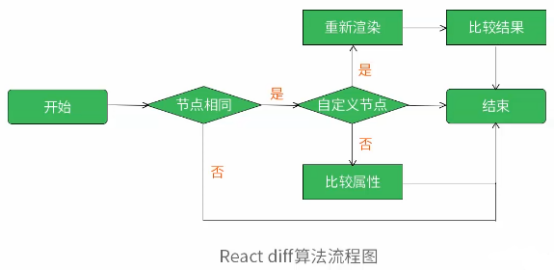
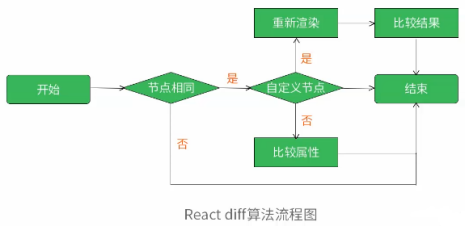
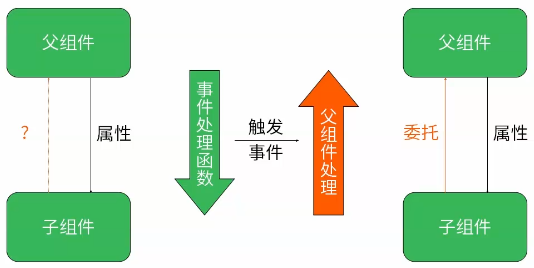
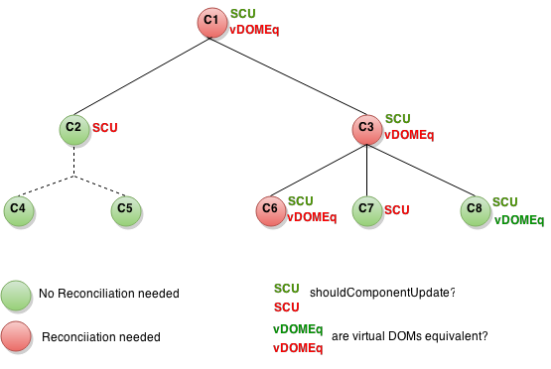
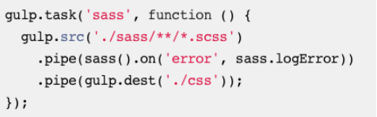
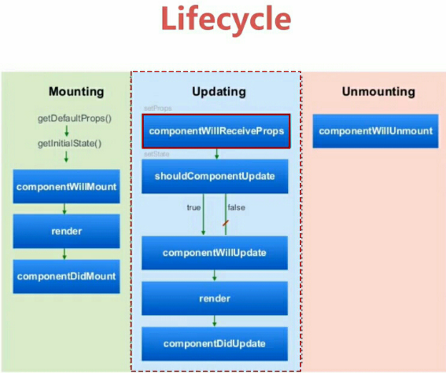

http://www.css88.com/react/docs/getting-started.html(翻译太烂)
http://wiki.jikexueyuan.com/list/react/(不完整)
注意: 按照流程自己把实例做一遍。
http://www.css88.com/react/docs/thinking-in-react.html
1. 在 JavaScript 代码里写着 XML 格式的代码称为 JSX。
2. 如果你想在 browserify，webpack 或者或其它兼容CommonJS的模块系统里使用 React，只要使用 react npm 包即可。而且，jsx 转换工具可以很轻松的地集成到大部分打包系统里(不仅仅是 CommonJS)。
1. React是安全的。我们不生成HTML字符串，因此默认阻止了XSS 攻击。
2. 我们在组件内部通过this.props 访问传递给组件的属性，通过this.props.children访问传递给组件的内嵌元素。
3. props 是不可变的：它们从父节点传递过来，被父节点“拥有”。为了实现交互，我们给组件引进了可变的 state。this.state 是组件私有的，可以通过调用 this.setState() 来改变它。当状态更新之后，组件重新渲染自己。
4. 我们利用Ref属性给子组件命名，this.refs引用组件。我们可以在组件上调用getDOMNode()获取浏览器本地的DOM元素。
注释:React 0.14之后(包括0.14)，ref开始指向真实的DOM节点或React组件实例。
1. React 构建项目的步骤:
第一步：拆分用户界面为一个组件树
(1)组件的拆分原则(单一功能原则): 理想状态下一个组件应该只做一件事，假如它功能逐渐变大就需要被拆分成更小的子组件。
第二步：利用 React ，创建应用的一个静态版本
(1)为了创建一个渲染数据模型的应用静态版本，你将会构造一些组件，这些组件重用其它组件，并且通过props传递数据。
(2)不要使用state来构建静态页面。 state 仅用于实现交互功能，也就是说，数据随着时间变化。因为这是一个静态的应用版本，所以你并不需要 state。
(3)在简单的应用中，通常情况下从上至下构建组件；在大型的项目中，从下至上的方式构建组件更加简单，因为这样可以在构建的同时写测试代码。
(4)React 的单向数据流（也被称作“单向绑定”）保持了一切东西模块化，很容易查错，并且速度很快。
第三步：识别出最小的（但是完整的）代表 UI 的state
(1)为了正确构建应用，首先需要考虑应用需要的最小的可变 state 数据模型集合。此处关键点在于精简：不要存储重复的数据。
(2)简单地对每一项数据提出三个问题：
①是否是从父级通过 props 传入的？
如果是，可能不是state。
②是否会随着时间改变？
如果不是，可能不是state。
③能根据组件中其它 state 数据或者 props 计算出来吗？
如果是，就不是state。
第四步：确认state的生命周期
(1)我们辨别出了应用的 state 数据模型的最小集合。接下来，需要指出哪个组件会改变或者说拥有这个 state 数据模型，这对新手通常是最难理解和最具挑战的。
(2)对于应用中的每一个 state 数据：
①找出每一个基于那个 state 渲染界面的组件。
②找出共同的祖先组件。
③共同的祖先组件，或组件树中位于更高层级的组件拥有这个state。
④如果找不出拥有这个 state 数据模型的合适组件，创建一个新的组件来维护这个state，层级位于所有共同拥有者组件的上面。
第五步：添加反向数据流
(1)父组件将会传递一个回调函数给子组件，此函数将会在state应该被改变的时候触发。
(2)我们可以使用input的onChange事件来监听用户输入，从而确定何时触发回调函数。
1. React 是一个Facebook和Instagram用来创建用户界面的JavaScript库。React 是MVC中的 V(视图)。创造React 是为了解决一个问题：构建随着时间数据不断变化的大规模应用程序。
2. 简单——仅仅只要表达出你的应用程序在任一个时间点应该长的样子，然后当底层的数据变了，React 会自动处理所有用户界面的更新。
注释:视图与状态对应，屏蔽手动DOM操作。
3. 声明式 (Declarative)——数据变化后，React 概念上与点击“刷新”按钮类似，但仅会更新变化的部分。
注释:diff算法，优化性能。
4. 通过 React 你唯一要做的事情就是构建可复用的组件。
1. 用户界面能做的最基础的事就是呈现一些数据。React 让显示数据变得简单，当数据变化时，用户界面会自动同步更新。
2. 响应式更新 (Reactive Updates):React通过diff算法，实现效率最高的 DOM 改变。
3. 在组件内部，this.props属性是不能直接改变的，this.props属性在组件内部是只读的。
4. 组件就像是函数: React 组件非常简单。你可以认为它们就是简单的函数，接受props和state作为参数，然后渲染出 HTML。
5. 不要在生产环境中转换JSX。可以通过我们的命令行工具 react-tools 包来预编译你的代码。
6. JSX语法并不是 React 所必须的。你可以通过 React.createElement 来创建一个DOM树。三个参数依次为元素、属性对象和子节点。
var child = React.createElement('li', null, 'Text Content');
var root = React.createElement('ul', { className: 'my-list' }, child);
ReactDOM.render(root, document.getElementById('example'));
注释:①使用打包工具将JSX语法转化为JavaScript语法之后即为这种写法。②babel官方提供的一个转化库(browser.js)的作用即为将JSX语法转换成javascript语法。③使用JS语法只需要react.js和react-dom.js两个库，不再需要browser.js。
注意:React.createElement()方法获得的是React元素(虚拟DOM)。
7. JSX与JS转换(Transform)
JSX 把类 XML 的语法转成原生 JavaScript，XML 元素、属性和子节点被转换成 React.createElement 的参数。
var Nav;
// 输入 (JSX):
var app = <Nav color="blue" />;
// 输出 (JS):
var app = React.createElement(Nav, {color:"blue"});
注意:React.createElement()方法获得的是React元素(虚拟DOM)。
8. JSX 也支持使用 XML 语法定义子节点
var Nav, Profile;
// 输入 (JSX):
var app = <Nav color="blue"><Profile>click</Profile></Nav>;
// 输出 (JS):
var app = React.createElement(
Nav,
{color:"blue"},
React.createElement(Profile, null, "click")
);
注释:①React.createElement()方法可以通过嵌套的写法表示组件树。②若React.createElement()方法没有属性对象的参数，则第二个参数为null，不可以省略。
注意:React.createElement()方法获得的是React元素(虚拟DOM)。
9. React 可以渲染HTML标签或 React 组件。
10. 要渲染 HTML 标签，只需在 JSX 里使用小写字母开头的标签名。
var myDivElement = <div className="foo" />;
ReactDOM.render(myDivElement,
document.getElementById('example'));
要渲染 React 组件，只需创建一个大写字母开头的本地变量。
var MyComponent = React.createClass({/*...*/});
var myElement = <MyComponent someProperty={true} />;
ReactDOM.render(myElement, document.getElementById('example'));
React的JSX语法约定使用首字母大、小写来区分自定义组件和HTML标签。
11. 修改props对象可能会导致预料之外的结果，所以最好不要去修改prop对象。
12. JSX展开属性(Spread Attributes)
var component = <Component {...props} />;
展开属性是JSX 语法的新特性，传入对象的属性会被复制到组件内。
它能被多次使用，也可以和其它属性一起用。注意顺序很重要，后面的会覆盖掉前面的。
var props = { foo: 'default' };
var component = <Component {...props} foo={'override'} />;
console.log(component.props.foo); // 'override'
注释:... 操作符（增强的操作符）已经被ES6数组支持。相关的还有ES7规范草案中的Object剩余和展开属性(Rest and Spread Properties)。React利用了这些还在制定中标准中已经被支持的特性来使 JSX 拥有更优雅的语法。
13. HTML 实体(JSX 陷阱)
如果想在 JSX 表达式中显示 HTML 实体，可以会遇到二次转义的问题，因为为了防止各种 XSS 攻击，React 默认会转义所有字符串。
实例:<div>First · Second</div>
期待渲染结果:First . Second
错误写法:
<div>{'First · Second'}</div>
会显示 “First · Second”
正确写法:
<div>{'First · Second'}</div>
<div>{'First \u00b7 Second'}</div>
<div>{'First ' + String.fromCharCode(183) + ' Second'}</div>
<div>{['First ', <span>·</span>, ' Second']}</div>
14. 自定义 HTML 属性
如果往原生 HTML 元素里传入 HTML 规范里不存在的属性，React 不会显示它们。如果需要使用自定义属性，要加 data- 前缀。
<div data-custom-attribute="foo" />
以 aria- 开头的 [网络无障碍] 属性可以正常使用。
<div aria-hidden={true} />
注释:解释了key值在调试时无法显示的原因，而在HTML中写的原生DOM会显示 HTML 规范里不存在的属性。
1. 事件处理与事件代理(Synthetic Events)
在React 组件类中只需把事件处理器(event handler)以骆峰命名(camelCased)的形式当作组件的 props 传入即可，就像使用普通 HTML 那样。React 内部创建一套合成事件系统来使所有事件在 IE8 和以上浏览器表现一致。也就是说，React 知道如何冒泡和捕获事件，而且你的事件处理器接收到的events参数与W3C规范一致，兼容各种浏览器。
2. 自动绑定(Autobinding)和事件代理(Event Delegation)
自动绑定(Autobinding): 在JavaScript里创建回调的时候，为了保证this的正确性，一般都需要显式地绑定方法到它的实例上。有了React，所有方法中的this被自动绑定到了它的组件实例上。
注意: 这就是父组件通过委托的方式将函数作为属性(props)传递给子组件，函数中的this仍指向父组件的原因。
事件代理(Event Delegation): React 并没有把事件处理器绑定到节点本身。React 启动的时候，它在最外层使用唯一一个事件监听器处理所有事件。当组件被加载和卸载时，只是在内部映射里添加或删除事件处理器。当事件触发，React根据映射来决定如何分发。
注释:this自动绑定，事件监听器只有一个。
3. 组件其实是状态机(State Machines)
React 把用户界面当作简单状态机。把用户界面想像成拥有不同状态然后渲染这些状态，可以轻松让用户界面和数据保持一致。在React 里，只需更新组件的state，然后根据新的state重新渲染用户界面（不要操作 DOM）。React 来决定如何最高效地更新 DOM。
注释:React重新渲染的条件—属性改变、状态改变→diff算法发现DOM差异。
4. State 工作原理
常用的通知 React 数据变化的方法是调用 setState(data, callback)。这个方法会合并(merge)data 到 this.state，并重新渲染组件。渲染完成后，调用可选的callback回调。大部分情况下不需要提供 callback，因为 React 会负责把界面更新到最新状态。
注意:是合并而不是替换。
5. 哪些组件应该有 State
组件的大部分工作应该是从 props 里获取数据并渲染出来。但是，有时需要对用户输入、服务器请求或者时间变化等作出响应，这时才需要使用 State。尝试把尽可能多的组件无状态化。 这样做能隔离 state，把它放到最合理的地方，也能减少冗余，同时易于解释程序的运作过程。
常用的模式是创建多个只负责渲染数据的无状态(stateless)组件，在它们的上层创建一个有状态(stateful)组件并把它的状态通过 props 传给子级。这个有状态的组件封装了所有用户的交互逻辑，而这些无状态组件则负责声明式地渲染数据。
6. 哪些应该作为State
State 应该包括那些可能被组件的事件处理器改变并触发用户界面更新的数据。 真实的应用中这种数据一般都很小且能被 JSON 序列化。当创建一个状态化的组件时，想象一下表示它的状态最少需要哪些数据，并只把这些数据存入 this.state。在 render() 里再根据 state 来计算你需要的其它数据。如果在 state 里添加冗余数据或计算所得数据，需要你经常手动保持数据同步(this.setState())，不能让 React 来帮你处理。
注释: getInitialState会在组件的每一个实例被初始化时调用一次，组件实例的属性或者状态发生改变时，不会被再次调用。若数据在组件内以state状态的形式存在，则除非调用this.setState()方法，该state数据不会更新，render函数也不会自动触发。若数据在组件内以props属性的形式存在，只要父组件传入的props属性值发生变化，就自动触发render函数，更新视图。
7. 哪些不应该作为 State
this.state 应该仅包括能表示用户界面状态所需的最少数据。因些，它不应该包括：
(1)计算所得数据：不要担心根据state来预先计算数据——把所有的计算都放到 render() 里更容易保证用户界面和数据的一致性。
(2)React 组件：在render() 里使用当前props和state来创建它。
(3)基于props的重复数据：尽可能使用 props 来作为惟一数据来源。把 props 保存到 state 的一个有效的场景是需要知道它以前值的时候，因为未来的 props 可能会变化。
1. 组件从属关系
拥有者就是给其它组件设置props的那个组件。即如果组件Y在render() 方法是创建了组件 X，那么Y就拥有X。组件不能修改自身的 props ,它们总是与它们拥有者的设置保持一致。这是保持用户界面一致性的关键性原则。
把从属关系与父子关系加以区别至关重要。从属关系是组件之间的关系，而父子关系简单来讲就是DOM标签的关系。
2. 子级
Parent能通过专门的this.props.children props 读取子级。
this.props.children是一个不透明的数据结构：通过 React.Children 工具类来操作。
3. 子级校正(Reconciliation)
校正就是每次 render 方法调用后 React 更新 DOM 的过程。 一般情况下，子级会根据它们被渲染的顺序来做校正。
注释:key值存在的意义。
注意:①父组件的重新渲染一定触发子组件的shouldComponentUpdate函数。②key值存在的意义是使diff算法更加准确(提高虚拟DOM比较双方的匹配度)，但并不能减少diff算法执行的次数。③shouldComponentUpdate方法存在的意义是使diff算法更加有效(减化无意义的虚拟DOM比较)，有效减少虚拟DOM比较的次数。
4. 动态子级
如果子组件位置会改变（如在搜索结果中）或者有新组件添加到列表开头，情况会变得更加复杂。如果子级要在多个渲染阶段保持自己的特征和状态，在这种情况下，你可以通过给子级设置惟一标识的 key 来区分。
当React校正带有 key 的子级时，它会确保它们被重新排序（而不是破坏）或者删除（而不是重用）。务必把key添加到子级数组里组件本身上，而不是每个子级内部最外层的 HTML上：
// 错误！
var ListItemWrapper = React.createClass({
render: function() {
return <li key={this.props.data.id}>
{this.props.data.text}
</li>;
}
});
var MyComponent = React.createClass({
render: function() {
return (
<ul>
{this.props.results.map(function(result) {
return <ListItemWrapper data={result}/>;
})}
</ul>
);
}
});
// 正确
var ListItemWrapper = React.createClass({
render: function() {
return <li>{this.props.data.text}</li>;
}
});
var MyComponent = React.createClass({
render: function() {
return (
<ul>
{this.props.results.map(function(result) {
return <ListItemWrapper key={result.id} data={result}/>;
})}
</ul>
);
}
});
注释:①数组.forEach():从头到位遍历数组，每个元素都调用指定的函数（该方法的参数），该方法在元素遍历结束之前无法终止。②数组.map():调用数组的每一个元素传递给指定函数，并返回一个数组，它包含该函数的返回值。③在React旧的版本中，可以传递 object 来做有 key 的子级()。object 的 key 会被当作每个组件的 key，新版React已不接受。Objects are not valid as a React child (found: object with keys {1, 2, 3, 4}).
5. 数据流
React 里，数据通过上面介绍过的 props 从拥有者流向归属者。这就是高效的单向数据绑定(one-way data binding)：拥有者通过它的 props 或 state 计算出一些值，并把这些值绑定到它们拥有的组件的 props 上。因为这个过程会递归地调用，所以数据变化会自动在所有被使用的地方反映出来。
6. 性能提醒
执行 JavaScript 非常的快，而且 render() 方法一般比较简单，所以在大部分应用里这样做速度极快。此外，性能的瓶颈大多是因为DOM更新，而非JS执行，而且 React 会通过批量更新和变化检测来优化性能。
有时候需要做性能优化。这时可以重写shouldComponentUpdate()方法，通过返回 false 来让 React 跳过对子树的处理。
注意：如果在数据变化时让shouldComponentUpdate()返回 false，React 就不能保证用户界面同步。当使用它的时候一定确保你清楚到底做了什么，并且只在遇到明显性能问题的时候才使用它。不要低估JavaScript的速度，DOM 操作通常才是慢的原因。
1. Prop 验证
随着应用不断变大，保证组件被正确使用变得非常有用。为此我们引入 propTypes。React.PropTypes 提供很多验证器 (validator) 来验证传入数据的有效性。当向 props 传入无效数据时，JavaScript 控制台会抛出警告。注意为了性能考虑，只在开发环境验证 propTypes。下面用例子来说明不同验证器的区别：
React.createClass({
propTypes: {
// 可以声明 prop 为指定的 JS 基本类型。
// 默认情况下，这些 prop 都是可传可不传的。
optionalArray: React.PropTypes.array,
optionalBool: React.PropTypes.bool,
optionalFunc: React.PropTypes.func,
optionalNumber: React.PropTypes.number,
optionalObject: React.PropTypes.object,
optionalString: React.PropTypes.string,
// 所有可以被渲染的对象：数字，字符串，DOM 元素或包含这些类型的数组。
optionalNode: React.PropTypes.node,
// React 元素(单个)
optionalElement: React.PropTypes.element,
// 用 JS 的 instanceof 操作符声明 prop 为类的实例。
optionalMessage: React.PropTypes.instanceOf(Message),
// 用 enum 来限制 prop 只接受指定的值。
optionalEnum: React.PropTypes.oneOf(['News', 'Photos']),
// 指定的多个对象类型中的一个
optionalUnion: React.PropTypes.oneOfType([
React.PropTypes.string,
React.PropTypes.number,
React.PropTypes.instanceOf(Message)
]),
// 指定类型组成的数组
optionalArrayOf: React.PropTypes.arrayOf(React.PropTypes.number),
// 指定类型的属性构成的对象
optionalObjectOf: React.PropTypes.objectOf(React.PropTypes.number),
// 特定形状参数的对象
optionalObjectWithShape: React.PropTypes.shape({
color: React.PropTypes.string,
fontSize: React.PropTypes.number
}),
// 以后任意类型加上 `isRequired` 来使 prop 不可空。
requiredFunc: React.PropTypes.func.isRequired,
// 不可空的任意类型
requiredAny: React.PropTypes.any.isRequired,
// 自定义验证器。如果验证失败需要返回一个 Error 对象。不要直接
// 使用 `console.warn` 或抛异常，因为这样 `oneOfType` 会失效。
customProp: function(props, propName, componentName) {
if (!/matchme/.test(props[propName])) {
return new Error('Validation failed!');
}
}
},
/* ... */
});
2. 默认 Prop 值
getDefaultProps: function() {
return {
value: 'default value'
};
当父级没有传入props时，getDefaultProps()可以保证 this.props.value 有默认值，注意 getDefaultProps 的结果会被缓存。
注释:getDefaultProps在第一个实例被创建之前就已生成，所有组件实例共享引用。
3. 传递 Props
有一些常用的 React 组件只是对 HTML 做简单扩展。通常，你想少写点代码来把传入组件的 props 复制到对应的 HTML 元素上。这时 JSX 的 spread 语法会帮到你：
var CheckLink = React.createClass({
render: function() {
//这样会把 CheckList 所有的 props 复制到 <a>
return <a {...this.props}>{'√ '}{this.props.children}</a>;
}
});
4. 单个子级
React.PropTypes.element 可以限定只能有一个子级传入。
var MyComponent = React.createClass({
propTypes: {
children: React.PropTypes.element.isRequired
},
render: function() {
return (
<div>
{this.props.children} // 有且仅有一个元素，否则会抛异常。
</div>
);
}
});
5. Mixins
组件是 React 里复用代码的最佳方式，但是有时一些复杂的组件间也需要共用一些功能。React 使用 mixins 来解决这类问题。
一个通用的场景是：一个组件需要定期更新。用 setInterval() 做很容易，但当不需要它的时候取消定时器来节省内存是非常重要的。React 提供生命周期方法来告知组件创建或销毁的时间。下面来做一个简单的mixin，使用 setInterval() 并保证在组件销毁时清理定时器。
var SetIntervalMixin = {
componentWillMount: function() {
this.intervals = [];
},
setInterval: function() {
this.intervals.push(setInterval.apply(null, arguments));
},
componentWillUnmount: function() {
this.intervals.map(clearInterval);
}
};
var TickTock = React.createClass({
mixins: [SetIntervalMixin], // 引用 mixin
getInitialState: function() {
return {seconds: 0};
},
componentDidMount: function() {
this.setInterval(this.tick, 1000); // 调用 mixin 的方法
},
tick: function() {
this.setState({seconds: this.state.seconds + 1});
},
render: function() {
return (
<p>
React has been running for {this.state.seconds} seconds.
</p>
);
}
});
ReactDOM.render(
<TickTock />,
document.getElementById('example')
);
注释:理解这种setInterval和clearInterval的用法。
注意:①arguments指向this.tick和1000。
②理解this.intervals.map(clearInterval);的含义。
数组的map方法传入一个函数作为实参，数组的每一个元素又作为该函数的参数。
③执行步骤:在componentWillMount方法中创建intervals空数组→在componentDidMount方法中创建定时器，在定时器中每1s更新一次State，并将定时器放入intervals数组→在componentWillUnmount()方法中清除该组件实例的所有定时器。
总结:该SetIntervalMixin可以处理该组件实例的多个定时器，本实例中只创建一个定时器。
如果一个组件使用了多个 mixin，并在多个 mixin 定义了同样的生命周期方法（如：多个 mixin 都需要在组件销毁时做资源清理操作），所有这些生命周期方法都保证会被执行到。方法执行顺序是：首先按 mixin 引入顺序执行 mixin 里方法，最后执行组件内定义的方法。
注释:①引入顺序靠前的mixin中方法的优先级高于引入顺序靠后的mixin中方法的优先级。②mixin中方法的优先级高于组件内定义的方法的优先级。
1. React 里有一个非常常用的模式就是对组件做一层抽象。组件对外公开一个简单的属性(Props)来实现功能，但内部细节可能有非常复杂的实现。
可以使用JSX展开属性 来合并现有的props和其它值：
return <Component {...this.props} more="values" />;
如果不使用JSX，可以使用一些对象辅助方法如 ES6 的 Object.assign 或 Underscore _.extend。
return Component(Object.assign({}, this.props, { more: 'values' }));
引申:Object.assign(target,[source1...sourceN])将source对象的可枚举属性赋值到target对象上。
举例: <script>
var obj1={};
var obj2={name:'zz'};
var obj3={name:'cc',age:20};
Object.assign(obj1,obj2,obj3);
console.log(obj1);
</script>
2. 在 JSX 里使用 ... 传递
有时把所有属性都传下去是不安全或��嗦的。这时可以使用解构赋值中的剩余属性特性来把未知属性批量提取出来。
列出所有当前使用的属性，后面跟着 ...other。
var { checked, ...other } = this.props;
这样能确保把所有 props 传下去，除了那些已经被使用了的。
var FancyCheckbox = React.createClass({
render: function() {
var { checked, ...other } = this.props;
var fancyClass = checked ? 'FancyChecked' : 'FancyUnchecked';
// `other` 包含 { onClick: console.log } 但 checked 属性除外
return (
<div {...other} className={fancyClass} />
);
}
});
ReactDOM.render(
<FancyCheckbox checked={true} onClick= {console.log.bind(console)}>
Hello world!
</FancyCheckbox>,
document.getElementById('example')
);
在传递这些未知的 other 属性时，要经常使用解构赋值模式。
问题: console.log.bind(console);什么意思？
3. 使用和传递同一个 Prop
如果组件需要使用一个属性又要往下传递，可以直接使用 checked={checked} 再传一次。这样做比传整个 this.props 对象要好，因为更利于重构和语法检查。
var FancyCheckbox = React.createClass({
render: function() {
var { checked, title, ...other } = this.props;
var fancyClass = checked ? 'FancyChecked' : 'FancyUnchecked';
var fancyTitle = checked ? 'X ' + title : 'O ' + title;
return (
<label>
<input {...other}
checked={checked}
className={fancyClass}
type="checkbox"
/>
{fancyTitle}
</label>
);
}
});
注意:顺序很重要，把 {...other} 放到 JSX props 前面会使它不覆盖其他属性。上面例子中我们可以保证 input 的 type 是 "checkbox"。
4. 剩余属性和展开属性 ...
剩余属性可以把对象剩下的属性提取到一个新的对象。会把所有在解构赋值中列出的属性剔除。
这是 ES7 草案中的试验特性。
var { x, y, ...z } = { x: 1, y: 2, a: 3, b: 4 };
x; // 1
y; // 2
z; // { a: 3, b: 4 }
注释:chrome浏览器已经支持该语法。
1. 交互属性
表单组件支持几个受用户交互影响的属性：
(1)value，用于 <input>、<textarea> 组件。
(2)checked，用于类型为 checkbox 或者 radio 的 <input> 组件。
(3)selected，用于 <option> 组件。
在 HTML 中，<textarea> 的值通过子节点(innerHTML)设置；在 React 中则应该使用 value 代替。
2. 表单组件可以通过 onChange 回调函数来监听组件变化。当用户做出以下交互时，onChange 执行并通过浏览器做出响应：
(1)<input> 或 <textarea> 的 value 发生变化时。
(2)<input> 的 checked 状态改变时。
(3)<option> 的 selected 状态改变时。
和所有 DOM 事件一样，所有的HTML原生组件都支持onChange属性，而且可以用来监听冒泡的 change 事件。
3. 受限组件
设置了value 的<input>是一个受限组件。对于受限的<input>，渲染出来的HTML元素始终保持 value 属性的值。例如：
render: function() {
return <input type="text" value="Hello!" />;
}
上面的代码将渲染出一个值为 Hello! 的 input 元素。用户在渲染出来的元素里输入任何值都不起作用，因为 React 已经赋值为 Hello!。
注意:受限组件用户输入无效，但使用JS脚本进行DOM操作仍然生效。
4. 不受限组件
没有设置value(或者设为 null)的<input>组件是一个不受限组件。对于不受限的<input>组件，渲染出来的元素直接反应用户输入。例如：
render: function() {
return <input type="text" />;
}
上面的代码将渲染出一个空值的输入框，用户输入将立即反应到元素上。和受限元素一样，使用onChange事件可以监听值的变化。
5. 如果想给组件设置一个非空的初始值，可以使用defaultValue属性。
render: function() {
return <input type="text" defaultValue="Hello!" />;
}
上面的代码渲染出来的元素和受限组件一样有一个初始值，但这个值用户可以改变并会反应到界面上。
6. 类型为radio、checkbox的<input> 支持defaultChecked属性，<select>支持defaultValue属性。
render: function() {
return (
<div>
<input type="radio" name="opt" defaultChecked />
Option 1
<input type="radio" name="opt" /> Option 2
<select defaultValue="C">
<option value="A">Apple</option>
<option value="B">Banana</option>
<option value="C">Cranberry</option>
</select>
</div>
);
}
注释:在React中，select的value值为被选中option的value值，可以通过改变select的value值来设置被选项。
7. 为什么 <textarea> 使用 value 属性
<!-- 反例：在 React 中不要这样使用！ -->
<textarea name="description">This is the description.</textarea>
<!-- 在 React中可以这样使用！ -->
<textarea name="description" value="This is a description." />
注释:对于React中的textarea元素，使用value属性替代innerHTML值。
8. 为什么 <select> 使用 value 属性
HTML 中 <select> 通常使用 <option> 的 selected 属性设置选中状态；React 为了更方面的控制组件，采用以下方式代替：
<select value="B">
<option value="A">Apple</option>
<option value="B">Banana</option>
<option value="C">Cranberry</option>
</select>
如果是不受限组件，则使用 defaultValue。
注意：①给 value 属性传递一个数组，可以选中多个选项：<select multiple={true} value={['B', 'C']}>。②为实现多选，value属性传递一个数组必须和multiple={true}结合使用。
1. React提供了强大的抽象，让你在大多数应用场景中不再直接操作DOM。
2. 虚拟DOM
React是很快的，因为它从不直接操作DOM。React在内存中维护一个快速响应的DOM描述。render()方法返回一个DOM的描述(React元素/虚拟DOM)，React能够利用内存中的描述来快速地计算出差异，然后更新浏览器中的DOM。
React实现了一个完备的虚拟事件系统，尽管各个浏览器都有自己的怪异行为，React确保所有事件对象都符合W3C规范，并且持续冒泡，用一种高性能的方式跨浏览器。你甚至可以在IE8中使用一些HTML5的事件！
3. 大多数时候你应该呆在React的“虚拟浏览器”世界里面，因为它性能更加好，并且容易思考。但是，有时你需要调用底层的API，或许借助于第三方的类似于jQuery插件这种库。React为你提供了直接使用底层DOM API的途径。
注释:使用第三方库的关键在于获取真实DOM对象。
4. getDOMNode()
每一个挂载的React组件有一个getDOMNode()方法，你可以调用这个方法来获取对该节点的引用。
注意：getDOMNode()仅在挂载的组件上有效（也就是说，组件已经被放进了DOM中）。如果你尝试在一个未被挂载的组件上调用这个函数(例如在创建组件的render()函数中调用getDOMNode())，将会抛出异常。
注释:React 0.14之后(包括0.14),ref开始指向真实的DOM节点或React组件实例。
Question:The difference between findDOMNode and getDOMNode
ReactDOM.findDOMNode(this.refs.email).value
And this.refs.email.getDOMNode().value
Explain: The other big change we’re making in this release is exposing refs to DOM components as the DOM node itself. That means: we looked at what you can do with a ref to a React DOM component and realized that the only useful thing you can do with it is call this.refs.giraffe.getDOMNode() to get the underlying DOM node. Starting with this release, this.refs.giraffe is the actual DOM node. Note that refs to custom (user-defined) components work exactly as before; only the built-in DOM components are affected by this change.
5. 组件生命周期
组件的生命周期包含三个主要部分：
(1)挂载：组件被插入到DOM中。
(2)更新：组件被重新渲染，查明DOM是否应该刷新。
(3)移除：组件从DOM中移除。
React提供will方法，会在某些行为发生之前调用，和did方法，会在某些行为发生之后调用。
挂载
(1)getInitialState() 在组件被挂载之前调用。状态化的组件应该实现这个方法，返回初始的state数据。
(2)componentWillMount() 在挂载发生之前立即被调用。
(3)componentDidMount() 在挂载结束之后马上被调用。需要DOM节点的初始化操作应该放在这里。
更新
(1)componentWillReceiveProps(object nextProps)当一个挂载的组件接收到新的props的时候被调用。该方法应该用于比较this.props和nextProps，然后使用this.setState()来改变state。
(2)shouldComponentUpdate(object nextProps, object nextState): boolean当组件做出是否要更新DOM的决定的时候被调用。实现该函数，优化this.props和nextProps，以及this.state和nextState的比较，如果不需要React更新DOM，则返回false。
(3)componentWillUpdate(object nextProps, object nextState)在更新发生之前被调用。
(4)componentDidUpdate(object prevProps, object prevState)在更新发生之后被调用。
移除
(1)componentWillUnmount() 在组件移除和销毁之前被调用。清理工作应该放在这里。
6. 父子组件间钩子函数的执行顺序
var InnerComponent = React.createClass({
componentWillMount:function(){console.log(3);},
render:function(){
console.log(4);
return <span>SonComponent</span>
},
componentDidMount:function(){console.log(5);}
})
var OuterComponent = React.createClass({
componentWillMount:function(){console.log(1);},
render: function() {
console.log(2);
return <div><InnerComponent/></div>
},
componentDidMount:function(){console.log(6);}
});
注释:与完成全部任务周期和完成子任务周期的逻辑关系类似。子组件在父组件render函数内被挂载，子组件全部挂载完成之后父组件才结束render函数。
7. forceUpdate()
如果 render() 方法从 this.props 或者 this.state 之外的地方读取数据，你需要通过调用 forceUpdate() 告诉 React什么时候需要再次运行 render()。如果直接改变了this.state，也需要调用 forceUpdate()。
即:如果直接操作state对象需要调用forceUpdate方法，如果使用setState 方法就会自动重新渲染的。
通常情况下，应该尽量避免所有使用 forceUpdate() 的情况，在 render() 中仅从this.props 和 this.state 中读取数据。这会使应用大大简化，并且更加高效。
8. React 支持一个非常特殊的属性——ref，你可以将它附加到任何从 render()中输出的组件内部的React元素(虚拟DOM)或真实DOM上。这个特殊的属性允许你定位到任何从render()中返回的组件实例或真实DOM节点。
引申: var MyTitle = React.createClass({
render: function() {
return <h1 ref="h1">
<div ref="div"></div>
</h1>;
},
componentDidMount:function(){
debugger;
}
});
注释:this.refs = {div: div, h1: h1},即ref可以附加在组件内部的任何React元素(虚拟DOM)或真实DOM上。通过this.refs.ref值可以定位到对应的React实例或真实DOM。
注意:①在componentDidMount钩子函数及之后的生命周期中，this.refs.ref值才可以被检测到。②通过父组件的this.refs可以定位到附加ref属性的子组件实例(和子真实DOM元素)，进而可以定位到子组件内部附加ref属性的孙组件实例(和孙真实DOM元素)，进而可以向内一层层定位。
9. 实例
var SonComponent = React.createClass({
render:function(){
return <div ref = "son2Div">
<div ref="grandSonDiv">oldValue</div>
</div>
},
componentDidMount:function(){
window.sonDiv=this;
}
})
var FatherComponent = React.createClass({
render: function() {
return <div ref="outDiv">
<SonComponent ref= "son1Div"/>
</div>
},
componentDidMount:function(){
this.refs.son1Div.refs.grandSonDiv.innerHTML="newValue";
//newValue赋值生效
console.log(this.refs.son1Div);
//SonComponent组件
console.log(window.sonDiv === this.refs.son1Div);
//true
console.log(this.refs.son1Div.refs.son2Div);
//son2Div元素
}
});
ReactDOM.render(<FatherComponent/>,
document.getElementById('container'))
注释:父组件执行componentDidMount方法，说明父组件以及其拥有的所有子组件和其包裹的所有真实DOM节点都已挂载完成。
注意:①只要ref连续，在组件之间外层组件可以向内层组件进行单向数据通讯。只要附加ref，在组件内部父节点可以与子节点之间进行双向数据交互。②在组件中，可以给任何React元素(虚拟DOM)和真实DOM元素附加ref属性，但不可以给该组件本身附加ref属性，如果想给该组件本身附加ref属性，只能够通过该组件的外层组件添加，这也即是组件之间只能够通过ref进行单向数据通讯的原因。③注意区分组件实例(this.refs.son1Div)和组件render函数返回的真实DOM节点(this.refs.son1Div.refs.son2Div)。
10. 你可以在组件类中定义任何公共方法(如在 Typeahead 中的复位方法)，并通过 refs(如 this.refs.myTypeahead.reset())调用这些公共方法。
注释:①this.refs.myTypeahead定位到的是组件实例，只有组件实例可以调用组件类中定义的方法。②父组件可以通过这种方式调用子组件中的方法。
11. 使用refs可以“让事情发生”在你的应用程序中。我们应该慎重的思考 state 应该属于组件层次结构的什么位置。通常情况下，“拥有”那个state 的适当位置在更高的层次结构。把 state 放置在那里通常可以消除任何想要使用 ref 来“让事情发生”的现象——相反，数据流通常会实现你的目标。
总结: 将state放置在恰当位置(通常位于更高层次结构)，可以避免ref的使用。例如，父组件可通过this.setState()取代this.refs.son.reset()。
1. 浏览器中的JSX转换器是相当大的，并且会在客户端导致无谓的计算，这些计算是可以避免的。因此不要在生产环境使用。
2. 如果你有npm，你可以简单地运行npm install -g react-tools来安装我们的命令行jsx工具。这个工具会把使用JSX语法的文件转换成纯的可以直接在浏览器里面运行起来的JavaScript文件。它也会为你监视目录，然后自动转换变化的文件。例如：jsx --watch src/ build/。运行jsx --help来查看更多关于如何使用这个工具的信息。
1. React.addons 是为了构建 React 应用而放置的一些有用的工具。这些功能应当被视为实验性的，但最终可能被添加进核心代码中。
(1)TransitionGroup和CSSTransitionGroup，用于处理动画和过渡，这些效果通常实现起来都不简单，例如在一个组件移除之前执行一段动画。
(2)LinkedStateMixin，用于简化用户表单输入数据和组件state之间的双向数据绑定。
(3)classSet，用于更加干净简洁地操作 DOM 中的class字符串。
(4)cloneWithProps，用于实现React组件浅复制，同时改变它们的props。
(5)update，一个辅助方法，使在JavaScript中处理不可变数据更加容易。
(6)PureRenderMixin，在某些场景下的性能检测器。
(7)TestUtils， 简单的辅助工具，用于编写测试用例。
(8)Perf，用于性能测评，并帮助你检查出可优化的功能点。
要使用这些插件，需要用 react-with-addons.js （和它的最小化副本）替换常规的React.js。
2. 当通过npm使用react包的时候，只要简单地用 require('react/addons') 替换 require('react') 来得到带有所有插件的React。
3. 动画
http://wiki.jikexueyuan.com/project/react/animation.html
4. 双向绑定辅助工具
http://wiki.jikexueyuan.com/project/react/two-way-binding-helpers.html
5. 类名操作
http://wiki.jikexueyuan.com/project/react/class-name-manipulation.html
6. 测试工具集
http://wiki.jikexueyuan.com/project/react/test-utilities.html
7. 克隆组件
http://wiki.jikexueyuan.com/project/react/cloning-components.html
8. 键控的片段
http://wiki.jikexueyuan.com/project/react/keyed-fragments.html
9. 不可变数据的辅助工具
http://wiki.jikexueyuan.com/project/react/immutability-helpers.html
10. RureRenderMixin
http://wiki.jikexueyuan.com/project/react/pure-render-mixin.html
11. 性能分析工具
http://wiki.jikexueyuan.com/project/react/performance-tools.html
1. 重新绘制组件的整个子树来回应每一个状态变化的做法让人怀疑这个过程是否对性能产生负面影响。
2. React 使用了一个虚拟的DOM(React元素)，这是浏览器中对于 DOM 树呈现的一个描述符。这种表示形式让 React 避免产生 DOM 节点和访问现有的节点。
注意:一个React元素是一个轻量的，无状态的，不可变的，虚拟的DOM元素表示。它有四个属性：type，props，key 和 ref。它没有方法，并且原型上什么都没有。
3. React 提供了一个组件的生命周期功能，shouldComponentUpdate，在重新绘制过程开始之前触发，使开发人员能够减少过程中的循环步骤。
shouldComponentUpdate: function(nextProps, nextState) {
return true;
}
请记住，React 将非常频繁的调用这个函数，所以实现必须要快。
4. shouldComponentUpdate函数的应用场景
React.createClass({
propsTypes: {
value: React.PropTypes.string.isRequired
},
shouldComponentUpdate: function(nextProps, nextState) {
return this.props.value !== nextProps.value;
},
render: function() {
return <div>this.props.value</div>;
}
});
5. 使用shouldComponentUpdate进行数据对比时，如果你的组件的属性或状态是引用数据类型，将出现以下问题。
问题1:var obj1 = {foo:"bar"};
var obj2 = {foo:"bar"};
console.log(obj1 !== obj2);
//数据不变，不需要生成虚拟DOM，执行diff算法，但是返回true，触发render函数。
问题2:var arr1 = [];
var arr2 = arr1.push(1);
console.log(arr1 !== arr2);
//数据变化，需要生成虚拟DOM，执行diff算法，但是返回false，不触发render函数。
6. Immutable-JS
Immutable-JS 是 Lee Byron 编写的脚本语言集合库。它实现了引用数据类型之间相同部分的共享。
(1)不可变对象：一旦创建，对象不能在另一个时间点改变。
(2)持久性：新的对象可以由已有的对象突变结合创建而成。创建新的对象后，已有的对象仍然有效。
(3)结构共享：新生成的对象与原来的对象拥有大致相同的结构，减少复制的最低限度，以提高空间利用效率和优化性能。如果新生成的对象等于原来的对象，则通常会返回原来的对象。
注释:Immutable-JS将基本数据类型的操作规则(不可变对象)在引用数据类型上加以实现。
7. 不可变性使得跟踪更改方便;因为变化总是产生新的对象。
在这个 Javascript 代码中：
var x = { foo: "bar" };
var y = x;
y.foo = "baz";
x === y; // true
虽然 y 被修改了，但因为它是对相同对象 x 的引用，所以这个比较返回 true。然而，这段代码可以用 immutable-JS 这样写：
var SomeRecord = Immutable.Record({ foo: null });
var x = new SomeRecord({ foo: 'bar' });
var y = x.set('foo', 'baz');
x === y; // false
在这种情况下，由于 x 突变，导致一个新的引用被返回，我们可以安全地假设 x 已经改变。
不可变的数据结构为开发者提供了一种更廉价和简洁的方式来跟踪对象的变化，为我们利用shouldComponentUpdate方法来优化性能提供了帮助。因此，如果我们利用 immutable-JS 提供的抽象特性来支持和声明属性，我们就可以使用 PureRenderMixin ，并实现性能的提升。
1. React 是 React 库的入口。如果使用的是预编译包，则 React 是全局的；如果使用 CommonJS 模块系统，则可以用 require() 函数引入 React。
2. React.createClass
ReactClass(组件类) createClass(object specification)
创建一个组件类，并作出定义。组件类中实现了render()方法，该方法返回一个子级。该子级可能包含很深的子级结构。组件类与标准原型类的不同之处在于，你不需要使用new来实例化。组件是一种很方便的封装，可以为你创建后台实例。
注释:ReactClass表示该API方法的返回值。
3. React.createElement
ReactElement(React元素(虚拟DOM)) createElement(
string/ReactClass type,
[object props],
[children ...]
)
创建并返回一个新的指定类型的 React元素(虚拟DOM) 。type 参数可以是一个 html 标签名字字符串（例如div，span，等等），或者是 ReactClass （通过 React.createClass 创建的）。
注释:React.createElement是JavaScript语法，而不是JSX语法。
注意:React.createElement()方法可以得到React元素(虚拟DOM)。
4. React.createFactory
factoryFunction createFactory(
string/ReactClass type
)
返回一个生成指定类型ReactElements的函数。比如 React.createElement，type 参数可以是一个 html 标签名字字符串（例如，div，span，等等），或者是 ReactClass。
引申(P98):事实上该方法写法如下
function createFactory(type){
return React.createElement.bind(null, type);
}
该函数创建方便的短函数，而不总调用React.createElement('div')。
var div = React.createFactory('div');
var root = div({ className: 'my-div' });
ReactDOM.render(root, document.body);
React 已经内置了常用 HTML 标签的工厂函数：
var root = React.DOM.ul({ className: 'my-list' },
React.DOM.li(null, 'Text Content')
);
如果使用 JSX 语法，就不需要工厂函数了。JSX 已经提供了一种方便的短函数来创建 ReactElement 实例。
5. ReactDOM.render
ReactComponent render(
ReactElement element,
DOMElement container,
[function callback]
)
渲染一个 ReactElement 到 DOM 中，放在 container 指定的 DOM 元素下，返回一个到该组件实例的引用。
如果 ReactElement 之前就被渲染到了 container 中，该函数将会更新此 ReactElement，仅改变需要改变的 DOM 节点以展示最新的 React 组件。
如果提供了可选的回调函数，则该函数将会在组件渲染或者更新之后调用。
6. React.unmountComponentAtNode
boolean unmountComponentAtNode(DOMElement container)
从 DOM 中移除已经挂载的 React 组件，清除相应的事件处理器和 state。如果在 container 内没有组件挂载，这个函数将什么都不做。如果组件成功移除，则返回 true；如果没有组件被移除，则返回 false。
7. React.renderToString
string renderToString(ReactElement element)
把组件渲染成原始的 HTML 字符串。该方法应该仅在服务器端使用。React 将会返回一个 HTML 字符串。你可以在服务器端用此方法生成 HTML，然后将这些标记发送给客户端，这样可以获得更快的页面加载速度，并且有利于搜索引擎抓取页面，方便做 SEO。
如果在一个节点上面调用 ReactDOM.render()，并且该节点已经有了服务器渲染的标记，React 将会维护该节点，并且仅绑定事件处理器，保证有一个高效的首屏加载体验。
8. React.renderToStaticMarkup
string renderToStaticMarkup(ReactElement element)
和renderToString类似，除了不创建额外的DOM属性，例如 data-react-id，因为这些属性仅在React内部使用。如果你想用React做一个简单的静态页面生成器，这是很有用的，因为丢掉额外的属性能够节省很多字节。
9. React.isValidElement
boolean isValidElement(* object)
判断对象是否是一个ReactElement。
注意:React.isValidElement(object)方法判断一个对象是否是一个ReactElemet(React元素/虚拟DOM)，只有当object为React元素/虚拟DOM时返回true，当object为组件实例或真实DOM时，返回false。
10. React.DOM
React.DOM运用React.createElement为 DOM 组件提供了方便的包装。该方式仅在未使用 JSX 的时候适用。例如，React.DOM.div(null, 'Hello World!')。
11. React.PropTypes
React.PropTypes 包含了能与组件 propTypes 对象共用的类型，用于验证传入组件的 props。
12. React.initializeTouchEvents
initializeTouchEvents(boolean shouldUseTouch)
配置React的事件系统，使React能处理移动设备的触摸(touch)事件。
13. React.Children
React.Children 为处理 this.props.children 这个封闭的数据结构提供了有用的工具。
(1) React.Children.map
object React.Children.map(object children, function fn [, object context])
在每一个直接子级（包含在children参数中的）上调用 fn 函数，此函数中的this指向上下文。如果children是一个内嵌的对象或者数组，它将被遍历：不会传入容器对象到fn中。如果children参数是null或者undefined，那么返回null或者undefined而不是一个空对象。
(2) React.Children.forEach
React.Children.forEach(object children, function fn [, object context])
类似于 React.Children.map()，但是不返回对象。
(3) React.Children.count
number React.Children.count(object children)
返回 children 当中的组件总数，和传递给 map 或者 forEach 的回调函数的调用次数一致。
(4) React.Children.only
object React.Children.only(object children)
返回 children 中仅有的子级。否则抛出异常。
1. ReactComponent
React 组件实例在渲染的时候创建。这些实例在接下来的渲染中被重复使用，可以在组件方法中通过 this 访问。唯一一种在 React 之外获取 React 组件实例句柄的方式就是保存 ReactDOM.render 的返回值。在其它组件内，可以使用 refs 得到相同的结果。
总结:三种访问组件实例(ReactComponent)的方式——在组件方法中通过this访问,在其他组件内通过refs访问，在React之外通过ReactDOM.render的返回值访问。
2. setState
setState(object nextState[, function callback])
合并 nextState 和当前 state。这是在事件处理函数中和请求回调函数中触发 UI 更新的主要方法。另外，也支持可选的回调函数，该函数在 setState 执行完毕并且组件重新渲染完成之后调用。
注意：(1)绝对不要直接改变 this.state，因为在之后调用 setState() 可能会替换掉你做的更改。仅仅使用this.state来获取状态，而不是修改状态。
(2)setState()不会立刻改变 this.state，而是创建一个即将处理的 state 转变。在调用该方法之后获取this.state的值可能会得到现有的值，而不是最新设置的值(见P53)。
(3)不保证setState()调用的同步性，为了提升性能，可能会批量执行 state 转变和 DOM 渲染。
(4)setState()将总是触发一次重绘，除非在 shouldComponentUpdate() 中实现了条件渲染逻辑。如果使用可变的对象，就不能在 shouldComponentUpdate()中实现这种逻辑。仅在新 state 和之前的 state 存在差异的时候调用 setState() 可以避免不必要的重新渲染。
3. replaceState
replaceState(object nextState[, function callback])
类似于 setState()，但是删除之前所有已存在的 state 键，这些键都不在 nextState 中。
4. forceUpdate()
forceUpdate([function callback])
如果render()方法从this.props或者this.state之外的地方读取数据，你需要通过调用forceUpdate()告诉 React 什么时候需要再次运行 render()。如果直接改变了this.state，也需要调用forceUpdate()。
调用forceUpdate()将会导致render()方法在相应的组件上被调用，并且子组件也会调用自己的render()方法，并且如果标记改变了，那么React就会更新DOM。
通常情况下，应该尽量避免所有使用forceUpdate()的情况，在render()中仅从this.props和this.state中读取数据。这会使应用大大简化，并且更加高效。
5. getDOMNode(已弃用)
DOMElement getDOMNode()
如果组件已经挂载到了DOM上，该方法返回相应的本地浏览器DOM元素。从DOM中读取值的时候，该方法很有用，比如获取表单字段的值和做一些 DOM 操作。当render返回null或者false的时候，this.getDOMNode()返回 null。
注释:React 0.14之后(包括0.14),ref开始指向真实的DOM节点或React组件实例，该方法被ReactDOM.findDOMNode()替代。
6. isMounted()
bool isMounted()
如果组件渲染到了 DOM 中，isMounted() 返回 true。可以使用该方法保证 setState() 和 forceUpdate() 在异步场景下的调用不会出错。
7. setProps(已弃用)
setProps(object nextProps[, function callback])
当和一个外部的JavaScript应用集成的时候，你可能想给一个用ReactDOM.render()渲染的组件打上改变的标记。
尽管在同一个节点上再次调用 ReactDOM.render() 来更新根组件是首选的方式，也可以调用 setProps() 来改变组件的属性，触发一次重新渲染。另外，可以传递一个可选的回调函数，该函数将会在 setProps 完成并且组件重新渲染完成之后调用。
该方法仅在根组件上面调用。也就是说，仅在直接传给 ReactDOM.render() 的组件上可用，在它的子级组件上不可用。如果你倾向于在子组件上使用 setProps()，不要利用响应式更新，而是当子组件在 render() 中创建的时候传入新的 prop 到子组件中。
8. replaceProps(已弃用)
replaceProps(object nextProps[, function callback])
类似于setProps()，但是删除所有已存在的props，而不是合并新旧两个props对象。
1. 组件的详细说明(Component Specifications)
当通过调用React.createClass()来创建组件的时候，你应该提供一个包含render方法的对象，并且也可以包含其它的在这里描述的生命周期方法。
2. render
ReactComponent render()
当调用时，会检测this.props和this.state，返回一个单子级组件。该子级组件可以是虚拟的本地 DOM 组件(比如 <div /> 或者 React.DOM.div())，也可以是自定义的复合组件。
你也可以返回 null 或者 false 来表明不需要渲染任何东西。实际上，React 渲染一个 <noscript> 标签来处理当前的差异检查逻辑。当返回 null 或者 false 的时候，this.getDOMNode() 将返回 null。
render() 方法应该是纯粹的，也就是说该方法不应该修改组件的state，每次调用都返回相同的结果，不读写 DOM 信息，也不和浏览器交互(例如通过使用 setTimeout)。如果需要和浏览器交互，在 componentDidMount() 中或者其它生命周期方法中执行。保持 render() 纯粹，可以使服务器端渲染更加切实可行，也使组件更容易被理解。
3. getInitialState
object getInitialState()
在每一个组件实例被挂载之前调用一次。返回值将会作为 this.state 的初始值。
4. getDefaultProps
object getDefaultProps()
在组件类创建的时候调用一次，然后该返回值被缓存下来。如果父组件没有指定 props 中的某个键，则此处返回的对象中的相应属性将会合并到 this.props (使用 in 检测属性)。
该方法在任何组件实例被创建之前调用，因此不能依赖于 this.props。另外，getDefaultProps() 返回的任何复杂对象将会在实例间共享，而不是每个实例拥有一份拷贝。
5. propTypes
object propTypes
propTypes 对象允许验证传入到组件的 props。
更多关于 propTypes 的信息，参考可重用的组件。
6. mixins
array mixins
mixin 数组允许使用混合来在多个组件之间共享行为。
更多关于混合的信息，参考可重用的组件。
7. statics
object statics
statics 对象允许你定义静态的方法，这些静态的方法可以在组件类上调用。例如：
var MyComponent = React.createClass({
statics: {
customMethod: function(foo) {
return foo === 'bar';
}
},
render: function() {
}
});
MyComponent.customMethod('bar'); // true
在这个statics块里面定义的方法都是静态的，意味着你可以在任何组件实例创建之前调用它们，这些方法不能获取组件的 props 和 state。如果你想在静态方法中检查 props 的值，在调用处把 props 作为参数传入到静态方法。
8. displayName
string displayName
displayName 字符串用于输出调试信息。JSX 自动设置该值。
9. 生命周期方法
许多方法在组件生命周期中某个确定的时间点执行。
10. 挂载：componentWillMount
componentWillMount()
服务器端和客户端都只调用一次，在初始化渲染执行之前立刻调用。如果在这个方法内调用 setState，render() 将会感知到更新后的 state，将会仅执行一次，尽管 state 改变了(不会引起二次渲染)。
11. 挂载：componentDidMount
componentDidMount()
在初始化渲染执行之后立刻调用一次，仅客户端有效（服务器端不会调用）。在生命周期中的这个时间点，组件拥有一个 DOM 展现，你可以通过 this.getDOMNode() 来获取相应 DOM 节点。
如果想和其它 JavaScript 框架集成，使用 setTimeout 或者 setInterval 来设置定时器，或者发送 AJAX 请求，可以在该方法中执行这些操作。
注释:this.getDOMNode()方法已被弃用。
12. 更新：componentWillReceiveProps
componentWillReceiveProps(object nextProps)
在组件接收到新的 props 的时候调用。在初始化渲染的时候，该方法不会调用。
用此函数可以作为react在prop传入之后，render()渲染之前更新state的机会。老的props可以通过this.props获取到。在该函数中调用this.setState()将不会引起第二次渲染。
componentWillReceiveProps: function(nextProps) {
this.setState({
likesIncreasing: nextProps.likeCount > this.props.likeCount
});
}
注意：对于state，没有相似的方法(componentWillReceiveState)。将要传进来的props可能会引起state改变，反之则不然。如果需要在state改变的时候执行一些操作，请使用 componentWillUpdate。
13. 更新：shouldComponentUpdate
shouldComponentUpdate(object nextProps, object nextState)
在接收到新的props或者state，将要渲染之前调用。该方法在初始化渲染的时候不会调用，在使用forceUpdate方法的时候也不会调用。
如果确定新的props和state不会导致组件更新，则此处应该返回false。
shouldComponentUpdate: function(nextProps, nextState) {
return nextProps.id !== this.props.id;
}
如果shouldComponentUpdate返回false，则render()将不会执行，直到下一次state改变。（componentWillUpdate 和 componentDidUpdate 也不会被调用。）
默认情况下，shouldComponentUpdate总会返回true，在state改变的时候避免出现细微的bug。如果把state当做不可变的(不可变对象)，并且在 render()中只从props和state读取值，此时你可以覆盖 shouldComponentUpdate方法，实现新老props和state的比对逻辑。
如果出现性能瓶颈，尤其是有几十个甚至上百个组件的时候，使用shouldComponentUpdate可以提升应用的性能。
14. 更新：componentWillUpdate
componentWillUpdate(object nextProps, object nextState)
在接收到新的props或者state之前立刻调用。在初始化渲染的时候该方法不会被调用。
使用该方法做一些更新之前的准备工作。
注意：不能在该方法中使用 this.setState()。如果需要更新 state 来响应某个 prop 的改变，请使用 componentWillReceiveProps。
注释:componentWillReceiveProps()方法中可以调用this.setState();
componentWillMount()方法中可以调用this.setState();
componentWillUpdate()方法中不可以调用this.setState();
15. 更新：componentDidUpdate
componentDidUpdate(object prevProps, object prevState)
在组件的更新已经同步到 DOM 中之后立刻被调用。该方法不会在初始化渲染的时候调用。
使用该方法可以在组件更新之后操作 DOM 元素。
16. 移除：componentWillUnmount
componentWillUnmount()
在组件从 DOM 中移除的时候立刻被调用。
在该方法中执行任何必要的清理，比如清除无效的定时器，或者清除在 componentDidMount 中创建的 DOM 元素。
1. React 尝试支持所用常用的元素
2. HTML 元素
下列的 HTML 元素是被支持的：
a abbr address area article aside ...
3. SVG 元素
下列的 SVG 元素是被支持的：
circle defs ellipse g line linearGradient mask path pattern polygon polyline radialGradient rect stop svg text tspan
4. 支持的属性
React 支持所有 data-* 和 aria-* 属性，也支持下面列出的属性。
注意：所有的属性都是驼峰命名的，class 属性和 for 属性分别改为 className 和 htmlFor，来符合 DOM API 规范。
(1) HTML 属性
这些标准的属性是被支持的：
accept acceptCharset accessKey action ...
另外，下面非标准的属性也是被支持的：
autoCapitalize autoCorrect 用于移动端的 Safari。
property 用于 Open Graph 原标签。
itemProp itemScope itemType 用于 HTML5 microdata。
也有 React 特有的属性 dangerouslySetInnerHTML .
(2) SVG 属性
cx cy d dx dy fill fillOpacity fontFamily fontSize ...
1. 合成事件
事件处理程序通过合成事件(SyntheticEvent)的实例传递，SyntheticEvent 是浏览器原生事件跨浏览器的封装。SyntheticEvent 和浏览器原生事件一样有 stopPropagation()、preventDefault() 接口，而且这些接口跨浏览器兼容。
2. 如果出于某些原因想使用浏览器原生事件，可以使用 nativeEvent 属性获取。每个合成事件(SyntheticEvent)对象都有以下属性：
boolean bubbles
boolean cancelable
DOMEventTarget currentTarget
boolean defaultPrevented
Number eventPhase
boolean isTrusted
DOMEvent nativeEvent
void preventDefault()
void stopPropagation()
DOMEventTarget target
Date timeStamp
String type
3. 支持的事件
React 将事件统一化，使事件在不同浏览器上有一致的属性。
下面的事件处理程序在事件冒泡阶段被触发。如果要注册事件捕获处理程序，应该使用 Capture 事件，例如使用 onClickCapture 处理点击事件的捕获阶段，而不是onClick。
4. 剪贴板事件
事件名称：
onCopy onCut onPaste
属性：
DOMDataTransfer clipboardData
5. 键盘事件
事件名称：
onKeyDown onKeyPress onKeyUp
属性：
boolean altKey
Number charCode
boolean ctrlKey
function getModifierState(key)
String key
Number keyCode
String locale
Number location
boolean metaKey
boolean repeat
boolean shiftKey
Number which
6. 焦点事件
事件名称
onFocus onBlur
属性：
DOMEventTarget relatedTarget
7. 表单事件
事件名称：
onChange onInput onSubmit
关于 onChange 事件的更多信息，参见表单组件。
8. 鼠标事件
事件名称：
onClick onContextMenu onDoubleClick onDrag onDragEnd
onDragEnter onDragExit onDragLeave onDragOver onDragStart
onDrop onMouseDown onMouseEnter onMouseLeave onMouseMove
onMouseOut onMouseOver onMouseUp
属性：
boolean altKey
Number button
Number buttons
Number clientX
Number clientY
boolean ctrlKey
function getModifierState(key)
boolean metaKey
Number pageX
Number pageY
DOMEventTarget relatedTarget
Number screenX
Number screenY
boolean shiftKey
9. 触控事件
事件名称：
onTouchCancel onTouchEnd onTouchMove onTouchStart
属性：
boolean altKey
DOMTouchList changedTouches
boolean ctrlKey
function getModifierState(key)
boolean metaKey
boolean shiftKey
DOMTouchList targetTouches
DOMTouchList touches
10. 用户界面事件
事件名称：
onScroll
属性：
Number detail
DOMAbstractView view
11. 滚轮事件
事件名称：
onWheel
属性：
Number deltaMode
Number deltaX
Number deltaY
Number deltaZ
1. React为了性能和跨浏览器的原因，实现了一个独立于浏览器的事件和 DOM 系统。利用此功能，可以屏蔽掉一些浏览器的DOM的粗糙实现。
2. 所有 DOM 的properties和attributes（包括事件处理器）应该都是驼峰命名的，以便和标准的JavaScript风格保持一致。个别和规范不同，因为规范本身就不一致。然而，data-*和aria-*属性符合规范，应该仅是小写的。
3. style 属性接收一个带有驼峰命名风格的JavaScript对象，而不是一个 CSS字符串。这与 DOM 中的 style 的 JavaScript 属性保持一致，更加有效，并且弥补了 XSS 安全漏洞。
4. 所有的事件对象和 W3C 规范保持一致，并且所有的事件（包括提交事件）冒泡都正确地遵循 W3C 规范。
5. onChange 事件表现得和你想要的一样：当表单字段改变了，该事件就被触发，而不是等到失去焦点的时候。我们故意和现有的浏览器表现得不一致，是因为 onChange 是它的行为的一个错误称呼，并且 React 依赖于此事件来实时地响应用户输入。
注释:在原生JavaScript的DOM操作中，input输入框的onChange事件在失去焦点时才触发。
6. 表单输入属性，例如value和checked，以及textarea。(见表单组件)
1. 除了与 DOM 的差异之外，React 也提供了一些 DOM 里面不存在的属性。
2. key：可选的唯一的标识器。当组件在渲染过程中被各种打乱的时候，由于差异检测逻辑，可能会被销毁后重新创建。给组件绑定一个 key，可以持续确保组件还存在 DOM 中。
3. ref：参考P75。
4. dangerouslySetInnerHTML：提供插入纯 HTML 字符串的功能，主要为了能和生成 DOM 字符串的库整合。
1. 我们如何使用强大的试探法来将 O(n3) 复杂度的问题转换成 O(n) 复杂度的问题。
2. 动机(Motivation)
将一颗树形结构转换成另一颗树形结构，是一个复杂的操作。最优算法的复杂度是 O(n3)，n 是树中节点的总数。这意味着要展示1000个节点，就要依次执行上十亿次的比较。这对我们的使用场景来说太昂贵了。
我们实现一个非最优的 O(n) 算法，使用试探法，基于如下两个假设：
(1)拥有相同类的两个组件将会生成相似的树形结构，拥有不同类的两个组件将会生成不同的树形结构。
(2)可以为元素提供一个唯一的标志，该元素在不同的渲染过程中保持不变。
这些假设使在几乎所有的应用场景下，应用变得出奇地快。
3. 两个节点的差异检查(Pair-wise diff)

为了进行一次树结构的差异检查，首先需要能够检查两个节点的差异。此处有三种不同的情况需要处理：
(1) 不同的节点类型
如果节点的类型不同，React 将会把它们当做两个不同的子树，移除之前的那棵子树，然后创建并插入第二棵子树。
renderA: <div />
renderB: <span />
=> [removeNode <div />], [insertNode <span />]
该方法也同样应用于组件。如果它们不是相同的类型，React 甚至将不会尝试计算出该渲染什么，仅会从 DOM 中移除之前的节点，然后插入新的节点。
renderA: <Header />
renderB: <Content />
=> [removeNode <Header />], [insertNode <Content />]
一个<Header>元素与一个<Content>元素生成的DOM结构不太可能一样。React将重新创建树形结构，而不是耗费时间去尝试匹配这两个树形结构。
如果在两个连续的渲染过程中的相同位置都有一个<Header>元素，很可能生成一个非常相似的 DOM 结构，那么值得去做一做匹配。
(2) DOM 节点
当比较两个 DOM 节点的时候，我们查看两者的属性，然后能够找出哪一个属性随着时间产生了变化。
renderA: <div id="before" />
renderB: <div id="after" />
=> [replaceAttribute id "after"]
React不会把style当做难以操作的字符串，而是使用键值对对象。这就很容易地仅更新改变了的样式属性。
renderA: <div style={{'{{'}}color: 'red'}} />
renderB: <div style={{'{{'}}fontWeight: 'bold'}} />
=> [removeStyle color], [addStyle font-weight 'bold']
在属性更新完毕之后，递归检测所有子级的属性。
(3) 自定义组件
若两个自定义组件节点相同，则我们认为它们是相同的。因为组件是状态化的，不可能每次状态改变都要创建一个新的组件实例。React 利用新组件的所有属性，然后在之前组件实例上调用component[Will/Did]ReceiveProps()。
现在，之前的组件就是可操作了的。它的render()方法被调用，然后差异算法重新比较新的状态和上一次的状态。
4. 子级优化差异算法(List-wise diff)
(1) 问题点（Problematic Case）
为了完成子级更新，React选用了一种很原始的方法。React同时遍历两个子级列表，当发现差异的时候，就产生一次DOM修改。
例如在末尾添加一个元素：
renderA: <div><span>first</span></div>
renderB: <div><span>first</span><span>second</span></div>
=> [insertNode <span>second</span>]
在开始处插入元素比较麻烦。React 发现两个节点都是 span，因此直接修改已有 span 的文本内容，然后在后面插入一个新的 span 节点。
renderA: <div><span>first</span></div>
renderB: <div><span>second</span><span>first</span></div>
=> [replaceAttribute textContent 'second'], [insertNode <span>first</span>]
使用单一元素插入、删除和替换，复杂度为O(n2)。有很多的算法尝试找出变换一组元素的最小操作集合。
(2) 键(Keys)
为了解决这个看起来很棘手的问题，引入了一个可选的属性。可以给每个子级一个键值，用于将来的匹配比较。如果指定了一个键值，React 就能够检测出节点插入、移除和替换，并且借助哈希表使节点移动复杂度为O(n)。
renderA: <div><span key="first">first</span></div>
renderB: <div><span key="second">second</span><span key="first">first</span></div>
=> [insertNode <span>second</span>]
在实际开发中，生成一个键值不是很困难。大多数时候，要展示的元素已经有一个唯一的标识了。当没有唯一标识的时候，可以给组件模型添加一个新的 ID 属性，或者计算部分内容的哈希值来生成一个键值。
记住，键值仅需要在兄弟节点中唯一，而不是全局唯一。
注释:哈希算法将任意长度的二进制值映射为固定长度的较小二进制值，这个小的二进制值称为哈希值。哈希值是一段数据唯一且极其紧凑的数值表示形式。
5. 权衡(Trade-offs)
同步更新算法只是一种实现细节，我们定期优化这个启发式算法来使常规的应用场景更加快速。
在当前的实现中，能够检测到某个子级树已经从它的兄弟节点中移除，但是不能指出它是否已经移到其它某个地方。当前算法将会重新渲染整个子树。
由于依赖两个预判条件，如果这两个条件没有满足，性能将会大打折扣：
(1) 算法将不会尝试匹配不同组件类的子树。如果发现正在使用的两个组件类输出的 DOM 结构非常相似，你或许可以把这两个组件类改成一个组件类。实际上，这不是个问题。
(2) 如果没有提供稳定的键值(例如通过 Math.random())生成，所有子树将会在每次数据更新中重新渲染。通过给开发者设置键值的机会，能够给特定场景写出更优化的代码。
注释:两个预判条件(①拥有相同类的两个组件将会生成相似的树形结构，拥有不同类的两个组件将会生成不同的树形结构。②为元素提供一个唯一的标志。)
1. 在 React 的术语中，有五个核心类型，区分它们是很重要的。
2. React 元素(ReactElement)
React 中最主要的类型就是 ReactElement。它有四个属性：type，props，key 和 ref。它没有方法，并且原型上什么都没有。
可以通过 React.createElement 创建该类型的一个实例。
var root = React.createElement('div');
为了渲染一个新的树形结构到 DOM 中，你创建若干个ReactElement，然后传给ReactDOM.render作为第一个参数，同时将第二个参数设为一个正规的 DOM 元素(HTMLElement 或者 SVGElement)。不要混淆 ReactElement 实例和DOM 元素实例。一个ReactElement实例是一个轻量的，无状态的，不可变的，虚拟的DOM元素表示。是一个虚拟DOM。
ReactDOM.render(root, document.body);
要添加属性到 DOM 元素，把属性对象作为第二个参数传入 React.createElement，把子级作为第三个参数传给 React.createElement。
var child = React.createElement('li', null, 'Text Content');
var root = React.createElement('ul', { className: 'my-list' }, child);
ReactDOM.render(root, document.body);
如果使用 React JSX 语法，这些 ReactElement 实例自动创建。所以，与如下代码是等价的：
var root = <ul className="my-list">
<li>Text Content</li>
</ul>;
ReactDOM.render(root, document.body);
注意:(1)React元素(虚拟DOM)与组件实例的对比
①组件实例拥有render函数、钩子函数、自定义属性和自定义方法。
②React元素是组件中render函数的返回值。
③React元素有四个属性：type，props，key 和 ref。它没有方法。
④React元素并不能访问组件实例的方法。
⑤如果想触发组件实例中的方法，有四种情况:
第一种:在组件的生命周期(挂载、更新、移除)自动触发钩子函数。
第二种:在组件的事件系统中触发组件的方法。
第三种:在组件生命周期(挂载、更新、移除)的钩子函数中触发组件的方法。(组件中不同方法之中的this都指向组件实例，所以不同方法可以相互调用)
第四种:通过this.refs.组件实例的ref值;和ReactDOM.render();获取到组件实例，进而触发组件实例中的方法。
总结:第一种是在组件生命周期中自动触发，第二种和第三种是通过组件方法中的this定位到组件实例，进而触发组件实例中的方法，这三种最为常用。第四种提供了定位到组件实例的两个新方法。
(2)组件类、组件实例、React元素(虚拟DOM)、真实DOM的对比
组件类——ReactClass; 组件实例——ReactComponent;
React元素/虚拟DOM——ReactElement; 真实DOM——DOMnode;
①组件类是一个构造函数(组件类可以添加静态方法P88)。
②组件实例是一个对象，组件实例可以访问组件类中定义的方法。
③React元素(虚拟DOM)是一个对象，它有四个属性：type，props，key 和 ref。它没有方法，并且原型上什么都没有(React元素(虚拟DOM)无法访问组件类中定义的方法)。
组件实例中的属性(props)通过React元素(虚拟DOM)传递进来。
④真实DOM是渲染到页面的真实节点，可以执行DOM操纵。
(3)组件实例、真实DOM、虚拟DOM的获取方式
①组件实例的获取方式:
组件方法中的this;
Component = this.refs.组件实例的ref值;
Component = ReactDOM.render();
引申(P85):三种访问组件实例(ReactComponent)的方式——在组件方法中通过this访问,在其他组件内通过refs访问，在React之外通过ReactDOM.render的返回值访问。
②真实DOM的获取方式:
DOMElement = this.refs.真实DOM的ref值;
DOMElement = ReactDOM.findDOMNode(组件实例);
DOMElement = ReactDOM.findDOMNode(真实DOM);
③虚拟DOM的获取方式:
ReactElement = <FirstComponent />;
(4)This.refs的属性值
this.refs获取到的是真实DOM或者React组件实例。
注释:获取不到React元素(虚拟DOM)。
实例演示:
<script type="text/babel">
var FirstComponent = React.createClass({
str:"FirstComponent",
render :function(){
return <span ref="span">span</span>
},
componentDidMount:function(){
console.log(this.refs.span); //真实DOM(span)
React.isValidElement(this.refs.span);
//false(this.refs.span是真实DOM，而不是React元素/虚拟DOM)
}
})
console.log(FirstComponent); //组件类(构造函数)
console.log(<FirstComponent />);//React元素(虚拟DOM)
debugger;
var SecondComponent = React.createClass({
str:"SecondComponent",
render : function(){
var span = <FirstComponent ref="span" />
console.log(span);//React元素(虚拟DOM)
console.log(React.isValidElement(span));
//true(span是React元素/虚拟DOM)
debugger;
return (<div ref="div">
{span}
<p ref="p">p</p>
</div>)
},
componentDidMount:function() {
debugger;
console.log(this.refs.div);//真实DOM(div)
console.log(this.refs.div ===
ReactDOM.findDOMNode(this.refs.div)); //true
console.log(this.refs.span); //组件实例
console.log(ReactDOM.findDOMNode(this.refs.span))//真实DOM(span)
console.log(this.refs.p);//真实DOM(p)
}
})
var RenderComponent = ReactDOM.render(<SecondComponent />,
document.getElementById('container'))
console.log(RenderComponent);//组件实例
</script>
3. 工厂
一个 ReactElement 工厂就是一个简单的函数，该函数生成一个带有特殊 type 属性的 ReactElement。React 有一个内置的辅助方法用于创建工厂函数。事实上该方法就是这样的：
function createFactory(type){
return React.createElement.bind(null, type);
}
该函数能创建一个短函数，而不总调用React.createElement('div')。
var div = React.createFactory('div');
var root = div({ className: 'my-div' });
ReactDOM.render(root, document.body);
React 已经内置了常用 HTML 标签的工厂函数：
var root = React.DOM.ul({ className: 'my-list' },
React.DOM.li(null, 'Text Content')
);
如果使用 JSX 语法，就不需要工厂函数了。JSX 已经提供了一种方便的短函数来创建 ReactElement 实例。
4. React 节点
一个 ReactNode 可以是：
(1) ReactElement
(2) string (又名 ReactText)
(3) number (又名 ReactText)
(4) ReactNode 实例数组 (又名 ReactFragment)
这些被用作其它 ReactElement 实例的属性，用于表示子级。实际上它们创建了一个 ReactElement 元素树。
注释:React节点是一个React元素树。
5. React 组件
在使用 React 开发中，可以仅使用 ReactElement 实例，但是，要充分利用 React，就要使用 ReactComponent 来封装状态化的组件。
一个 ReactComponent 类就是一个简单的 JavaScript 类（或者说是“构造函数”）。
var MyComponent = React.createClass({
render: function() {
...
}
});
当该构造函数调用的时候，应该会返回一个对象，该对象至少带有一个 render 方法。该方法的返回值指向一个ReactComponent实例。
var component = new MyComponent(props); // never do this
除非为了测试，正常情况下不要自己调用该构造函数。React 帮你调用这个函数。
相反，把 ReactComponent 类传给 createElement，就会得到一个 ReactElement 实例。
var element = React.createElement(MyComponent);
或者使用 JSX：
var element = <MyComponent />;
当该实例传给 ReactDOM.render 的时候，React 将会调用构造函数，然后创建并返回一个 ReactComponent。
var component = ReactDOM.render(element, document.body);
如果一直用相同的 ReactElement 类型和相同的 DOM 元素容器调用 ReactDOM.render，将会总是返回相同的实例。该实例是状态化的。
var componentA = ReactDOM.render(
<MyComponent />, document.body);
var componentB = ReactDOM.render(
<MyComponent />, document.body);
componentA === componentB; // true
这就是为什么不应该创建你自己的实例。相反，在创建之前，ReactElement是一个虚拟的 ReactComponent。新旧ReactElement可以比对，从而决定是创建一个新的ReactComponent实例还是重用已有的实例。
ReactComponent的render方法应该返回另一个ReactElement，这就允许组件被组装。
注释:ReactDOM.render()方法的返回值为ReactComponent。
6. 正式的类型定义
(1) 入口点(Entry Point)
ReactDOM.render = (ReactElement, HTMLElement | SVGElement) => ReactComponent;
(2) 节点和元素(Nodes and Elements)
type ReactNode = ReactElement | ReactFragment | ReactText;
type ReactElement = ReactComponentElement | ReactDOMElement;
type ReactDOMElement = {
type : string,
props : {
children : ReactNodeList,
className : string,
etc.
},
key : string | boolean | number | null,
ref : string | null
};
type ReactComponentElement<TProps> = {
type : ReactClass<TProps>,
props : TProps,
key : string | boolean | number | null,
ref : string | null
};
type ReactFragment = Array<ReactNode | ReactEmpty>;
type ReactNodeList = ReactNode | ReactEmpty;
type ReactText = string | number;
type ReactEmpty = null | undefined | boolean;
(3) 类和组件(Classes and Components)
type ReactClass<TProps> = (TProps) => ReactComponent<TProps>;
type ReactComponent<TProps> = {
props : TProps,
render : () => ReactElement
};
1. React tips 部分提供了一些信息，来解答你可能遇到的常见问题，也为了警告你避免常见的错误。
1. 在 React 中，行内样式并不是以字符串的形式出现，而是通过一个特定的样式对象来指定。在这个对象中，key 值是用驼峰形式表示的样式名，而其对应的值则是样式值，通常来说是个字符串。
var divStyle = {
color: 'white',
backgroundImage: 'url(' + imgUrl + ')',
WebkitTransition: 'all', // 注意这里的首字母'W'是大写
msTransition: 'all'//'ms'是唯一一个首字母需要小写的浏览器前缀
};
ReactDOM.render(<div style={divStyle}>Hello World!</div>,
mountNode);
2. 样式的 key 用驼峰形式表示，是为了方便与JS中通过DOM节点获取样式属性的方式保持一致（比如 'node.style.backgroundImage'）。
另外浏览器前缀除了ms以外首字母应该大写。想必 WebkitTransition 的首字母是W就不难理解了。
1. 无法在JSX中使用 if-else 语句，因为JSX只是函数调用和对象创建的语法糖。看下面这个例子：
// This JSX:
ReactDOM.render(<div id="msg">Hello World!</div>, mountNode);
// Is transformed to this JS:
ReactDOM.render(React.createElement("div", {id:"msg"}, "Hello World!"), mountNode);
这意味着 if 语句不合适。看下面这个例子。
// This JSX:
<div id={if(condition){'msg'}}>Hello World!</div>
// Is transformed to this JS:
React.createElement("div", {id:if(condition){'msg'}},
"Hello World!");
这是不合语法的 JS 代码。不过你可以采用三元操作表达式：
ReactDOM.render(<div id={condition ? 'msg' : ''}>Hello World! </div>,mountNode);
注释:if-else是语句，而三元操作表达式是表达式。
1. 在 JSX 中，<MyComponent />是合法的，而<MyComponent>则不合法。 所有的标签都必须闭合，可以是自闭和的形式，也可以是常规的闭合。
注意：所有Reactcomponent都可以采用自闭和的形式：
<div />和<div></div> 它们是等价的。
1. 目前，一个component的 render，只能返回一个节点。如果你需要返回一堆 div，那你必须将你的组件用一个div或span或任何其他的组件包裹。
2. 切记，JSX 会被编译成常规的JS； 因此返回两个函数也就没什么意义了，同样地，千万不要在三元操作符中放入超过一个子节点。
1. 当为内联样式指定一个像素值得时候，React会在你的数字后面自动加上 "px" , 所以下面这样的写法是有效的：
var divStyle = {height: 10}; // rendered as "height:10px"
ReactDOM.render(<div style={divStyle}>Hello World!</div>,
mountNode);
2. 有时候你的确需要保持CSS属性的独立性。下面是不会自动加 "px" 后缀的 css 属性列表：
columnCount fillOpacity flex flexGrow flexShrink fontWeight lineClamp lineHeight opacity order orphans strokeOpacity widows zIndex zoom
1. 通常，一个组件的子代(this.props.children)是一个组件的数组：
var GenericWrapper = React.createClass({
componentDidMount: function() {
console.log(Array.isArray(this.props.children));//true
},
render: function() {
return <div />;
}
});
ReactDOM.render(
<GenericWrapper><span/><span/><span/></GenericWrapper>,
mountNode
);
注释:IE8不支持Array.isArray()方法。
2. 然而，当只有一个子代的时候，this.props.children 将会变成一个单独的组件，而不是数组形式。这样就减少了数组的占用。
var GenericWrapper = React.createClass({
componentDidMount: function() {
console.log(Array.isArray(this.props.children)); // false
//注意：结果将是5，而不是1，因为`this.props.children`不是数组，而是'hello'字符串！
console.log(this.props.children.length);
},
render: function() {
return <div />;
}
});
ReactDOM.render(<GenericWrapper>hello</GenericWrapper>, mountNode);
注释:字符串也有length方法，'hello'.length()===5。
1. 为每个controlled component指定value属性，来防止用户修改输入除非你希望如此。
你也许会遇到这种问题：虽然已经指定了value，但是input依然可以未经允许就改变。这种情况，可能是因为一不小将value设置成了undefined或null。
下面这条代码片段展示了这个现象，一秒钟之后，文本变得可编辑了。
ReactDOM.render(<input value="hi" />, mountNode);
setTimeout(function() {
ReactDOM.render(<input value={null} />, mountNode);
}, 1000);
1. 当节点初次被放入的时候componentWillReceiveProps并不会被触发。
原因是因为componentWillReceiveProps经常会处理一些和old props比较的逻辑，而且会在变化之前执行；不在组件即将渲染的时候触发，这也是这个方法设计的初衷。
1. 使用 props, 自父级向下级传递，在使用getInitialState生成 state 的时候，经常会导致重复的"来源信任"。如果有可能，请尽量使用计算值，以此来确保不会出现同步延迟的问题和状态保持的问题。
糟糕的例子
var MessageBox = React.createClass({
getInitialState: function() {
return {nameWithQualifier: 'Mr. ' + this.props.name};
},
render: function() {
return <div>{this.state.nameWithQualifier}</div>;
}
});
ReactDOM.render(<MessageBox name="Rogers"/>, mountNode);
更好的写法:
var MessageBox = React.createClass({
render: function() {
return <div>{'Mr. ' + this.props.name}</div>;
}
});
ReactDOM.render(<MessageBox name="Rogers"/>, mountNode);
注释:①getInitialState会在组件的每一个实例被初始化时调用一次，组件实例的属性或者状态改变时，不会被再次调用。②把需要计算的数据放到真正使用的时候，否则可能导致数据变化不能及时更新。③我们还可以通过使用运行时阶段的函数，在接收到新属性时更新状态，但这种方法会增加性能负担。
2. 对于更复杂的逻辑，最好通过方法将数据处理分离开来
var Counter = React.createClass({
getInitialState: function() {
return {count: this.props.initialCount};
},
handleClick: function() {
this.setState({count: this.state.count + 1});
},
render: function() {
return <div onClick={this.handleClick}>
{this.state.count}
</div>;
}
});
ReactDOM.render(<Counter initialCount={7}/>, mountNode);
1. Try to resize the window:
var Box = React.createClass({
getInitialState: function() {
return {windowWidth: window.innerWidth};
},
handleResize: function(e) {
this.setState({windowWidth: window.innerWidth});
},
componentDidMount: function() {
window.addEventListener('resize', this.handleResize);
},
componentWillUnmount: function() {
window.removeEventListener('resize', this.handleResize);
},
render: function() {
return <div>
Current window width: {this.state.windowWidth}
</div>;
}
});
ReactDOM.render(<Box />, mountNode);
componentDidMount 会在 component 渲染完成且已经有了 DOM 结构的时候被调用。通常情况下，你可以在这绑定普通的 DOM 事件。
注意，事件的回调被绑定在了 react 组件上，而不是原始的元素上。React 通过一个autobinding过程自动将方法绑定到当前的组件实例上。
1. 在componentDidMount时加载数据。当加载成功，将数据存储在 state 中，触发render来更新你的UI。
当执行同步请求的响应时，在更新state前，一定要先通过this.isMounted()来检测组件的状态是否还是 mounted。
2. 下面这个例子请求了一个 Github 用户最近的 gist:
var UserGist = React.createClass({
getInitialState: function() {
return {
username: '',
lastGistUrl: ''
};
},
componentDidMount: function() {
$.get(this.props.source, function(result) {
var lastGist = result[0];
if (this.isMounted()) {
this.setState({
username: lastGist.owner.login,
lastGistUrl: lastGist.html_url
});
}
}.bind(this));
},
render: function() {
return (
<div>
{this.state.username}'s last gist is
<a href={this.state.lastGistUrl}>here</a>.
</div>
);
}
});
ReactDOM.render(
<UserGist source="https://api.github.com/users/octocat/gists" />,
mountNode
);
1. 本节展示了在不同上下文中 false 的渲染:
(1)被渲染成 id="false":
ReactDOM.render(<div id={false} />, mountNode);
(2)input value 的值将会是"false"字符串
ReactDOM.render(<input value={false} />, mountNode);
(3)没有子节点
ReactDOM.render(<div>{false}</div>, mountNode);
上面这个没有被渲染成 "false" 字符串是因为要考虑到这种常见的情况：<div>{x > 1 && 'You have more than one item'}</div>.
1. 对于父→子通信，直接传递props
2. 对于子→父通信，例如：GroceryList 组件有一些通过数组生成的子节点。当这些节点被点击的时候，你想要展示这个节点的名字：
var GroceryList = React.createClass({
handleClick: function(i) {
console.log('You clicked: ' + this.props.items[i]);
},
render: function() {
return (
<div>
{this.props.items.map(function(item, i) {
return (
<div onClick={this.handleClick.bind(this,i)} key={i}>
{item}
</div>
);
}, this)}
</div>
);
}
});
ReactDOM.render(
<GroceryList items={['Apple', 'Banana', 'Cranberry']} />,
mountNode
);
注意 bind(this, arg1, arg2, ...) 的使用： 我们通过它向 handleClick 传递参数。
3. 对于没有父-子关系的组件间的通信，你可以设置你自己的全局事件系统。 在componentDidMount()里订阅事件，在componentWillUnmount()里退订，然后在事件回调里调用setState()。
问题:没有父子关系的组件如何通讯？
答案:Flux 架构http://www.ruanyifeng.com/blog/2016/01/flux.html
1. 组件之间的交互还有另一种(不常见的)方法：父组件要调用子组件简单的公开方法。
2. 以一个待办事项列表为例，点击后该列表会被删除。如果只剩下一个未完成的待办事项，给它添加动画：
var Todo = React.createClass({
render: function() {
return <div onClick={this.props.onClick}>
{this.props.title}
</div>;
},
//this component will be accessed by the parent through the `ref` attribute
animate: function() {
console.log('Pretend is animating', this.props.title);
}
});
var Todos = React.createClass({
getInitialState: function() {
return {items: ['Apple', 'Banana', 'Cranberry']};
},
handleClick: function(index) {
var items = this.state.items.filter(function(item, i) {
return index !== i;
});
this.setState({items: items}, function() {
if (items.length === 1) {
this.refs.item0.animate();
}
}.bind(this));
},
render: function() {
return (
<div>
{this.state.items.map(function(item, i) {
var boundClick = this.handleClick.bind(this, i);
return (<Todo onClick={boundClick} key={i}
title={item} ref={'item' + i} />);
}, this)}
</div>
);
}
});
ReactDOM.render(<Todos />, mountNode);
或者，你可能已经通过把isLastUnfinishedItem道具传递给todo实现了上述操作，并让它在componentDidUpdate中检查道具，然后对其本身进行动画控制；然而，如果你传递不同的道具来控制动画，这很快就会变得混乱。
注释:array.map(callback[, thisArg])，其中callback:原数组中的元素经过该方法后返回一个新的元素。thisArg:执行callback函数时this指向的对象。
注意:本例题待自己写一遍。
1. 如果你正在一个大型的非 React 应用里使用 React 组件，或者准备将你的代码转换成 React，你可能需要保持组件实例的引用。ReactDOM.render会返回一个渲染后的组件实例的引用：
var myComponent = ReactDOM.render(<MyComponent />,
myContainer);
记住，JSX 并不会返回组件的引用！ 它只是一个 ReactElement : 一个用来告知 React 渲染后的组件应该长什么样子的轻便的标识符。
var myComponentElement = <MyComponent />; // 只是 ReactElement.
// Some code here...
var myComponentInstance = ReactDOM.render(myComponentElement, myContainer);
注意：这种引用只能在最顶层级使用。在组件内部，让props和state来处理组件间的通信，而且只能通过 refs来引用。
1. 你没办法通过this.props.children取得当前组件的子元素。因为this.props.children返回的是组件拥有者传递给你的子节点。
var App = React.createClass({
componentDidMount: function() {
//This doesn't refer to the `span`s! It refers to the children between last line's `<App></App>`, which are undefined.
console.log(this.props.children); //undefined
},
render: function() {
return <div><span/><span/></div>;
}
});
ReactDOM.render(<App></App>, mountNode);
1. 你不用必须全部采用 React。组件生命周期中，特别是componentDidMount 和componentDidUpdate，非常适合放置其他类库的逻辑代码。
var App = React.createClass({
getInitialState: function() {
return {myModel: new myBackboneModel({items: [1, 2, 3]})};
},
componentDidMount: function() {
$(this.refs.placeholder).append($('<span />'));
},
componentWillUnmount: function() {
// Clean up work here.
},
shouldComponentUpdate: function() {
// Let's just never update this component again.
return false;
},
render: function() {
return <div ref="placeholder"/>;
}
});
ReactDOM.render(<App />, mountNode);
你还可以通过这种方式来绑定你自己的事件监听器(event listeners)甚至是事件流(event streams)。
1. 不合时宜的使用innerHTML可能会导致cross-site scripting (XSS)攻击。净化用户的输入来显示的时候，经常会出现错误，不合适的净化也是导致网页攻击的原因之一。
2. 开发者在执行“不安全”的操作的时候应该清楚地知道他们自己的意图。dangerouslySetInnerHTML这个prop的命名是故意这么设计的，以此来警告，它的prop值（一个对象而不是字符串）应该被用来表示净化后的数据。
3. 在彻底的理解安全问题后果并正确地净化数据之后，生成只包含唯一key __html的对象，并且对象的值是净化后的数据。
下面是一个使用 JSX 语法的例子：
function createMarkup() { return {__html: 'First · Second'}; };
<div dangerouslySetInnerHTML={createMarkup()} />
这个功能主要被用来与DOM字符串操作类库一起使用，所以提供的HTML必须要格式清晰。
1. React.render → ReactDOM.render
2. React.findDOMNode → ReactDOM.findDOMNode
3. component上的ref属性指向的是对React DOM Component的引用，并不是页面上真实的DOM节点，而在React 0.14之后(包括0.14) , ref开始指向真实的DOM节点。
var Zoo = React.createClass({
render: function() {
return <div>Giraffe name: <input ref="giraffe" /></div>;
},
showName: function() {
// Previously: var input = this.refs.giraffe.getDOMNode();
var input = this.refs.giraffe;
alert(input.value);
}});
1. 课程介绍
(1)react开发基础;(2)react开发进阶;(3)react扩展;(4)react实战。
2. 什么是React？
Facebook需要解决的问题：构建数据不断变化的大型应用。
数据变化的引起大量DOM操作，逻辑极其复杂。
React：(1)自动DOM操作解决了大量DOM操作的问题;
(2)状态对应内容解决了逻辑极其复杂的问题。
React的核心是组件，组件的设计目的是提高代码复用率，降低测试难度和代码复杂度。
提高代码复用率:组件将数据和逻辑封装，类似面向对象中的类。
降低测试难度:组件是高内聚低耦合，很容易对单个组件进行测试。
降低代码复杂度:直观的语法可以极大提高可读性。
3. React的发展过程
2013年6月，Facebook官方发布React
2013年9月，React热度开始上涨
2015年3月，React Native发布
React Native：使用React编写跨平台的移动端应用，即使用React来编写Android、ios、window应用。
前端探索方法:①代码模块化；②JavaScript编写跨平台应用。
1. IDE与文本编辑器
IDE (集成开发环境)：使用在需要编译的代码，如C、Java等
文本编辑器：编辑可直接运行的代码，如JavaScript、Pyhton、Ruby等
2. Sublime Text3及常用插件安装
Sublime Text3及Emmet(快速编辑)、HTML-CSS-JS Prettify(代码整理)、Spacegray(皮肤)模板插件安装。
步骤:官网下载安装Sublime Text3→官网安装Package Control→重新打开Sublime Text3→
Preferences→Package Control→Install Package→输入emmet并双击→重启编辑器→
Preferences→Package Control→Install Package→输入HTML-CSS-JS Prettify并双击→重启编辑器→
Preferences→Package Control→Install Package→输入Spacegray并双击→重启编辑器→参考https://github.com/kkga/spacegray/激活
注释:emmet—代码提示插件。HTML-CSS-JS Prettify—代码格式化插件。Spacegray—主题插件。
3. Emmet语法介绍
(1)子代: > 多层嵌套
div>ul>li
(2)兄弟: + 同级并列
div+h1+p
(3)父代: ^ 进入上级
div>p+h1^div
生成: <div>
<p></p>
<h1></h1>
</div>
<div></div>
(4)重复: *
ul>li*5
(5)成组: ()
(dt+dd)*2
生成: <dt></dt>
<dd></dd>
<dt></dt>
<dd></dd>
(6)ID: #
div#header
生成:<div id="header"></div>
(7)CLASS: .
div.class1.class2.class3
生成: <div class="class1 class2 class3"></div>
注释:链式语法。
(8)属性: []
td[title="hello" colspan=3]
生成: <td title="hello" colspan="3"></td>
(9)H5页面: html:5
实例:
(div+p#test>span.sp1.sp2)*5+p[name="hello"]>div.test4^a*5
4. React的浏览器兼容性
IE8及以上版本
1. 编写第一个React程序
(1)React程序结构效果
(2)修改代码
(3)查看改动效果
<div id="container">文字</div>
<script type="text/babel">
var HelloWorld=React.createClass({
render:function(){
return <p>Hello,World</p>
}
})
ReactDOM.render(
<HelloWorld />,document.getElementById('container')
)
</script>
注释:React的两个特点①简单(在JavaScript中编写HTML代码);②声明式(DOM操作由React自动完成);
注意:在type="text/babel"的script标签中编写的是JSX语法代码，babel将其翻译成原生JavaScript代码。
1. JSX的发展历史
JSX=JavaScript XML
在JavaScript中编写类似XML语法的语言。
JSX是:
JSX是基于ECMAScript的一种新特性。(JSX并不是一种新语言)
一种定义带属性树结构的语法。(树结构即为DOM树，属性即为HTML属性)
JSX不是:
XML或者HTML。(JSX语法只是借鉴了XML的表现形式而已)
一种限制。(在React中既可以使用JSX语法，又可以使用纯JS语法)
2. JSX的特点
(1)类似XML语法容易接受。
(2)增强JS语义
(3)结构清晰
(4)抽象程度高
(5)代码模块化
注释:①JavaScript本身的语义主要体现在语言的逻辑方面，但在界面元素的表现方面JavaScript比较弱。在JSX之前，往往使用模板，但模板本质为字符串，不利于扩展。JSX是在JavaScript基础上编写XML，本质为JavaScript本身，可以在语义方面增强JavaScript。②React屏蔽了所有的手动DOM操作，因为React提供了一个新的抽象层，作为开发者只需要关心这一个抽象层，而不必关心抽象层的实现原理。③使用JSX语法，设计的是界面本身，React可以在不同平台上提供解释器， 从而使代码可以运行在不同平台上，实现跨平台。
注意:抽象是JSX的核心。
1. JSX的语法
(1)我们编写的所有组件，本质上都是一个元素;
(2)JSX中可以使用求值表达式;
(3)组件中有属性和属性值，属性值通过React元素(虚拟DOM)传递进来。
注释:①JSX的本质即为JS，与JS的区别在于支持原生HTML标签，可以直接在其中编写HTML元素，而传统JavaScript语法只能够以字符串的形式拼接标签。
注意:①组件名首字母大写，React解释器通过首字母大小写分辨自定义组件和原生DOM元素。②组件之间可以存在嵌套关系。③求值表达式不同于语句(求值表达式可以运算，并返回一个结果，而语句只是一句代码，不一定返回一个结果)。④我们可以使用函数求值表达式包裹语句，从而实现在JSX语法的{}中包裹任何语句。(不推荐)⑤驼峰命名。⑥for和class为JavaScript的关键字，在React中使用htmlFor和className替代元素的for和class属性。
2. JSX语法实例演示-注释
<script type="text/babel">
var HelloWorld=React.createClass({
render:function(){
return <p
//属性单行注释
name="test"
/*
属性多行注释
*/
>{
//文本子节点单行注释
/*
文本子节点多行注释
*/
}Hello,World</p>
}
})
var content = (
<Nav>
{/* 一般注释, 用 {} 包围 */}
<Person
/* 多
行
注释 */
name={window.isLoggedIn? window.name: ''} //行尾注释
/>
</Nav>
);
</script>
注释:①在JSX语法中//和/**/分别表示单行注释和多行注释，文本子节点注释需要{}包裹。②注释需要独占一行或多行。
3. JSX语法实例演示-CSS样式
<script type="text/babel">
var style1={
backgroundColor:"red"
};
var style2={
fontSize:"30px",
color:"blue"
}
var HelloWorld=React.createClass({
render:function(){
return <p style={style1}>Hello,world</p>
}
})
ReactDOM.render(
<div style={style2}>
<HelloWorld/>
</div>
,document.getElementById('container'))
</script>
注释:①CSS属性名必须为驼峰命名法font-size→fontSize。②style属性值为JSON格式，标点为:,(在CSS文件中，CSS属性值标点为:;)。③style样式对象的引入有两种方式，一种是在组件类中引用，一种是在React元素(虚拟DOM)的外层DOM元素中引用，在React元素(虚拟DOM)中引用无效。(React元素(虚拟DOM)上的style属性值无法自动传递到组件类的属性中,除非通过this.props.style的方式)。
4. 条件判断的四种写法
var HelloWorld=React.createClass({
render:function(){
return <h1>
Hello,{
if(this.props.name){
this.props.name;
}else{
"Wrold";
}
</h1>
}
})
if语句不是表达式，在JSX语法中，可使用求值表达式实现if语句的功能。
5. 三目表达式实现条件判断
var HelloWorld=React.createClass({
render:function(){
return <h1>
Hello,
{this.props.name?this.props.name:"Wrold"}
</h1>
}
})
注意:三目运算符的返回值取决于判断条件是否成立，若成立返回值为冒号之前的值，若不成立返回值为冒号之后的值。
6. 逻辑或运算符实现条件判断
var HelloWorld=React.createClass({
render:function(){
return <h1>
Hello,
{this.props.name || "world"}
</h1>
}
})
注意:逻辑或运算符的返回值为第一个转义后为true的返回值，若都为false，则返回第二个返回值。
var a=2<3||2; →a=true;
var a=2>3||2; →a=2;
var a=2>3||2>4; →a=false
7. 函数求值表达式赋值变量实现条件判断
var HelloWorld=React.createClass({
getName:function(){
if(this.props.name){
return this.props.name
}else{
return "world"
}
},
render:function(){
var name=this.getName();
return <h1>
Hello,
{name}
</h1>
}
})
8. 函数求值表达式自执行实现条件判断
var HelloWorld=React.createClass({
getName:function(){
if(this.props.name){
return this.props.name
}else{
return "world"
}
},
render:function(){
return <h1>
Hello,
{this.getName()}
</h1>
}
})
9. 万能的函数表达式
var HelloWorld=React.createClass({
render:function(){
return <h1>
Hello,
{(function(obj){
if(obj.props.name){
return obj.props.name
}else{
return "World"
}
})(this)}
</h1>
}
})
注释:①(function(){}(this))与(function(){})(this)的区别在于前者(括号在内)括号执行完毕后得到的是函数的引用然后调用函数，后者(括号在外)得到的是函数的返回值。②推荐使用(function(){}(this))这种写法，jQuery库使用的就是这种写法。③方法内部的函数中的this并不会引用这个方法所属于的对象，所以我们需要把方法所属于的对象作为一个参数传入到函数中，这样才可以在函数内部引用到这个对象本身。(或者通过bind(this)方法改变函数内部this的指向。)
第二种写法:
var HelloWorld=React.createClass({
render:function(){
return <h1>
Hello,
{(function(){
if(this.props.name){
return this.props.name
}else{
return "World"
}
}.bind(this)())}
</h1>
}
})
注释:bind()与call()、apply()方法的区别在于bind()方法返回一个函数，并没有调用。如需调用要再加一个()。
1. 非DOM属性
非DOM标准属性即DOM标准中没有规定的属性。
2. 为什么有非DOM属性
React引入了三个非DOM属性: dangerouslySetInnerHTML、ref、key
dangerouslySetInnerHTML: 在JSX中直接插入HTML代码
ref: 获取组件内部的真实DOM节点或组件实例
Key: 提高渲染性能
注释:①当需要插入动态生成的HTML代码时使用dangerouslySetInnerHTML，此时可能会发生XSS(跨站脚本攻击)，不安全。②为了使逻辑更加清晰，在React中，使用组件的目的即是为了使代码模块化，每个组件只需要关系自身的内容、功能、逻辑，不需要关心谁在使用它，因此组件不需要关心他本身的父组件，父组件和子组件的交互式通过属性的传递实现的，但这样的传递是单向的，即属性总是从父向子传递，子组件无法控制父组件。③React特点之一即是性能好，原因在于React省略了手动的DOM操作，当页面发生变化时，React利用一套算法(diff算法)实现高效修改页面。
3. React diff算法流程图
在diff算法中进行比较的是React元素(虚拟DOM)或真实DOM。

注释: ①组件是React的基本单位。②若节点相同，React才会继续进行后面的比较，若节点不同(div≠p(原生节点),HelloWorld≠HelloMessage(自定义节点))，则React会直接抛弃旧的节点，生成一个全新的节点。③React优先根据节点上设定的key值来判断该节点是否变化。
注意:组件在render函数中生成虚拟DOM(原生JavaScript对象)，然后由React把虚拟DOM节点渲染成真正的DOM节点。
4. key的作用主要体现在节点的比较上。若节点无Key属性，则React比较节点时只会以从前到后的顺序一一进行比较。引入Key即是给每一个节点添加一个唯一的标识，这样React即可以判断哪些节点是原有节点，哪些节点是新加入的节点。
情景:初始状态父节点内只有一个子节点1。我们在子节点1之前插入节点2，此时子节点变成节点2、节点1。
即:节点1→节点2、节点1
若无Key，则末状态的节点2与初状态的节点1进行比较
执行: 删除节点1→添加节点2→添加节点1
若有key，则末状态的节点1与初状态的节点1进行比较
执行: 插入节点2
注释:若无key值，由于新状态中的节点1与旧状态中的节点1位置不同，React无法判断两个状态中的节点1是否是同一个节点，因此就导致了性能问题。
总结:①从流程图上可知，两个不相同的节点一定会被重新生成，因此若两个节点非常类似，则尽量把他们写成一个组件。②若使用类似列表来展示元素时，元素要添加key属性，这样可以提高性能，减少不必要的性能损耗。
5. dangerouslySetInnerHTML演示
var rawHTML={
__html:"<h1>I'm inner HTML</h1>"
}
ReactDOM.render(
<div dangerouslySetInnerHTML={rawHTML}></div>
,document.getElementById("container"))
注释:①该属性可能会引发XSS(跨站脚本攻击)，不推荐使用。②dangerouslySetInnerHTML仍然是以属性的形式存在。
6. ref演示
this.refs.[refName]
注释:①this.refs.[refName]获取的是真实DOM节点或者React组件实例。②ReactDOM.findDOMNode(React组件实例)可以得到真实DOM节点。
注意:ReactDOM.findDOMNode(React元素(虚拟DOM))——语法错误。
错误提示:Element appears to be neither ReactComponent nor DOMNode (keys: $$typeof,type,key,ref,props,_owner,_store)
7. key演示
在同一个组件内部，不同元素的key值必须不同。不同组件内部元素的key值可以相同。
注释:提高性能的方法——①内容类似的组件尽量合并为同一个组件。②列表类型的元素一定要加上唯一的key值。
1. 为什么阅读源码
(1)初期可以通过看书、视频的方式学习
(2)实践和阅读源码是每一个程序员提升的必经之路
(3)实践是为了巩固已有的知识并且不断遇到新的问题
(4)阅读源代码是为了借鉴经典的程序解决这些问题的思路
2. 源码阅读技巧
(1)从执行顺序入手
(2)适当忽略细节
(3)重视烂笔头
(4)反复阅读
注释:源代码的阅读曲线并不是平缓的，在很长一段时间里，你对代码的理解可能都处于一个非常小的范围内。
1. 组件的生命周期
组件本质上是状态机，输入确定，输出一定确定。
当状态发生转换时会触发不同的钩子函数，从而让开发者有机会做出响应。 可以用事件的思路来理解状态。
注释：①React有两个特点——去除所有的手动DOM操作;组件把状态和结果一一对应，从而能直观的理解程序在不同状态时会产生什么输出。②组件中有state(状态)和props(属性)，属性是由父组件传递给子组件的，状态是子组件内部维护的数据。当状态发生变化时，组件也会进行更新。即一个state对应一个render结果。③不同的状态对应不同的输出，状态机本质上即是状态和转移的结合。④状态和事件类似，他们的区别在于事件与事件之间彼此独立，而状态与状态之间是有关系的，组件可以处于不同的状态之中，而组件的所有状态组合起来构成组件的生命周期。
2. 实例演示
var MyComponent = React.createClass({
getInitialState: function(){
return{
value1 : "",
value2 : "",
}
},
handleChange1:function(event){
this.setState({
value1:event.target.value
})
},
handleChange2:function(event){
this.state.value2 = event.target.value;
//this.forceUpdate();
},
componentWillUpdate:function(){
debugger;
},
render :function(){
debugger;
return(<div>
<input type="text" onChange={this.handleChange1}/>
<input type="text" onChange={this.handleChange2}/>
<div>{this.state.value2}</div>
</div>)
},
componentDidUpdate:function(){
debugger;
},
})
ReactDOM.render(
<MyComponent/>, document.getElementById('container')
)
总结:①this.state中的value1状态在任何函数中都没有被使用，即该状态与render渲染的结果完全无关。this.state中的value2状态在渲染的div节点中使用，即该状态影响render渲染结果。②当执行this.setState()，总会触发render函数，即使修改的value1状态与render的结果完全无关。③当执行this.state.value2=值 时，不会执行render函数，即使修改的value2状态与render结果有关。④"this.state.状态名"语句应在获取状态值时使用，不宜在修改状态值时使用;可执行this.forceUpdate()方法强制更新组件。
分析:①由于this.state是一个对象，所以this.state.value2 = 值;赋值的过程是一个指针的赋值，仍然指向内存中同一块数据，这个对象的地址并没有被改变，所以并没有自动执行更新操作。②this.setState()方法React库默认会执行更新操作。
注意:执行this.setState({value1:值})方法一定会执行render操作，即使修改状态值为原值。执行this.state.value2=值方法一定不会执行render操作，即使修改状态值为其他值。
3. 组件生命周期构成
初始化 → 运行中 → 销毁
注释:①初始化即是用我们编写的组件类生成组件实例；②组件实例的绝大部分时间都处于运行中阶段，运行中组件实例的状态可能发生改变，从而触发一系列的钩子函数，最终这些改变可能导致组件重新渲染。③当我们不使用某一个组件实例时，这个组件实例就会被销毁。
4. 不同生命周期中可以自定义的函数
生命周期 | 钩子函数 | 触发时机 |
初始化 | getDefaultProps | 获取组件实例的默认属性 |
getInitialState | 获取组件实例的初始化状态 | |
componentWillMount | 组件实例即将被渲染 | |
render | 组件实例渲染 | |
componentDidMount | 组件实例渲染完毕 | |
运行中 | componentWillReceiveProps | 组件实例将要接收到属性 |
shouldComponentUpdate | 组件实例接收到属性 | |
componentWillUpdate | 组件实例即将被重新渲染 | |
render | 组件实例重新渲染 | |
componentDidUpdate | 组件实例重新渲染完毕 | |
销毁 | componentWillUnmound | 组件实例即将被销毁 |
注释:①getDefaultProps函数只会在组件类生成之后进行唯一一次调用，所有实例之间共享引用。②getInitialState会在组件的每一个实例被初始化时调用一次，实例属性或者状态改变时，不会再次调用。③组件在render函数中生成虚拟DOM(JSX),然后由React把虚拟DOM节点渲染成真正的DOM节点。
注意:shouldComponentUpdate(object nextProps, object nextState)接收两个参数，组件的新属性和组件的新状态。此时函数中的this.props和this.state仍是原有的属性和状态。
1. 初始化阶段可以使用的函数
getDefaultProps: 只调用一次，实例之间共享引用。
getInitalState: 初始化每个实例特有的状态。
componentWillMount: render之前最后一次修改状态的机会
render:只能访问this.props和this.state，只有一个顶层组件，不允许修改状态和DOM输出。
componentDidMount:成功render并渲染完成真实DOM之后触发，可以修改DOM。
注释:①getDefaultProps在组件类生成之后(React.createClass())，第一个组件实例生成之前唯一一次被调用。②在render函数中不推荐修改状态和DOM输出，原因有两个，一个是若是在render函数中修改状态和DOM输出，则render函数，只能够在客户端(浏览器)使用，无法在服务端使用。第二个原因是代码逻辑会变得非常复杂，很难再根据状态分析出结果，违背React组件逻辑尽量简单清晰的设计初衷。③只有在componentDidMount阶段，真正的DOM才被渲染到页面上，因此只有这个阶段才有可能操纵真正的DOM。
注释:①共享引用指向同一个堆地址。
2. 查看触发顺序
var HelloWorld=React.createClass({
getDefaultProps:function(){
console.log("1-getDefaultProps");
},
getInitialState:function(){
console.log("2-getInitialState");
return null;
},
componentWillMount:function(){
console.log("3-componentWillMount");
},
render:function(){
console.log("4-render");
return <h1>Hello,World</h1>
},
componentDidMount:function(){
console.log("5-componentDidMount");
}
})
ReactDOM.render(
<HelloWorld /> ,document.getElementById("container")
)
3. 各个函数的正确用法
$(function(){
var count=0;
var HelloWorld=React.createClass({
getDefaultProps:function(){
return {name:"Tom"}
},
getInitialState:function(){
return {
myCount:count++,
ready:false
};
},
componentWillMount:function(){
this.setState({ready:true})
},
render:function(){
return (<h1 ref="childH">
hello,
{this.props.name||"world"}<br/>
{""+this.state.ready}{this.state.myCount}
</h1>)
},
componentDidMount:function(){
$(ReactDOM.findDOMNode(this)).append("<p>surprise!</p>");
}
})
ReactDOM.render(
<div>
<HelloWorld/>
<HelloWorld name="Jake"/>
</div>
,document.getElementById("container"))
})
注释: ①状态是实例自身维护的数据，不同的组件实例并不需要关心对方的状态，组件实例与组件实例之间是通过属性进行沟通的，每个组件的状态都是由组件自身进行维护和修改的。②ReactDOM.findDOMNode(this)可以修改为this.refs.childH，二者获取的都是真实的DOM节点。
注意:当ref附加在真实DOM元素上时，ReactDOM.findDOMNode(this)和this.refs[refName]两种方法都可以获取真实的DOM节点。
语法:ReactDOM.findDOMNode(ReactComponent/DOMNode)
1. 运行中阶段可以使用的函数
componentWillReceiveProps:父组件修改属性时触发，可以修改新属性、修改状态;
shuldComponentUpdate:返回false会阻止render调用;
componentWillUpdate:不能修改属性和状态;
render:只能访问this.props和this.state，只要一个顶层组件，不允许修改状态和DOM输出;
componentDidUpdate:可以修改DOM;
注释:①shouldComponentUpdate函数只有在提高性能时才有可能被用到。②componentWillUpdate函数中不能修改属性和状态，因此用的更少。
2. 查看触发顺序
var HelloWorld = React.createClass({
componentWillReceiveProps: function(){
console.log("1.componentWillReceiveProps");
},
shouldComponentUpdate:function(){
console.log("2.shouldComponentUpdate");
return true;
},
componentWillUpdate:function(){
console.log("3.componentWillUpdate");
},
render:function(){
console.log("4.render");
return <h1>Hello,{this.props.name||"World"}</h1>
},
componentDidUpdate:function(){
console.log("5.componentDidUpdate");
}
})
var HelloUniverse=React.createClass({
getInitialState:function(){
return {name:''};
},
handleChange:function(event){
this.setState({name:event.target.value})
},
render:function(){
return <div>
<HelloWorld name={this.state.name}></HelloWorld>
<br/>
<input type="text" onChange={this.handleChange} />
</div>
}
})
ReactDOM.render(
<HelloUniverse />, document.getElementById('container')
)
注释:①React是一个单向数据流的库，只有数据向视图传递，视图的变化并不会反向应用到数据上，无法自动实现数据与视图的同步。而在Angular中，数据与视图进行的是双向绑定，可以自动实现数据与视图的同步。②在React中，状态发生变化(this.setState())会自动调用render函数。
注意:父组件传递而来的属性发生变化，自身组件内部的状态发生变化都会触发运行中阶段，调用render函数。
3. 各个函数的正确用法
$(function(){
var HelloWorld = React.createClass({
componentWillReceiveProps: function(newProps){
console.log(newProps);
},
render:function(){
return <h1>Hello,{this.props.name||"World"}</h1>
},
componentDidUpdate:function(){
$(ReactDOM.findDOMNode(this)).append("surprise!")
}
})
var HelloUniverse=React.createClass({
getInitialState:function(){
return {name:''};
},
handleChange:function(event){
this.setState({name:event.target.value})
},
render:function(){
return <div>
<HelloWorld name={this.state.name}></HelloWorld>
<br/>
<input type="text" onChange={this.handleChange} />
</div>
}
})
ReactDOM.render(
<HelloUniverse />, document.getElementById('container')
)
})
注释:①componentWillReceiveProps函数中的参数即为该组件收到的新的属性值({name:input的value值})。这时我们就可以对应更新一下组件的状态或者对这个属性本身进行一些修改。②与初始化阶段一样，在componentDidUpdate函数中可以操作真正的DOM节点。
1. 销毁阶段函数介绍
componentWillUnmound: 在删除组件之前进行清理操作，比如计时器和事件监听器。
2. componentWillUnmound函数的用法-1
var HelloWorld = React.createClass({
render:function(){
return <h1>Hello,{this.props.name||"World"}</h1>
},
componentWillUnmount:function(){
console.log("2.componentWillUnmount");
}
})
var HelloUniverse=React.createClass({
getInitialState:function(){
return {name:''};
},
handleChange:function(event){
this.setState({name:event.target.value})
},
render:function(){
if(this.state.name=="123"){
return <div>123</div>
}else{
return <div>
<HelloWorld name={this.state.name}></HelloWorld>
<br/>
<input type="text" onChange={this.handleChange} />
</div>
}
}
})
ReactDOM.render(
<HelloUniverse />, document.getElementById('container')
)
3. componentWillUnmound函数的用法-2
var HelloWorld = React.createClass({
render:function(){
return <h1>Hello,{this.props.name||"World"}</h1>
},
componentWillUnmount:function(){
console.log("2.componentWillUnmount");
}
})
var HelloUniverse=React.createClass({
getInitialState:function(){
return {name:''};
},
handleChange:function(event){
if(event.target.value=="123"){
ReactDOM.unmountComponentAtNode(document.getElementById('container'));
return;
}
this.setState({name:event.target.value});
},
render:function(){
return <div>
<HelloWorld name={this.state.name}></HelloWorld>
<br/>
<input type="text" onChange={this.handleChange} />
</div>
}
})
ReactDOM.render(
<HelloUniverse />, document.getElementById('container')
)
注释:unmountComponentAtNode方法和ReactDOM.render()方法的第二个参数需要一致。
4. React.unmountComponentAtNode
语法:boolean unmountComponentAtNode(DOMElement container)
从 DOM 中移除已经挂载的 React 组件，清除相应的事件处理器和 state。如果在 container 内没有组件挂载，这个函数将什么都不做。如果组件成功移除，则返回 true；如果没有组件被移除，则返回 false。
1. 属性的含义
props = properties
属性:一个事物的性质和关系
属性往往是与生俱来、无法自己改变的。
在React中，属性是不可以由组件自身进行修改的，组件的属性是由父组件传递进来的。
2. 属性的用法
(1)键值对
<HelloWorld name= ? />
? 可以为"Tim"、{123}、{"Tim"}、{[1,2,3]}、{variable}
(2)展开
var props={one:"123",two:321}
<HelloWorld {...props} />
(3) setProps()方法
var instance=ReactDOM.render(
<HelloWorld/>, document.getElementById('container')
);
instance.setProps({name:"Tim"})
注释:慎重使用setProps()方法。
3. 实例演示
var HelloWorld = React.createClass({
render:function(){
return
<h1>Hello,{this.props.name1+''+this.props.name2}</h1>
}
})
var HelloUniverse=React.createClass({
getInitialState:function(){
return {
name1:'Tim',
name2:'John'
};
},
render:function(){
return <div>
<HelloWorld {...this.state}></HelloWorld>
</div>
}
})
ReactDOM.render(
<HelloUniverse />, document.getElementById('container')
)
注释:①this.state和this.props都是原生JavaScript对象，而不是JavaScript宿主对象。window、document等对象为JavaScript宿主对象。
1. 状态的含义
state
状态:事物所处的状况
状态是由事物自行处理的、不断变化的。
在React中，状态是组件的私有属性，父组件和子组件都无法修改该组件的状态。
2. 状态的用法
getInitialState:初始化每个实例特有的状态
setState:更新组件的状态
3. setState函数会触发的行为
setState → render更新
问题1:render函数执行的到底是生成React元素(虚拟DOM)，还是更新真实DOM？
答案:生成React元素(虚拟DOM)。
问题2：如果render函数中执行的只是生成React元素(虚拟DOM)，那么执行componentDidMount/componentDidUpdate函数时，真实DOM为什么已渲染？
答案:执行componentDidMount/componentDidUpdate函数时，真实DOM已渲染。
问题3：如果render函数中执行的只是渲染真实DOM，那么每次执行this.setState()一定触发render函数,会不会影响应能。
猜测:(1)render函数执行的是:
①生成React元素(虚拟DOM)②diff算法;③找出差异;④更新DOM。
(3)完整步骤:setState→render函数(生成React元素(虚拟DOM)、diff算法、找到差异、更新DOM)→componentDidMount/componentDidUpdate
1. 属性和状态的相似点
(1)都是纯JavaScript对象
(2)都会触发render更新(执行一次运行中阶段)
(3)都具有确定性
注释:组件通过setState函数改变状态，触发render更新;通过父组件传递的props属性值的不同改变属性，触发render更新。执行this.state.键=新值，不会触发render更新。
2. 属性和状态的对比
对比 | 属性(props) | 状态(state) | |
父组件 相关 | 能够从父组件获取初始值？ | √ | × |
能否由父组件修改？ | √ | × | |
组件自身 相关 | 能否在组件内部设置默认值？ | √ | √ |
能否在组件内部修改？ | × | √ | |
子组件 相关 | 能否设置子组件的初始值？ | √ | × |
能否修改子组件的值？ | √ | × | |
注释:①状态只和组件自身相关，由自己来维护，既不与父组件相关，也不与子组件相关。②组件不可以修改自己的属性，但它可以从父组件获取属性，父组件也可以修改它的属性；子组件可以从它这里获取属性，它也可以修改子组件的属性。
3. 属性和状态的对比
组件在运行时需要修改的数据就是组件的状态。
1. 编写一个简单的文章评论框
第一步:分析构成项目的组件
评论框、内容
第二步:分析组件的关系及数据传递
父:评论框—评论对象—子:内容
第三步:编写代码
2. 错误示例
var Content = React.createClass({
getInitialState:function(){
return {
text:'reply To:' + this.props.selectName,
inputText:''
};
},
handleChange:function(event){
this.setState({inputText:event.target.value})
},
handleSubmit:function(){
console.log(this.state.text+'\n'+this.state.inputText);
},
render:function(){
return <div>
<textarea onChange={this.handleChange} placeholder="please enter something..."> </textarea>
<button onClick={this.handleSubmit}>Submit</button>
</div>
},
});
var Comment = React.createClass({
getInitialState:function(){
return {
names:['Tim','John','Hank'],
selectName:'Tim'
}
},
handleSelect:function(event){
this.setState({selectName:event.target.value});
},
render:function(){
var options=this.state.names.map(function(item,index){
return <option key = {index} value = {item}>
{item}
</option>})
return(<div>
<select onChange={this.handleSelect}>
{options}
</select>
<Content selectName={this.state.selectName}>
</Content>
</div>
)
}
});
ReactDOM.render(
<Comment/>, document.getElementById("container")
)
注释:①getInitialState会在组件的每一个实例被初始化时调用一次，组件实例的属性或者状态改变时，不会被再次调用。②<textarea> </testarea>中间不可有空格。
注意:React中的select元素(<select><option>.....</select>)的value值为被选中<option>元素的value值。
3. 解决方法
var Content = React.createClass({
getInitialState:function(){
return {
inputText:''
};
},
handleChange:function(event){
this.setState({inputText:event.target.value})
},
handleSubmit:function(){
console.log('reply To:' +
this.props.selectName+'\n'+this.state.inputText);
},
render:function(){
return <div>
<textarea onChange = {this.handleChange} placeholder="please enter something..."></textarea>
<button onClick={this.handleSubmit}>Submit</button>
</div>
},
});
var Comment = React.createClass({
getInitialState:function(){
return {
names:['Tim','John','Hank'],
selectName:'Tim'
}
},
handleSelect:function(event){
this.setState({selectName:event.target.value});
},
render:function(){
var options=this.state.names.map(function(item,index){
return <option key={index} value={item}>{item}</option>
})
return(<div>
<select onChange={this.handleSelect}>
{options}
</select>
<Content selectName={this.state.selectName}>
</Content>
</div>)
}
});
ReactDOM.render(
<Comment/>,document.getElementById("container")
)
注释:①把需要计算的数据放到真正使用的时候，否则可能导致数据变化不能及时更新。②我们还可以通过使用运行时阶段的函数，在接收到新属性时更新状态，但这种方法会增加性能负担。
1. 编写事件处理函数
React组件 | React自有方法 | render、 componentWillUpdate、 compoentDidMount |
用户定义的方法 | handleClick、 handleChange、 handleMouseover |
注释:①React的核心是组件，组件本质上即是一些方法的集合，使用React.createClass()来创建组件时，传入的即是一个由许多方法组成的对象。一般来说组件有两种方法组成，第一种是React自有方法(React生命周期中介绍的方法)；第二种是用户定义的方法。②我们编写的事件处理函数即是用户定义方法。③事件处理函数中执行的常见操作有:更新页面内容、更新组件状态、与后台进行交互。
2. 绑定事件处理函数
onClick = {this.handleClick}
触摸类事件 | onTouchStart、onTouchMove、onTouchEnd、onTouchCancel |
触摸事件只会在移动设备上发生 | |
键盘类事件 | onKeyDown、onKeyPress、onKeyUp |
onKeyPress = onKeyDown + onKeyUp | |
剪切类事件 | onCopy、onCut、onPaste |
剪切类事件兼容性不好 | |
表单类事件 | onChange、onInput、onSubmit |
onChange用于输入框、单选框、下拉列表；onSubmit用于表单提交 | |
焦点类事件 | onFocus、onBlur |
获取焦点与失去焦点事件 | |
UI元素类事件 | onScroll |
元素或者页面的滚动事件 | |
鼠标滚轮滚动 | onWheel |
鼠标类事件 | onClick、onContextMenu、onDoubleClick、onMouseDown、onMouseEnter、onMouseLeave、onMouseMove、onMouseOut、onMouseOver、onMouseUp |
onDrop、onDrag、onDragEnd、onDragEnter、onDragExit、onDragLeave、onDragOver、onDragStart |
注释:由于此代码写在render中，render又是我们传入createClass这个对象的方法，因此这个this指向的是包含所有方法的对象(组件实例)。this.handleClick即是我们传入的handleClick函数，或者说组件实例的handleClick方法。
3. 使用事处理函数实例演示
var HelloWorld = React.createClass({
handleChange:function(event){
console.log(event.target.value);
},
render:function(){
return <div>
<input onChange={this.handleChange} />
</div>
}
})
1. 事件对象使用方式
handleChange:function(event){
console.log(event.target.value);
};
event :事件对象
target:事件对象的属性
注意：为了方便使用，提高兼容性，React封装了原生的事件对象，这里的event并不是原生的事件对象，而是经过React封装的。
2. 不同事件对象介绍
所有事件对象都拥有的通用属性 | 属性名称 | 属性值类型 | 属性含义 |
bubbles | boolean | 事件是否可以冒泡 | |
cancelable | boolean | 事件是否可以取消 | |
currentTarget | DOMEventTarget | 绑定事件的对象 | |
dafaultPrevented | boolean | 事件是否禁止了默认行为 | |
eventPhase | number | 事件所处的阶段 | |
isTrusted | boolean | 事件是否可信 | |
nativeEvent | DOMEvent | 获取原生事件对象 | |
preventDefault() | void | 禁止事件默认行为 | |
stopPropagation() | void | 阻止事件冒泡 | |
target | DOMEventTarget | 触发事件的对象 | |
timeStamp | number | 事件触发的时间 | |
type | string | 事件类型 | |
剪切事件 | clipboardData | DOMDataTransfer | 获取剪切或复制获取的值 |
键盘事件 | altKey | boolean | 是否按下alt键 |
charCode | Number | 按下键的字符编码 | |
ctrlKey | boolean | 是否按下了ctrl键 | |
getModifierState(key) | function | 是否按下了辅助键 | |
key | String | 按下的键 | |
keyCode | Number | 按下的键键编码 | |
locale | String | 本地化的字符串 | |
lacation | Number | 按键位置 | |
metaKey | boolean | 是否按下win键 | |
repeat | boolean | 按键是否重复 | |
shiftKey | boolean | 是否按下shift键 | |
which | Number | 经过通用化的charCode和keyCode | |
焦点事件 | relatedTarget | DOMEventTarget | 失去焦点或者得到焦点事件的相关对象 |
鼠标事件 | altKey | boolean | |
button | Number | ||
buttons | Number | ||
clientX | Number | 相对于浏览器窗口 左上角的坐标 | |
clientY | Number | ||
ctrlKey | boolean | ||
getModifierState(key) | function | ||
metaKey | boolean | ||
pageX | Number | 相对于html页面 左上角的坐标 | |
pageY | Number | ||
relatedTarget | DOMEventTarget | ||
screenX | Number | 相对于浏览器 左上角的坐标 | |
screenY | Number | ||
shiftKey | shiftKey | ||
触摸事件 | altKey | boolean | |
changedTouchs | DOMTouchList | ||
ctrlKey | boolean | ||
getModifierState(key) | function | ||
metaKey | boolean | ||
shiftKey | boolean | ||
targetTouches | DOMTouchList | ||
touches | DOMTouchList | ||
UI元素事件 | detail | Number | 滚动距离 |
view | DOMAbstractView | 界面视窗 | |
鼠标滚轮滚动 | deltaMode | Number | 移动单位 |
deltaX | Number | X方向移动数值 | |
deltaY | Number | Y方向移动数值 | |
deltaZ | Number | Z方向移动数值 |
注释:①event.currentTarget-绑定事件的DOM对象;event.target-触发事件的DOM对象;②可信事件即是由用户触发(用户点击)的事件，不可信事件即是由脚本触发(triggle)的事件。③辅助键即为ctrl、shift等键。④clientX/Y、pageX/Y、screenX/Y三者表示的都是坐标值，区别在于相对的坐标系不同。clientX/Y的顶点在浏览器窗口的左上角。pageX/Y的顶点在html页面的左上角。screenX/Y的顶点在浏览器的左上角(较少使用)。⑤当滚动条未滚动时，html页面的左上角与浏览器窗口的左上角重合。html页面的左上角随浏览器滚动条的向下滚动而向上滚动，而浏览器窗口的左上角固定不变。
3. 使用滚动事件对象实例演示
var HelloWorld = React.createClass({
getInitialState:function(){
return{
backgroundColor:"#FFFFFF"
}
},
handleWheel:function(event){
this.setState({
backgroundColor:'#'+(parseInt(this.state.backgroundColor.slice(1),16)+event.deltaY*1000).toString(16).slice(0,6)
})
},
render:function(){
return <div onWheel={this.handleWheel} style={this.state}>
<p>Hello World</p>
</div>
}
})
注释:①parseInt('n进制数字',n) 将n进制数字转化为10进制数字，当n等于10时，可以简写为parseInt('10进制数字')。②number.toString(n)把一个十进制数字转化为一个n进制字符串。③this.state与this.props都是一个原生JavaScript对象。
引申:var num = 15;
var a = num.toString(); //a='15'
var b = num.toString(2); //b='1111'
var c = num.toString(8); //c='17'
var d = num.toString(16); //d='f'
4. 使用键盘事件对象实例演示
var GetPassWord=React.createClass({
getInitialState:function(){
return {
passWord:''
}
},
handleChange:function(event){
event.target.value='';
},
handleKeyPress:function(event){
this.setState({
passWord:this.state.passWord+event.which
})
},
render:function(){
return <div>
<input onKeyPress={this.handleKeyPress} onChange= {this.handleChange}/>
<p style={{display:this.state.passWord.indexOf('495051')>=0?'inline':'none'}}>you got it</p>
</div>
}
})
注意:熟练使用三目表达式。
1. 事件与状态通过setState()方法进行联系
组件的状态和用户触发的事件通过this.setState进行联系。用户触发一些事件时，组件就可以通过this.setState()进行响应，例如:改变样式、改变显示的内容。在实际使用过程中，状态的大部分来源也是与用户的事件相关，例如用户进行一些输入、或进行一些操作。
状态不仅实现了组件内部结果的清晰对应，还实现了组件和用户之间的交互。React通过this.state和this.setState()将用户的行为和组件的状态紧密的联系了起来。
原生JavaScript: 用户操作→触发事件→手动DOM操作
React: 用户操作→触发事件→更新状态→自动DOM操作
2. 记录鼠标移动坐标实例演示
var HelloWorld=React.createClass({
getInitialState:function(){
return {
x:'',
y:''
}
},
handleMouseMove:function(event){
this.setState({
x:event.clientX,
y:event.clientY
})
},
render:function(){
return <div onMouseMove = {this.handleMouseMove} style ={{width:'500px',height:'500px',background:'red'}}>
{this.state.x+';'+this.state.y}
</div>
}
})
ReactDOM.render(
<HelloWorld />,document.getElementById("container")
)
1. 什么是组件协同使用
组件的协同本质上是对组件的一种组织、管理方式。
目的:组件之间逻辑清晰、代码模块化、封装细节、代码可复用。
注释:当组件较少时，开发者主要关注组件内部的实现逻辑，组件之间的联系并不是十分突出。当项目规模较大，组件数量较多时，组件的组织方式比较重要。若组件的组织方式不科学，开发者将较多精力浪费在分析组件之间的关系上。
2. 如何实现组件的协同使用
(1)组件嵌套——垂直方向的提取，实现代码的封装
组件6 | ||||
组件1 | 组件2 | 组件3 | 组件4 | 组件5 |
给不同组件添加一个共同的父组件。
(2)Mixin(抽离)——水平方向的提取，实现代码的复用
this.handleClick=function(){
$.ajax(...)
...
}
提取不同组件之间共同的逻辑。
1. 组件嵌套的含义
组件嵌套的本质是父子关系。
父组件通过属性向子组件进行通讯(父组件向子组件传递数据)。
子组件通过委托向父组件进行通讯(子组件向父组件传递数据)。
子组件本质上是不能向父组件进行通讯的，但是父组件可以把一些事件处理函数通过属性传递到子组件，子组件如果触发了事件，就可以调用父组件的事件处理函数(函数中的this指向父组件、函数中的event.target指向触发这个函数的DOM元素)，这样就间接实现了子组件向父组件通讯。
例如：子组件中有一个onClick事件，在父组件中编写一个handleClick函数，然后通过属性传递给子组件，子组件把这个handleClick函数绑定到自己的onClick事件上，当子组件中触发Click事件时，调用父组件传递的事件处理函数。这样就间接的实现了子组件向父组件通讯。这种模式叫做委托(delegate)。
父组件和子组件之间是可以实现双向通讯的。
父组件通过属性与子组件进行通讯，当属性值为函数时，可实现子组件向父组件通讯，这种方式叫做委托(delegate)。
委托即为子组件触发父组件内部的函数，即子组件委托父组件处理子组件的事件。

2. 子组件通过委托(delegate)向父组件通讯的意义
如果我们最终通过父组件向服务器传输数据，那么子组件的数据就需要传递给父组件，否则父组件无法获取子组件的数据。因此我们在进行父子组件通讯时，首先要判断哪个组件需要这些数据，然后我们就可以把内层组件的事件都委托(delegate)给它，这样无论是这个组件本身的数据还是它的子组件或者子组件的子组件的数据，这个组件就可以拿到，进而执行后续操作。
3. 组件嵌套的优点和缺点
优点 | 逻辑清晰 | 父子关系和人类社会的父子关系对应，易于理解。 |
代码模块化 | 每个模块对应一个功能，不同模块可以同步开发。 | |
封装细节 | 开发者只需要关注组件的功能，不用关心组件的实现细节。 | |
缺点 | 编写难度高 | 父子关系的具体实现需要经过深思熟虑， 贸然编写将导致关系混乱、代码难以维护。 |
无法掌握所有细节 | 使用者只知道组件用法，不知道实现细节。 遇到问题难以修复。 |
4. 典型父子关系的实现实例演示
var GengerSelect = React.createClass({
render:function(){
return <select onChange = {this.props.changeGrender}>
<option value = '0'>男</option>
<option value = '1'>女</option>
</select>
}
})
var SignupForm=React.createClass({
getInitialState:function(){
return {
name:'',
password:'',
gender:'',
}
},
handleChange:function(name,event){
var newState={};
newState[name]=event.target.value;
this.setState(newState)
},
changeGrender:function(event){
this.setState({
gender:event.target.value
})
},
render:function(){
console.log(this.state);
return <div>
<input type = "text" value = {this.props.name} onChange = {this.handleChange.bind(this,'name')} />
<input type="password" onChange={this.handleChange.bind(this,'password')}/>
<GengerSelect changeGrender={this.changeGrender}/>
</div>
}
})
ReactDOM.render(
<SignupForm />, document.getElementById('container')
)
注释:①bind()的作用——给函数传参而不调用，改变函数中this的指向(很多情况两个this指向同一个对象，即传参是主要作用)。②onchange函数执行过程中event是第二个参数。——在事件函数中，第一个未传实参的形式参数为事件对象。②注意子组件向父组件通讯的委托(delegate)模式。
注意:①委托(delegate)是一个父组件向子组件传递函数的过程。在该函数中可以子组件的数据改变父组件的状态。②React中的select元素(<select><option>...</select>)的value值为被选中<option>元素的value值。
总结:父组件中有一个函数，父组件将这个函数传递给子组件，子组件在事件发生时触发这个函数并向父组件传递数据。
问题: changeGrender函数调用时，函数中的this为什么不指向子组件的this.props，为什么还指向SignupForm父组件？
猜测:React库对其进行了一层封装，改变了this的指向(P66)。
注释:函数作为谁的方法，函数中的this就指向谁，这个函数并不是子组件的方法，所以函数中的this并不指向子组件；但是函数中的event指向事件对象，event.target指向触发事件的DOM元素。不要将event.target的指向与this的指向混淆。event.target指向触发事件的DOM元素，this指向函数作为方法所属于的对象。
注意:父组件将函数作为属性值向子组件传递，则该函数中的this仍然指向父组件。在该函数中可以将父组件(this)赋值为子组件的一个属性。
引申:P37事件处理函数的两种复用方式(bind复用、name复用)。本示例为bind复用的典型写法。
5. 改变函数中this的指向——call、apply、bind
方法.call(对象,实参1,实参2...);
方法.apply(对象,[实参1,实参2...]);
方法.apply(对象, arguments);
方法.bind(对象,实参1,实参2...)();
方法.bind(对象)(实参1,实参2...);
注释:①call和apply的区别在于参数以什么形式传递,call和bind的区别在于方法是否调用。②方法.bind()返回的是一个新函数。
1. Mixin的含义
Mixin = 一组方法
Mixin的目的是横向抽离出组件的相似代码。
相似概念:面向切片编程、插件。
注释:①Mixin是一个对象({}),对象中是一组方法组成的键值对。②如果不同组件有很多相似代码，我们可以横向把这些代码抽取出来放到一个mixin中，然后把这个mixin混入到这些组件中，这样就提高了代码的复用性。③面向对象编程实现了垂直方向数据和逻辑的复用和抽象，面向切片编程实现了水平方向通用代码的抽离。④使用minxin混入到组件中的方法本质上与组件本身定义的方法相同。
2. Mixin的优缺点
优点 | 代码复用 | 抽离出通过代码，减少开发成本，提高开发效率 |
即插即用 | 可以直接使用许多现有的Mixin来编写自己的组件 | |
适应性强 | 改动一次代码，影响多个组件 | |
缺点 | 编写难度高 | Mixin可能被用在各种环境中，兼容多种环境就需要更多的逻辑和代码，通用的代价是提高复杂度。 |
降低代码的可读性 | 组件的优势在于将逻辑和界面直接结合在一起，Mixin本质上会分散逻辑，理解起来难度更大 |
3. 编写一个Mixin
(1)不使用Mixin
var BindingExample=React.createClass({
getInitialState:function(){
return {
text:""
}
},
handleChange:function(event){
this.setState({
text:event.target.value
})
},
render:function(){
return(
<div>
<input type = "text" placeholder = "请输入内容" onChange = {this.handleChange} />
<p>{this.state.text}</p>
</div>
)
}
})
ReactDOM.render(
<BindingExample />, document.getElementById('container')
)
问题:如果有若干个input，都希望实现双向绑定，如何实现？
(2)使用Mixin实例1
var BindingMixin = {
handleChange:function(event){
this.setState({
text:event.target.value
})
}
}
var BindingExample=React.createClass({
mixins:[BindingMixin],
getInitialState:function(){
return {
text:""
}
},
render:function(){
return(
<div>
<input type="text" placeholder="请输入内容" onChange={this.handleChange} />
<p>{this.state.text}</p>
</div>
)
}
})
ReactDOM.render(
<BindingExample />, document.getElementById('container')
)
注释:React中的数据是单向的，只能从state→view,view无法直接映射到state。Angular的最大特点即是数据双向绑定view←→module。
(3)使用Mixin实例2
var BindingMixin = {
handleChange:function(key){
var newState={};
return function(event){
newState[key]=event.target.value;
this.setState(newState);
}.bind(this);
/*this.setState({key:event.target.value})*/
//注释1:多行注释/**/之间的内容错误
//若执行则设置了新的state值，键为key。
//注释2:方法属于某对象，则该方法内部的this指向这个对象，但该方法的子函数内部的this指向全局对象，故需要使用bind()改变this的指向，才能够进而使用this.setState()改变状态。
}
}
var BindingExample=React.createClass({
mixins:[BindingMixin],
getInitialState:function(){
return {
text:"",
comment:""
}
},
render:function(){
return(
<div>
<input type="text" placeholder = "请输入内容" onChange = {this.handleChange('text')} />
//注释3:this.handleChange('text')为函数调用，得到调用之后的返回值，仍然是一个函数。
<p>{this.state.text}</p>
<textarea onChange = {this.handleChange('comment')}>
</textarea>
<p>{this.state.comment}</p>
</div>
)
}
})
ReactDOM.render(
<BindingExample />, document.getElementById('container')
)
注释:在handleChange函数中，利用闭包生成参数上下文执行环境，保存父函数调用时传入的key值，子函数在被调用时可以访问。
引申:P37事件处理函数的两种复用方式(bind复用、name复用)。本示例为bind复用的第二种写法(见P30 bind复用的第一种写法)。P30利用bind(this,参数)实现传参而不调用的效果，这里利用闭包实现调用之后仍返回一个函数的效果。
1. 使用React插件实现Mixin
<script src="./src/react-with-addons.js"></script>
var BindingExample=React.createClass({
mixins:[React.addons.LinkedStateMixin],
getInitialState:function(){
return {
text:"",
comment:""
}
},
render:function(){
return(
<div>
<input type="text" placeholder="请输入内容" valueLink = {this.linkState("text")} />
<textarea valueLink = {this.linkState("comment")}> </textarea>
<p>{this.state.text}</p>
<p>{this.state.comment}</p>
</div>
)
}
})
ReactDOM.render(
<BindingExample />, document.getElementById('container')
)
注释:①mixins:[React.addons.LinkedStateMixin];②valueLink = {this.linkState("mes")}
2. 阅读代码
1. 什么是不可控组件
<input type="text" defaultValue="Hello World!"/>
不可控组件把数据写死，通过DOM操作改变数据。
2. 什么是可控组件
<input type="text" defaultValue={this.state.value} />
可控组件的数据通过state传递，通过setState()改变数据。
3. 为什么组件要可控
(1)符合React数据流;
(2)数据存储于state中，便于使用;
(3)便于对数据进行处理;
注释:①React类似于一个函数y=f(x)，x是状态state，y是render的结果。React即是已知x去求解y的过程，即数据流是单向的，由state流向render的结果。如果组件是可控的，则满足这个数据流，如果组件不可控，则相当于我们在没有x的情况下已经拿到了y，虽然说也可以实现功能，但这种方式不符合React的设计思想。②无论数据是存储于state中或是DOM中，我们都可以拿到，从state对象读取数据性能较好，从DOM中读取数据时需要先读取页面，然后从DOM中获取数据，性能较差。
总结:若组件符合React数据流(state→render)，我们只需要管理state对象中的数据，它的改动结果在DOM中就会顺其自然的显示出来。
4. 不可控组件实例演示
var MyForm=React.createClass({
submitHandle:function(event){
event.preventDefault();
alert(this.refs.helloW.value)
},
render:function(){
return (
<form onSubmit={this.submitHandle}>
<input type="text" ref="helloW" defaultValue="Hello World!"/>
<button type="submit">Speak</button>
</form>
)
}
})
ReactDOM.render(
<MyForm />, document.getElementById('container')
)
注释:①onSubmit表单提交事件是form表单的事件，在form表单内部的提交按钮(<button type="submit">)被点击时触发。②event.preventDefault()阻止表单提交的默认行为(页面跳转)。
5. 可控组件实例演示
var MyForm=React.createClass({
getInitialState:function(){
return {
helloW:'hello world'
}
},
submitHandle : function(event){
event.preventDefault();
alert(this.state.helloW);
},
handleChange:function(event){
this.setState({
helloW : event.target.value
})
},
render:function(){
return (
<form onSubmit={this.submitHandle}>
<input type="text" defaultValue={this.state.helloW} onChange={this.handleChange}/>
<button type="submit">Speak</button>
</form>
)
}
})
ReactDOM.render(
<MyForm />, document.getElementById('container')
)
注释:①可控组件的代码量起始更多，但更符合React的设计思想。②type = "submit"的button按钮被点击时，触发from表单的onSubmit事件。
1. 表单元素介绍
元素 | 举例 |
label | <label htmlFor="name">Name</label> |
input | <input type = "checkbox" value = "a" checked = {this.state.checked} onChange = {this.handleChange}> |
textarea | <textarea value={this.state.helloTo} onChange = {this.handleChange}> </textarea> |
select | <select value = {this.state.hellTo} onChange = {this.handleChange}> <option value="one">1</option> <option value="two">2</option> </select> |
2. 实例演示
var MyForm = React.createClass({
getInitialState:function(){
return {
username:"",
gender:"man",
checked:true
}
},
handleUsernameChange:function(event){
this.setState({
username:event.target.value
});
},
handleGenderChange:function(event){
this.setState({
gender:event.target.value
});
},
handleCheckboxChange:function(event){
this.setState({
checked:event.target.checked
});
},
handleSubmit:function(event){
event.preventDefault();
console.log(this.state);
},
render:function(){
return <form onSubmit={this.handleSubmit}>
<label htmlFor="username">请输入用户名：</label>
<input type = "text" id = "username" value = {this.state.username} onChange = {this.handleUsernameChange}/>
<select value = {this.state.gender} onChange = {this.handleGenderChange} >
<option value="woman">女</option>
<option value="man">男</option>
</select>
<label htmlFor="checkbox">同意用户协议</label>
<input type = "checkbox" id = "checkbox" checked = {this.state.checked} onChange = {this.handleCheckboxChange}/>
<button type="submit">提交</button>
</form>
}
})
注释:在React中，select的value值即为被选中的option的value值(单纯html下拉列表标签并无此特性)。
1. 为什么要复用事件处理函数
onChange={this.handleChagne1}
onChange={this.handleChagne2}
onChange={this.handleChagne3}
onChange={this.handleChagne4}
onChange={this.handleChagne5}
→onChange={this.handleChagne}
在事件处理函数中如何判断到底是哪个元素的onChange事件被触发。
2. 事件处理函数的两种复用方式
(1)bind复用
handleChange:function(name,event){
...
}
{this.handleChagne.bind(this,"input1")}
注释:input1是name的实参，event是事件对象。
(2)name复用
handleChange:function(event){
var name = event.target.name;
}
{this.handleChange}
引申:bind复用的第一种写法(P30)，bind复用的第二种写法(P34)。
注释:给元素添加一个name属性。
总结:bind复用写法复杂，性能教好；name复用写法简单，性能稍差。
3. bind复用实例演示
var MyForm = React.createClass({
getInitialState:function(){
return {
username:"",
gender:"man",
checked:true
}
},
handleChange:function(name,event){
var newState={};
newState[name]=name=="checked"?event.target.checked:event.target.value
this.setState(newState);
},
handleSubmit:function(event){
event.preventDefault();
console.log(this.state);
},
render:function(){
return <form onSubmit={this.handleSubmit}>
<label htmlFor="username">请输入用户名：</label>
<input type = "text" id = "username" value = {this.state.username} onChange = {this.handleChange.bind(this,"username")}/>
<select value = {this.state.gender} onChange = {this.handleChange.bind(this,"gender")} >
<option value="woman">女</option>
<option value="man">男</option>
</select>
<label htmlFor="checkbox">同意用户协议</label>
<input type = "checkbox" id = "checkbox" checked = {this.state.checked} onChange={this.handleChange.bind(this,"checked")}/>
<button type="submit">提交</button>
</form>
}
})
ReactDOM.render(
<MyForm/>, document.getElementById('container')
);
注释:代码复用和代码重构即是用代码复杂度换取代码可读性、可扩展性等。
4. name复用实例演示
var MyForm = React.createClass({
getInitialState:function(){
return {
username:"",
gender:"man",
checked:true
}
},
handleChange:function(event){
var newState={};
newState[event.target.name]=event.target.name=="checked"?event.target.checked: event.target.value;
this.setState(newState);
},
handleSubmit:function(event){
event.preventDefault();
console.log(this.state);
},
render:function(){
return <form onSubmit={this.handleSubmit}>
<label htmlFor="username">请输入用户名</label>
<input type="text" id="username" name="username" value={this.state.username} onChange={this.handleChange}/>
<select value={this.state.gender} name="gender" onChange={this.handleChange} >
<option value="woman">女</option>
<option value="man">男</option>
</select>
<label htmlFor="checkbox">同意用户协议</label>
<input type="checkbox" id="checkbox" name="checked" checked={this.state.checked} onChange={this.handleChange}/>
<button type="submit">提交</button>
</form>
}
})
ReactDOM.render(
<MyForm/>, document.getElementById('container')
);
1. 为什么自定义表单组件
自定义表单组件原因 | 内因 | 表单本身具备特殊性:样式统一、信息内聚、行为固定 |
外因 | 本质上是组件嵌套，组织和管理组件的一种方式 |
2. 表单组件的两种定义方式
(1)不可控的自定义组件
var MyForm = React.createClass({
submitHandle: function(event){
event.preventDefault();
alert(this.refs.radio.state.value);
},
render: function(){
return <form onSubmit={this.submitHandle}>
<Radio ref="radio" name="my_ridio" defaultValue="B">
<option value="A"/>First Option</option>
<option value="B"/>Second Option</option>
<option value="C"/>Third Option</option>
</Radio>
<button type="submit">Speak</button>
</form>
}
})
缺点:①抛弃了状态，直接将数据写死，违背React数据流。②state属于一个组建的私有部分，其他组件不应该获取这个组件的state，父组件通过refs.radio.state获得子组件的状态，破坏了组建的封装性。③如果父组件要获取子组件的数据，或者子组件向父组件传递数据，应该通过委托(delegate)的方式(父组件通过属性向子组件传递数据)，而不是这种直接访问的方式。
注释:父组件通过委托(delegate)获取子组件的数据比父组件通过ref获取子组件的数据更符合React数据流。
(2)可控的自定义组件
var MyForm = React.createClass({
getInitialState: function(){
return {my_radio = "B"};
},
handleChange: function(event){
this.setState({
my_radio: event.target.value
});
},
submitHandler: function(event){
event.preventDefault();
alert(this.state.my_radio);
},
render: function(){
return <form onSubmit={this.submitHandler}>
<Radio name="my_ridio" value={this.state.my_radio} onChange={this.handleChange}>
<option value="A"/>First Option</option>
<option value="B"/>Second Option</option>
<option value="C"/>Third Option</option>
</Radio>
<button type="submit">Speak</button>
</form>;
}
})
注释:①父组件向子组件传递一个my_radio状态和一个handleChange函数，my_radio状态作为子组件的value值，handleChange函数可以修改my_radio状态②父组件通过委托(delegate)的方式获取子组件的数据(onChange={this.handleChange})。
3. 不可控的自定义组件实例演示
<div id="container">文字</div>
<script type="text/babel">
var Radio = React.createClass({
getInitialState: function(){
return {
value : this.props.defaultValue
};
},
handleChange: function(event){
if(this.props.onChange){
this.props.onChange(event);
}
this.setState({
value : event.target.value
});
},
render: function(){
var children = [];
var value = this.props.value||this.state.value;
React.Children.forEach(this.props.children,function(child,i){
var label=<labal key={i}>
<input type = "radio" name = {this.props.name} value = {child.props.value} checked = {child.props.value==value} onChange = {this.handleChange}/>
{child.props.children}
<br/>
</labal>
children.push(label);
}.bind(this));
return <span>{children}</span>
}
});
var MyForm=React.createClass({
submitHandler: function(event){
event.preventDefault();
alert(this.refs.radio.state.value);
},
render:function(){
return <form onSubmit={this.submitHandler}>
<Radio ref="radio" name="my_radio" defaultValue="B">
<option value="A">First Option</option>
<option value="B">Second Option</option>
<option value="C">Third Option</option>
</Radio>
<button type="submit">Speak</button>
</form>
}
});
ReactDOM.render(
<MyForm />,document.getElementById('container')
);
注释:①handleChange函数内容，既通过this.props.onChange这种委托的方式调用父组件的onChange函数(注意onChange为父组件向子组件传递的属性名)，又通过this.setState()设置子组件的状态值。这样做的目的是通过更新子组件的状态使子组件显示最新的状态，第二种作用是让Radio可以用于不可控组件(父组件通过子组件的state读取数据)。
②相同name的radio是同一组单选按钮，只能选择一个，即:radio通过name进行分组。
③child.props.children为<option><option/>元素包裹的内容。
④无法通过this.props.children取得当前组件的子元素。因为this.props.children返回的是组件拥有者传递给你的子节点。
⑤我们从<option>这里拿到的只是一些数据，故可以换成任意其他元素。
⑥注意var label=<labal></labal>这种写法。
注意:父组件将函数作为属性值传递给子组件，则该函数中的this指向父组件。即父组件已经顺便将自身传递给了子组件。
4. 可控的自定义组件实例演示
var MyForm=React.createClass({
getInitialState : function(){
return {my_radio:"B"};
},
handleChange:function(event){
this.setState({
my_radio:event.target.value
})
},
submitHandler: function(event){
event.preventDefault();
alert(this.refs.radio.state.value);
},
render:function(){
return <form onSubmit={this.submitHandler}>
<Radio ref="radio" value = {this.state.my_radio} onChange = {this.handleChange}>
<option value="A">First Option</option>
<option value="B">Second Option</option>
<option value="C">Third Option</option>
</Radio>
<button type="submit">Speak</button>
</form>
}
});
1. 什么是网页动画
2. 实现方法介绍
CSS3: animation、transition、transform: translate(移动)、rotate(旋转)、scale(伸缩)、skew(翻转)
JS模拟动画:$(...).animate()、 $(...).show()、 setInterval、 setTimeout
rAF(requestAnimationFrame):优化后的setInterval和setTimeout
SVG: <animate>
3. 实现方法对比
名称 | 优点 | 缺点 |
CSS3动画 | 高性能、易于使用 | 兼容性差、无法实现复杂效果 |
JS模拟动画 | 兼容性强 | 性能差、难以调试 |
rAF动画 | 兼容性一般、性能较高 | 将被CSS3动画替代 |
SVG动画 | 高性能、能实现复杂效果 | 编写难度较大 |
注释:CSS3动画可以被浏览器进行优化、充分发挥硬件的性能，动画比较流畅。由于浏览器不能够充分利用计算机的硬件(游戏中的动画可以充分利用计算机的硬件)，所以高性能的动画(60fps)很难实现，CSS动画的目的就是加强硬件对动画的优化效果。
1. 什么是CSS3动画
CSS3动画就是使用CSS3标准中的技术来绘制动画
HTML、CSS、JS都有标准，按照严格的标准制定流程进行制定。
标准≠实现，标准由专家组制定，浏览器厂商不一定完全遵守标准。
2. CSS3动画的特点
CSS3动画底层由浏览器实现具体的绘制流程，因此性能最好。
CSS3动画能满足绝大部分交互的需求，上手简单，易于使用。
由于CSS3标准比较新，很多旧浏览器都无法兼容。
3. CSS3动画的使用方法举例
transition+不同class的切换
4. 实例演示
<style type="text/css">
.example-enter {
opacity: 0.01;
transition: 2s;
}
.example-enter.example-enter-active {
opacity: 1;
}
.example-leave {
opacity: 1;
transition: 2s;
}
.example-leave.example-leave-active {
opacity: 0.01;
}
</style>
<div id="container">文字</div>
<script type="text/babel">
var ReactCSSTransitionGroups = React.addons.CSSTransitionGroup;
var TodoList=React.createClass({
getInitialState:function(){
return {
items:["Jaka","Lili","Mick","Leo"]
}
},
addItem:function(){
var newItem=prompt(['Enter some text']);
var newItems=this.state.items;
newItems.push(newItem);
this.setState({
items:newItems
})
},
removeItem:function(i){
var newItems=this.state.items;
newItems.splice(i,1);
this.setState({
items:newItems
})
},
render:function(){
var items=this.state.items.map(function(item,index){
return (
<div key = {index} onClick = {this.removeItem.bind(this,index)}>
{item}
</div>)
}.bind(this));
return <div>
<input type="button" value="Add Item" onClick={this.addItem} />
<ReactCSSTransitionGroups transitionName="example">
{items}
</ReactCSSTransitionGroups>
</div>
}
})
ReactDOM.render(
<TodoList/>,document.getElementById("container")
)
</script>
注释:①react-with-addons是带有插件的react，可以替代react。②使用数组方法时特别要注意数组的返回值是什么和原数组是否改变。③注意var newItems=this.state.items;newItems.push(newItem);this.setState({items:newItems})这种使用newItems作为中转操作的技巧。④第一个.bind(this,index)的作用只有一个，就是传参。第二个.bind(this)的作用只有一个，就是改变this的指向。⑤prompt() 方法用于显示可提示用户进行输入的对话框。
1. 什么是JS动画
为了兼容不支持CSS3的浏览器，用JS来模拟CSS3动画的效果。
动画 = 连续播放的静止页面 ← 帧
transition:left 100px ease-in; →总时间1000毫秒，每10毫秒向右移动1px。
2. JS动画的特点
兼容性强，适用于对浏览器兼容要求较高的项目;
编写难度大，通常不会手写代码，而是直接使用第三方库;
性能需求大，如果改变属性过多，会占用多个浏览器渲染循环，导致卡顿。
3. JS动画使用方法
(1)原生JS实现动画
function doMove(){
foo.style.left=(foo.style.left+10)+'px';
setTimeout(doMove,20);
}
注释:直接改变DOM属性值。
(2)React实现JS动画
function doMove(){
var left=(this.state.left+10)+'px';
setTimeout(doMove,20);
this.setState(...);
}
注释:改变组件的状态。
4. 实例演示
var Movediv=React.createClass({
getInitialState:function(){
return {left : 0 }
},
render:function(){
return
<div className = "moveDiv" style = {{left:this.state.left}}></div>
},
move:function(){
if(this.state.left<this.props.position){
this.setState({left:this.state.left+5});
}
},
componentDidMount: function(){
this.move();
},
componentDidUpdate:function(){
if(this.props.position){
setTimeout(this.move,this.props.timeoutMs)
}
}
})
ReactDOM.render(
<Movediv position={300} timeoutMs={10}></Movediv>,
document.getElementById('container')
)
注释: ①componentDidUpdate、setTimeout和setState结合实现了setInterval的效果。②在React中通过{{left:CSS属性值}}添加样式时，React会自动给属性值添加'px'。
1. 什么是requestAnimationFrame动画
requestAnimationFrame——请求动画帧
优化过的JS模拟动画
由于JS动画使用广泛但是性能差，因此提出rAF标准，用于优化性能。
未优化时(JS模拟动画):改变宽、高依次实现。
优化时(rAF动画):同时改变宽、高。
2. requestAnimationFrame动画特点
兼容性一般，IE10+
性能较强，但是具体优化效果取决于浏览器(标准≠实现)
编写难度稍大，需要将动画转换成具体函数
3. requestAnimationFrame动画使用方法
4. 实例演示
var Movediv=React.createClass({
getInitialState:function(){
return {left : 0 }
},
render:function(){
return <div className = "moveDiv" style = {{left : this.state.left }}></div>
},
move:function(){
if(this.state.left<this.props.position){
this.setState({left:this.state.left+5});
}
},
componentDidMount: function(){
this.move();
},
componentDidUpdate:function(){
if(this.props.position){
requestAnimationFrame(this.move);
}
}
})
ReactDOM.render(
<Movediv position={300}></Movediv>,
document.getElementById('container')
)
注释:与JS 模拟动画相比，只有红色字体一行代码的差异。
注意:不要在组件中修改元素的属性，而是要修改组建的状态。组件更新之后，由Raact来实现界面的变化。
1. 为什么需要调优
React在开发的时候就非常注重性能，作为前端框架性能是极其重要的评判标准。
React提高性能的方式:虚拟DOM、diff算法、将DOM操作减少到最少。
但是:
React父组件更新默认会触发所有子组件更新。
列表类型的组件默认更新方式非常复杂。
注释:①虚拟DOM不是真正的DOM，而是一个JS对象。②React可以对虚拟DOM执行diff算法，并找出差异。③虚拟DOM的两个好处，一个是提高性能，一个是简化底层DOM操作。④React虚拟DOM、简化DOM操作的设计方式大大提高了兼容性。
总结:父组件的重新渲染触发子组件的shouldComponentUpdate函数。
2. 调优的最佳时机
避免“过早优化”
完成所有功能之后，如果发现性能问题再进行调优。
3. React调优原理
性能问题:
React父组件更新默认会触发所有子组件更新
列表类型的组件默认更新方式非常复杂
解决方法:
子组件覆盖shouldComponentUpdate方法，自行决定是否更新。
注释:将JSX转化为虚拟DOM，对两个虚拟DOM执行diff操作，这是一个很消耗性能的过程。开发人员可以在shouldComponentUpdate函数中自行决定是否执行diff算法，进而提高性能。
注释:性能优化点——生成虚拟DOM、执行diff算法。
性能优化方式——(1)覆盖shouldComponentUpdate函数
(2)给列表中的组件添加key属性
下面是组件的子树。对于每一个组件表示 shouldComponentUpdate 的返回值，以及是否与虚拟的DOM是等价的。最后，圆的颜色指示组件是否必须重新渲染(这里指的重新渲染是指重新修改DOM，而不是重新执行render函数)。

(1)绿色SCU表示shouldComponentUpdate的返回值为true,红色表示返回值为false。
(2)vDOMEq表示虚拟DOM是否相等，绿色表示相等，红色表示不等。
(3)绿色圆表示不需要重新渲染，红色圆表示需要重新渲染。
流程:组件绿色SCU(需要更新)→组件红色vDOMq(发现差异)→组件红色圆(重新渲染)→子组件的绿色SCU(需要更新)
在上面的例子中，由于C2中的shouldComponentUpdate 返回值为 false，React 没有必要产生新的虚拟的DOM，并且因此，也不需要重新渲染DOM。需要注意的是react甚至没有在C4和C5处调用 shouldComponentUpdate。
对于C1和C3 shouldComponentUpdate 返回 true，所以 React 不得不深入到叶子节点并且进行检查。
对于C6的shouldComponentUpdate返回 true；并且和虚拟的DOM存在差异，因此不得不重新渲染DOM。最后一个有趣的例子是C8。此节点的React必须计算虚拟 DOM，但因为它和原来的DOM相同，它不需要重新渲染 DOM。
请注意，只有C6需要 React不得不对DOM 做转变，这是不可避免的。对于C8通过比较虚拟DOM他不需要转变，但是对C2的子树和C7来说，它甚至没有计算虚拟 DOM，只需要通过执行shouldComponentUpdate。
注释：①key属性在同一个组件内部必须唯一。不同组件内部的key属性可以相同。②组件重新渲染的条件:组件状态或属性发生变化且shouldComponentUpdate返回true(默认)且diff算法比较之后发现差异。
总结:父组件的重新渲染一定触发子组件的shouldComponentUpdate函数。
4. JS数据类型
分类 | 具体类型 | 是否可变 |
原始值 | null | 否 |
undefined | 否 | |
数字 | 否 | |
字符串 | 否 | |
布尔值 | 否 | |
对象 | 数组、函数、对象 | 是 |
注释:原始值在内存中是不可以改变的，对象在内存中是可以改变的。
原因:原始值的数据量较小，对象的数据量较大;复制原始值的成本比较小，复制对象的成本比较高。
原始值存储在计算机内存中，如果对原始值进行操作(数字相加、字符串拼接等)，计算机并不会修改原来的内存，而是新申请一块内存存储新的原始值。
而对象则是修改内存本身。
1. React性能分析工具
React.addons.Perf.start()→
—执行操作→
—React.addons.Perf.stop()→
—React.addons.Perf.printInclusive()→
—React.addons.Perf.printWasted()→
此时生成一个时间分布的表格。
注释:①如果要使用React调试工具，则必须加载包含插件的React文件(react-with-addons.js)，react.js并没有包含调试工具。②React.addons.Perf.printWasted()返回哪些组件上进行了无意义的虚拟DOM比较。
注意:在调试时，不应该执行太多操作(最好只执行一步操作)，否则难以分辨哪一个操作耗时比较多。
2. 示例代码
<script type="text/babel">
var NumberDiv = React.createClass({
getInitialState: function () {
return {
number: this.props.number,
}
},
shouldComponentUpdate: function (nextProps) {
return nextProps.render
},
render: function () {
var style = {
height: "100px",
width: "100px",
float: "left",
margin: "10px",
backgroundColor: "gray",
}
var chosedStyle = {
height: "100px",
width: "100px",
float: "left",
margin: "10px",
backgroundColor: "red",
}
return <div style = {this.props.chosedNumber === this.state.number ? chosedStyle : style}>
{this.state.number}
</div>
}
})
var ChooseNumber = React.createClass({
getInitialState: function () {
return {
inputNumber: -1,
lastNumber: -1
}
},
handleChange: function (e) {
if (parseInt(e.target.value) !== this.state.inputNumber) { //该判断条件可以提高性能
this.setState({
inputNumber: parseInt(e.target.value),
lastNumber: this.state.inputNumber
})
}
},
render: function () {
var inputStyle = {
display: "block",
clear: "both",
width: "200px",
marginBottom: "10px",
}
var children = []
for (var i = 0; i < 100000; i++) {
children.push(<NumberDiv key={i} render={i == this.state.inputNumber || i == this.state.lastNumber} chosedNumber={this.state.inputNumber} number={i}></NumberDiv>)
}
return <div>
<input type="text" style={inputStyle} placeholder="请输入一个数字" onChange={this.handleChange} />
{children}
</div>;
}
});
ReactDOM.render(<ChooseNumber></ChooseNumber>, document.getElementById("container"));
</script>
注释:①红色加粗代码为优化后的代码。②inputNumber为最新的input值，lastNumber为修改前的input值。
问题:this.setState({
inputNumber: parseInt(e.target.value),
lastNumber: this.state.inputNumber
})
这样写为什么可行？
猜测：lastNumber: this.state.inputNumber中的inputNumber仍是修改之前的input的value值。
引申(P85):setState()不会立刻改变 this.state，而是创建一个即将处理的 state 转变。在调用该方法之后获取this.state的值可能会得到现有的值，而不是最新设置的值。
3. 使用工具分析性能热点
优化前:
(index) | Owner > Component | Inclusive render time (ms) | Instance count | Render count |
0 | "ChooseNumber" | 65.43 | 1 | 1 |
1 | "ChooseNumber > NumberDiv" | 30.28 | 5000 | 5000 |
优化后:
(index) | Owner > Component | Inclusive render time (ms) | Instance count | Render count |
0 | "ChooseNumber" | 66.46 | 1 | 1 |
1 | "ChooseNumber > NumberDiv" | 0.07 | 2 | 2 |
注释:①第一行记录的是发生在ChooseNumber组件上所有操作所用的时间，第二行记录的是发生在NumberDiv组件上所有操作所用的时间。
参考:一个操作时间超过200ms，用户就会有明显的感知。
注意:shouldComponentUpdate(object nextProps, object nextState)
1. 第一个插件——PureRenderMixin介绍
PureRenderMixin是React官网提供的Mixin，用于“简单的”判断是否需要进入更新流程。PureRenderMixin本质上就是判断状态和属性是否改变。
2. PureRenderMixin源码分析
var ReactComponentWithPureRenderMixin = {
shouldComponentUpdate: function(nextProps, nextState){
return !shallowEqual(this.props, nextProps)||
!shallowEqual(this.state, nextState);
}
};
注释:判断两个基本数据类型是否相等判断的是数据值是否相等，判断两个引用数据类型是否相等判断的是引用的地址是否相等。
注意:
3. 直接对比存在的问题
getInitialState: function(){
return {value: {foo:"bar"}};
},
onClick: function(){
var value = this.state.value;
value.foo += "bar";
this.setState({value:value});
}
注释:由于this.state.value是一个对象，所以value = this.state.value;赋值的过程是一个指针的赋值，仍然指向内存中同一块数据，这个对象并没有被复制。(如果this.state.value是一个基本数据类型，则是一个值的赋值，指向内存中不同数据。)此时PureRenderMixin认为两个对象(this.state和nextState)是同一个对象，在shouldComponentUpdate函数中返回false。
注意:PureRenderMixin只能够处理值为基本数据类型的属性或状态改变，不能够处理值为引用数据类型的属性或状态改变。
4. 第二个插件——Immutability Helpers
不可变插件，实现JS不可变对象。
修改不可变对象会返回一个新对象，之前的对象保持不变。
不同对象在JS引擎中的引用不同，因此直接比较引用即可确定是否发生改变。
基本语法:update(obj,cmd)
执行前 | 执行命令 | 执行后 |
a = [1, 2, 3] | update(a, {$push: [4]}) | [1, 2, 3, 4] |
a = [1, 2, 3] | update(a, {$unshift: [3]}) | [1, 2] |
a = [1, 2, 3] | update(a, {$splice: [1, 1, 4]}) | [4, 2, 3] |
a = [1, 2, 3] | update(a, {$set: [1, 2, 3]}) | [1, 2, 3] |
a = {i: 3} | update(a, {$merge: {j: 4}}) | {i: 3, j: 4} |
a = [1, 2, 3] | update(a, {$apply: function(x) {return x * 2;}}) | [2, 4, 6] |
注释:①执行操作后，a的值并未改变。②set命令有两个步骤，第一步把1,2,3合并到数组a,第二步把重复元素删除。
5.解决性能问题
P51示例代码中添加红色加粗部分优化代码。
1. Jest 是什么
Jest是一个Facebook官方推出的JavaScript单元测试工具。
单元(unit test)测试可以保证函数或者模块完成我们想要的功能。
使用Jest需要配置Node JS环境(测试是在服务端进行的)。
2. 常见的测试
单元测试: 测试具体的功能是否正常
集成测试: 测试整个系统是否正常
回归测试: 确保改动没有破坏系统
冒烟测试: 快速发现问题
压力测试: 确定系统性能
3. Jest入门
npm install jest-cli
//sum.js
function sum(value1, value2) {
return value1 + value2;
}
module.exports = sum;
//__tests__/sum--test.js
jest.dontMock("../sum");
describe("sum", function(){
it("adds 1 + 2 to equal 3", function(){
var sum = require("../sum");
expect(sum(1,2)).toBe(3);
});
});
注释:①describe含义为一个测试集;②sum为测试集的名字;③it含义为一个测试点。
4. 实例演示——用Jest编写单元测试(略)
cd C:\Users\nmw\Desktop\React 相关库\源码\代码包\Jest实例→gulp
注释：Jest目前版本无法再Windows系统使用。
5. 其他参考文章
Javascript单元测试工具— Jest 初步应用
http://www.frontopen.com/3953.html
1. 什么是ImmutableJS
ImmutableJS是Facebook开发的一个JS库，能够在JS中实现不可变对象。
2. ImmutableJS入门
不可变对象可以大大提高对象比较性能，用于状态和属性判断非常有效。
实际上，提高比较性能的代价是降低修改性能，只不过收益更大。
数据复制时，immutable.js会只clone它的父级别以上的部分，其他保持不变，这样大家可以共享同样的部分，大大提高性能。
3. 实例演示——在React中使用ImmutableJS(略)
4. 其他参考文章
Immutable 详解及 React 中实践
http://www.w3ctech.com/topic/1595
搞定immutable.js
1. Flux是什么
Flux不是一个具体的框架，而是Facebook提出一种代码架构。
React只是一个视图库，Flux是在React基础上对于前端整体的组织方案。
传统的MVC只适用于中小型系统，对大规模系统来说MVC复杂度过高。
Flux的目的是保证逻辑清晰，数据流向清晰，依赖关系清晰。
贯彻数据单向流动。
注释:Flux是一种设计思想，并不局限于某一个框架。
2. Flux入门
Facebook没有给出官方的Flux框架，因此有许多第三方框架出现。
Facebook官方给出一种简单的Flux实现方法。
3. 实例演示——使用Flux架构实现TODO实例(略)
4. 其他参考文章
Flux 架构入门教程
http://www.ruanyifeng.com/blog/2016/01/flux.html
1. Gulp是什么
Gulp是一个NodeJS项目构建工具。
特点:易学、易用、高效。
注释:开发工具与开发库的区别——库可以直接参与开发流程，开发工具通常是在开发完毕之后，部署项目之前使用的。
2. Gulp入门
npm install gulp
gulp.task("1",["2","3"],function(){...})
gulp 1

注释:①将浏览器无法执行的代码转换为浏览器可以执行的代码。②第二行代码含义为读入文件内容，第三行代码含义为转换为CSS，第四行代码含义为写入目标目录。
引申:less→css jsx→js sass→css
3. 实例演示——使用Gulp构建项目(略)
4. 其他参考文章
Gulp中文网
1. Browserify是什么
Browserify是一个浏览器端代码模块化工具。
服务器端NodeJS自带模块化功能，可以使用require和module.exports构建项目。
浏览器端越来越重，依赖关系越来越复杂，需要使用工具实现模块化。
Browserify的原理:部署时处理代码依赖，将模块打包到一起。
打包为单个文件存在的问题:
(1)暂时用不到的(用户现在所在的页面用不到)代码也会被打包，体积大，首次加载速度慢。
(2)只要一个模块更新，整个文件的缓存失效
Browserify的解决方案:entry point，入口点技术。
每个入口点打包一个文件，两个入口点的相同依赖模块单独打包为common.js。可以解决单个文件的问题，代价是增加依赖维护成本。
3. 实例演示——使用Browserify编写项目(略)
4. 其他参考文章
官方文档
1. Webpack是什么
Webpack是加强版的Browserify。
从诞生之初，Webpack瞄准的就是大型单页应用。
Webpack的目标是专家用户，有一定上手难度。
注释:①在Weback中，所有的静态资源都可以被看做是模块。
2. Webpack与Browserify的区别
(1)Webpack包含了所有的静态资源，Browserify没有包含图片等资源。
(2)Webpack自动处理entry point。
3. Webpack入门
npm install webpack -g
Webpack的两大特色:code splitting和loader。
code splitting可以自动完成，不需要手动处理。
Loader可以处理各种类型的静态文件，并且支持串联操作。
4. 实例演示——使用Webpack打包React项目(略)
5. 其他参考文章
webpack资源总汇
https://github.com/lengziyu/learn-webpack
1. React测试工具介绍
React自带了测试工具:React.addons.TestUtils
使用TestUtils可以:
(1)模拟操作
(2)渲染组件
(3)定位和操作子组件
TestUtils只是封装了和React相关的内容，还需要结合其他测试工具使用。
2. React测试工具入门
渲染组件:
TestUtils.renderIntoDocument(<helloworld></helloworld>)
模拟操作:
React.addons.TestUtils.Simulate.click(node)
定位寻找子组件:
TestUtils.scryRenderedDOMComponentsWithTag(subject, "li")
3. 实例演示——对React进行测试(略)
1. 为什么要隔离React组件
(1)提高效率
(2)减少影响
(3)专注目标
2. 模拟组件、函数和事件
(1)模拟组件
rewireify: 可以在代码中操作局部变量。
UserBadge.__set__("UserImage", mockUserImageComponent);
(2)模拟函数
var jasmineReact = require("jasmine-react-helpers");
jasmineReact.spyOnClass(HelloRandom, "getRandomAuthor")
.andReturn({name: "Fake User", githubUsername: "fakeGithub"});
(3)模拟事件
React.addons.TestUtils.Simulate.click(node);
React.addons.TestUtils.Simulate.change(node, {target: {value: 'Hello, world'}});
React.addons.TestUtils.Simulate.keyDown(node, {key: "Enter"});
3. 实例演示——使用Browserify编写项目(略)
1. Mixin测试方法
Mxinin本质上是一个对象，包含多个方法。
因此，测试Mixin的方式就是测试Mixin所包含的方法。
Mixin有两种测试方法:
1. 直接测试:直接对Mixin的函数进行测试。
2. 组件环境下测试:在组件中测试Minxin,模拟实际使用场景
2. 实例演示——直接测试Mixin(略)
1. React如何编写桌面程序
atom-shell : 由国人赵成开发完成
表面上是桌面程序，本质上是封装了Chromium内核
因此可以直接将网页封装成桌面程序
2. 编写一个简单的桌面程序(略)
1. 游戏的本质
游戏的本质就是循环+状态。
游戏内部有一个无限循环，每次循环根据当前状态创建游戏世界。
恰好和React的状态思想对应。
2. 使用React编写2048小游戏(略)
注释:transition: all 100ms linear实现了方块移动时的动画效果
1. 邮件简介
MIME: Multipurpose Internet Mail Extensions。
最早的邮件是纯文本，只能包含ASCII字符，MIME对其进行了扩充。
不仅扩充了邮件的功能，也扩充了邮件内容的展示形式和编码方式。
我们在邮箱中看到的样式美观、可以操作的邮件，本质上就是HTML页面。
因此，就可以使用React编写HTML格式的邮件。
2. 使用React编写邮件(略)
1. SVG简介
SVG: Scalable Vector Graphics
使用SVG可以编写各种图形、实现动画效果。
JSX中包含SVG标签，所以可以使用React编写图表。
2. 用React编写一个简单的图表(略)
1. 开发流程介绍
需求分析→目标分析→编写测试←→编写代码→发布成本
2. TDD介绍
TDD: Test-driven development测试驱动开发。
先写测试，再进行开发，用测试驱动开发和重构。
各种驱动开发：DDD，设计驱动开发
BDD，行为驱动开发
FDD，特性驱动开发
HDD，假设驱动开发
1. 目标选择
React最适合也是最核心的场景就是开发widget，或者说组件。
大型的React项目本质上就是由widget堆积而成的。
本课程的重点是开发流程，因此选择一个典型的widget来演示。
我们选择的是Bootstrap 4中的card插件。
2. 总结目标特点
结构: <card-header>
<card-img-top>
<card-block>
<card-title>
<card-subtitle>
<card-text>
<card-link>
<list-group>
<list-group-item>
<card-img-bottom>
<card-footer>
功能: 文字对齐方式
3. 确定开发顺序
(1)页面上有组件
(2)组件能正常显示内容
(3)内容的样式正确
(4)设置项可以正常工作
(5)交互功能正常
1. cd C:\Users\nmw\Desktop\shizhan→npm init
→name: (shizhan) shizhan→连续回车
(此时shizhan文件夹生成package.json文件)
→npm install browserify -g
→npm install react reactify jasmine-react-helpers --save
(此时，package.json文件中将出现这这三个插件)
→在shizhan文件夹中创建index.html、test.jsx、Card.jsx
注释:①reactify是browserify的一个插件，可以将JSX转化为JS。②node_modules文件中中为我们本地安装的npm包。
1. React是什么？
用于构建用户界面的JavaScript库(不是一个框架)
MVC架构的V层。
http://facebook.github.io/react/
在jQuery中，每发生一个事件，就需要改变一次DOM。
在React中，每发生一个事件，只会改变state“状态”，通过render来映射现在的状态。
jQuery适合只有一个事件处理一个DOM对象，React适合多个事件处理多个DOM对象。
2. 怎么使用React？
下载静态文件
react.js(react-with-addons.js)、
react-dom.js、browser.js
nodejs环境
webpack、babel、react、react-dom等模块
注释:react-with-addons.js是一个包含插件的React库。
3. React的特点
(1) 虚拟DOM
通过DOM diff算法，只会更新有差异化的部分，不用渲染整个页面，从而提高效率。
(2) 组件化
把页面分成若干个组件，组件中包含逻辑、结构和样式;
组件只包含自身逻辑，更新组件的时候可以预测，利于维护;
页面拆分多个组件，可以做到重用;
(3) 单向数据流
数据是从顶层组件传递到子组件中
数据可控
4. JSX
javaScript XML
JSX是React编写组件的一种语法规范，可以看为是javaScript 的扩展，它支持将HTML和JS混写在一起，最后编译为常规的javaScript，方便浏览器解析。
5. 第一个React.js实例
<script src="./src/react.js"></script>
<script src="./src/react-dom.js"></script>
<script src="./src/browser.min.js"></script>
</head>
<body>
<div id="demo"></div>
<script type="text/babel">
ReactDOM.render(
<h1>欢迎来到妙味课堂</h1>,//渲染内容
document.getElementById('demo'),//渲染位置
function(){//回调函数
console.log('页面渲染完成')
}
);
</script>
</body>
注释:①react.js代码书写在type属性值为"text/babel"的script标签内部。②DOM渲染语法：ReactDOM.render(渲染内容，渲染位置父元素，回调函数)。③渲染内容只能有一个顶层DOM元素，元素无引号。④渲染位置为选中元素内部，覆盖父级元素的原内层元素，渲染位置父元素必须是单个元素，而不能是元素类数组。⑤回调函数在渲染完成之后执行。
6. 第一个React.js组件
var FirstComponent=React.createClass({
render:function(){
return(
<h1>欢迎来到妙味课堂</h1>
)
}
});
ReactDOM.render(
<FirstComponent/>,
document.getElementById('demo'),//渲染位置
function(){//回调函数
console.log('页面渲染完成')
}
);
</script>
注意: ①组件名必须大写。②组件类即是一个函数，该函数包括渲染内容。③定义组件语法:var 变量=React.createClass({render:})。
易错:①组件名在DOM渲染时，需要用尖括号包裹,即<组件名/>。②双标签的尾标签和单标签需要有反斜杠。③对于单标签，反斜杠在组件名之后<组件名/>，对于双标签，反斜杠在组件名之前<组件名></组件名>。
7. 组件中参数的传递
<script type="text/babel">
var FirstComponent=React.createClass({
render:function(){
return(
<div>
<h1>{this.props.title}</h1>
<input type="text" />
<input type="button" value={this.props.send}/>
</div>)
}
})
/*var welc="欢迎来到妙味课堂！！";var sub="提交";*/
var obj={
welc:'欢迎来到妙味课堂！！',
sub:'提交'
};
ReactDOM.render(
<FirstComponent title={obj.welc} send={obj.sub}/>,
document.getElementById('demo'),//渲染位置
function(){//回调函数
console.log('页面渲染完成');
};
);
{alert(1)};//大括号中书写JS代码
</script>
注意:组件中只能够有一个顶层标签，不能有其他标签。
易错:①在ReactDOM.render()语法中，第一个参数不管是DOM元素或者是组件，都只能有一个顶级元素。②DOM元素中的内容，或者DOM元素中的属性值如果不是字符串而是JavaScript代码，则需要用大括号{}包裹。
8. ... 操作符
var obj={
title:'欢迎来到妙味课堂！！',
send:'提交'
}
ReactDOM.render(<FirstComponent {...obj}/>,
document.getElementById('demo'))
9. props和state
props:组件初始要渲染的数据，不可由组件自身改变
在jQuery中，每发生一个事件，就需要改变一次DOM
在React中，每发生一个事件，只会改变state“状态”，通过render来映射现在的状态。
10. 双向数据绑定
var FirstComponent=React.createClass({
getInitialState:function(){
return {mes : this.props.value}
},
render:function(){
return(
<div>
<h1>{this.props.title}</h1>
<input type="text" value={this.state.mes} onChange={this.changeHandle}/>
<input type="button" value={this.props.send} />
<p>{this.state.mes}</p>
</div>)
},
changeHandle:function(ev){
this.setState({mes:ev.target.value})
}
})
var obj={
title:"欢迎来到妙味课堂！！",send:'提交',value:'请输入留言'
}
ReactDOM.render(<FirstComponent {...obj}/>,
document.getElementById('demo'),
function(){console.log(234)})
注意:①state初始值通过getInitialState进行设置。
React.createClass({
getInitialState:function(){
return{mes:this.props.value}
}
②state值通过函数进行改变
changeValue:function(ev){
this.setState({mes:ev.target.value})
}
③props:组件初始要渲染的数据，不可由组件自身改变
state:组件状态发生改变，调用render重新渲染
易错:①闭合标签不可省略单反斜杠。②DOM元素中(属性值、文本内容)的JavaScript代码必须用大括号{}包裹。
11. 双向绑定插件
<script type="text/babel">
var FirstComponent=React.createClass({
mixins:[React.addons.LinkedStateMixin],
getInitialState:function(){
return {mes : this.props.value}
},
render:function(){
return(
<div>
<h1>{this.props.title}</h1>
<input type="text" valueLink={this.linkState("mes")} />
<input type="button" value={this.props.send} />
<p>{this.state.mes}</p>
</div>)
}
});
注释:react-with-addons.js是一个包含插件的React库。
12. 数组的map方法
var FirstComponent=React.createClass({
render:function(){
return(
<div>
<ul>
{this.props.listArr.map(function(item,index){
return <li key={index}>{item}</li>
})}
</ul>
</div>)
}
});
注释:大括号中内容为JavaScript代码，大括号可以多层嵌套。
13. 组件之间的嵌套
<script type="text/babel">
var ItemComponent=React.createClass({
render:function(){
return(<li>{this.props.item}</li>)
}
});
var ListComponent=React.createClass({
render:function(){
return(<ul>
{this.props.listArr.map(function(item,index){
return <ItemComponent key={index} item={item}>
</ItemComponent>})}
</ul>)
}
});
var FirstComponent=React.createClass({
render:function(){
return(<div>
<h1>{this.props.title}</h1>
<ListComponent listArr={this.props.listArr}/>
<input type="button" value={this.props.send} />
</div>)
}
});
var obj={
title:'这是一个标题',
listArr:[1,2,3,4,5,6,7,8,9],
send:'提交'
};
ReactDOM.render(<FirstComponent {...obj}/>,
document.getElementsByClassName('demo')[0],
function(){console.log('ReactDOM渲染完成')});
</script>
注释：①在父组件中引入子组件时，父组件要通过元素属性值的方式向子组件传参。②JavaScript代码必须写在花括号内{}。
14. 点击提交重新渲染
<body>
<div id="demo"></div>
<script type="text/babel">
var ItemComponent=React.createClass({
render:function(){
return (
<li key={this.props.index}>{this.props.item}</li>)
}
});
var ListComponent=React.createClass({
render:function(){
return (
<ul>
{this.props.listArr.map(function(item, index) {
return <ItemComponent index={index} key={index} item={item}/>;})}
</ul>)
}
})
var obj={
title:'欢迎来到妙味课堂！',
value:'请输入',
send:'提交',
listArr:[1,3,5,7,9]
}
var MyComponent=React.createClass({
getInitialState:function(){
return{
mes:this.props.value,
arr:this.props.listArr
}
},
render:function(){
return(
<div>
<h1>{this.props.title}</h1>
<input type="text" ref="ipt_text" value={this.state.mes} onChange={this.changeHandle} />
<input type="button" value={this.props.send} onClick={this.addItemHandle} />
<p>{this.state.mes}</p>
<ListComponent listArr={this.state.arr} />
</div>)
},
changeHandle:function(ev){
this.setState({mes:ev.target.value})
},
addItemHandle:function(){
var value=this.refs.ipt_text.value;
var newArr=this.state.arr.concat([value]);
console.log(newArr);
this.setState({arr:newArr});
}
})
ReactDOM.render(<MyComponent{...obj}/>,
document.getElementById('demo'),
console.log('渲染完成'));
</script>
注意：①从父组件向子组件传递数据时，都是用props，而不用state。
易错：①一次选中多个ctrl+D。②ReactDOM.render调用顶级组件与父组件调用子组件的过程类似，通过给组件添加属性值的方式传递数据。③在组件中，this.props.属性名，找到的即是该组件的属性值。④在组件书写过程中使用this.props.属性名的方式寻找组件中的属性数据。
总结:父组件传递数据，子组件使用数据。
1. 实例
<!DOCTYPE html>
<html lang="en">
<head>
<meta charset="utf-8">
<link rel = "stylesheet" type = "text/css" href = "./css/bootstrap.css">
<style type="text/css">
table th,
table td {
text-align: center;
}
</style>
<script src="./src/react.js"></script>
<script src="./src/react-dom.js"></script>
<script src="./src/browser.min.js"></script>
<script src="./src/pubsub.js"></script>
</head>
<body>
<div class="container" id="studentInfo"></div>
<script type="text/babel">
var data = [
{stName:"小乐",gender:"女",age:18,height:165,weigth:45,_id:2},
{stName:"leo",gender:"男",age:35,height:180,weigth:80,_id:0},
{stName:"童童",gender:"女",age:22,height:171,weigth:60,_id:6},
{stName:"momo",gender:"男",age:26,height:175,weigth:70,_id:1},
{stName:"leo",gender:"女",age:18,height:170,weigth:50,_id:3},
{stName:"momo",gender:"女",age:38,height:166,weigth:50,_id:4},
{stName:"童童",gender:"男",age:30,height:175,weigth:65,_id:5}]
var StudentApp=React.createClass({
getInitialState:function(){
return {studentData : data,
genderValue : 'all',
changeName : ''
}
},
genderFilterHandle:function(e){
this.setState({genderValue : e.target.value});
},
nameFilterHandle:function(e){
this.setState({changeName : e.target.value});
},
componentDidMount:function(){
PubSub.subscribe('delectItem',function(evName,_id){
var newData = this.state.studentData.filter(
function(item,index){
return item._id!==_id;
});
this.setState({
studentData:newData
});}.bind(this));//函数参数中的this，指向window
},
render:function(){
return (
<div>
<h1>学员成信息表</h1>
<div className="bs-example">
<div className="form-group">
<label>按性别筛选</label>
<select className="form-control" onChange = {this.genderFilterHandle}>
<option value="all">all</option>
<option value="1">男</option>
<option value="0">女</option>
</select>
</div>
<div className="form-group">
<label>按名字筛选</label>
<input type="text" className="form-control" placeholder="请输入名字" onKeyUp={this.nameFilterHandle}/>
</div>
</div>
<StudentInfoComponent
studentData={this.state.studentData} genderValue={this.state.genderValue} changeName={this.state.changeName} />
</div>
)
}
});
var StudentInfoComponent=React.createClass({
render:function(){
var studentData=this.props.studentData;
var genderValue=this.props.genderValue;
var changeName=this.props.changeName;
var list=[];
var genderArr=['女','男',''];
studentData.forEach(function(item, index) {
if(genderValue!=='all'&&changeName==''){
if(genderArr[genderValue]==item.gender){
list.push(<StudentItemComponent key={index} item={item}/>);}
return;}
if(genderValue=='all'&&changeName!=''){
if(changeName==item.stName){
list.push(<StudentItemComponent key={index} item={item}/>);}
return;}
if(genderValue!=='all'&&changeName!=''){
if(changeName==item.stName&&genderArr[genderValue]==item.gender){
list.push(<StudentItemComponent key={index} item={item}/>);}
return;}
list.push(<StudentItemComponent key={index} item={item}/>);});
return(
<div className="table-responsive">
<table className="table table-bordered table-hover">
<thead>
<tr>
<th>姓名</th>
<th>性别</th>
<th>年龄</th>
<th>身高（cm）</th>
<th>体重（kg）</th>
<th>操作</th>
</tr>
</thead>
<tbody id="tb">
{list}
</tbody>
</table>
</div>)
}
})
var StudentItemComponent=React.createClass({
delectItem:function(){
PubSub.publish('delectItem',this.props.item._id)
},
render:function(){
var item=this.props.item;
return(
<tr>
<td>{item.stName}</td>
<td>{item.gender}</td>
<td>{item.age}</td>
<td>{item.height}</td>
<td>{item.weigth}</td>
<td><a href="javascript:;" onClick= {this.delectItem}>删除</a></td>
</tr>
)
}
})
ReactDOM.render(<StudentApp />,
document.getElementById('studentInfo'));
</script>
</body>
</html>
注意:①数据从外层组件一层一层向内传递。②react调试时，两个箭头指向的位置即为错误位置。③在事件函数中改变状态，然后通过状态情况执行自动DOM操作。⑤只有当事件发生的时候，state才发生改变，React自动调用render()来更新UI。⑥筛选姓名和筛选性别为父组件的事件操作父组件data数据，删除则为子组件的事件操作父组件data数据，因此需要使用组件之间的通讯原理(订阅发布模式)。⑥this是函数运行时自动生成的一个对象，只能在函数内部使用，随着函数使用场合的不同，this的指向也会发生变化，但this总是指向调用函数的那个对象。一个函数作为另外一个函数的实参，该函数中的this指向window。函数作为参数时隶属于全局对象。
1. 初始React
(1)React不是一个完整的MVC, MVVM框架。
(2)React与Web Component不冲突。
(3)React的特点就是"轻"。
(4)组件化的开发思路。
注意:将UI上每一个功能相对独立的模块定义成组件，将小的组件通过组合或者嵌套的方式构成大的组件，完成高度可重用的整体UI构建。
2. React应用场景
(1)复杂场景下的高性能。
(2)重用组件库，组件组合。
你总是这样轻言放弃的话，无论过多久都只会原地踏步。
3. 前置知识
(1)JS,CSS基础
(2)Sass,Compass
(3)Yeoman,Grunt,Webpack
(4)CommonJS,NodeJS
(5)Git,GitHub
1. JSX=JavaScript+XML，是Facebook 为React框架开发的一套语法糖。
语法糖(Syntactic sugar)，也译为糖衣语法，指计算机语言中添加的某种语法，这种语法对语言的功能并没有影响，但是更方便程序员使用。通常来说使用语法糖能够增加程序的可读性，从而减少程序代码出错的机会。
JSX的优势:可以直接在JavaScript中写类DOM的结构。
2. React中HTML、JavaScript、CSS的基本结构
<div id="container"></div>
<script type="text/babel">
var Hello=React.createClass({
render:function(){
return (
<div className="div" style={{background:'#dfdfdf'}}>
{this.props.name}
</div>
)
}
})
ReactDOM.render(
<Hello name='world'/>,
document.getElementById('container')
);
</script>
注释:①组件名首字母必须是大写;②class在JavaScript中是关键字，使用className替换class;③行内样式使用两个花括号包裹，外层花括号含义为是JavaScript代码，内层花括号含义为一个对象，对象中CSS属性名使用驼峰式写法。
1. React Component Lifecycle——React组件的生命周期
(1)Mounted
React Components被render解析生成对应的DOM节点，并被插入浏览器的DOM结构的一个过程。
(2)Update
一个mounted的React Components被重新render的过程。
(3)Unmounted
一个mounted的React Components对应的DOM节点被从DOM结构中移除的过程。
注释:插入—改变—移除，每一个状态React都封装了对应的hook函数。

<div id="container"></div>
<script type="text/babel">
var Hello=React.createClass({
getInitialState:function(){
alert('init');//首先弹出init
return{
opacity:1.0,
fontSize:'18px'
};
},
render:function(){
return (
<div style={this.state}>
{this.props.name}
</div>
)
},
componentWillMount:function(){
alert('will');//其次弹出will
},
componentDidMount:function(){
alert('did');//最后弹出did
window.setTimeout(
function(){
this.setState({
opacity:0.5,
fontSize:'36px'
});
}.bind(this),1000);
}
})
ReactDOM.render(<Hello name='world'/>,
document.getElementById('container'));
</script>
注释: ①props是组件调用方在调用该组件时指定的，我们认为props一旦指定了，在一般情况下是不会变的，尤其是对于被调用的组件来说，props的拥有者是其调用方，或者说在结构上是其parent。②state是私属于当前组件的，state值是可变的。③作为实参的函数中的this，指向window。
2. React-Event-Listener——React组件的事件处理
<script type="text/babel">
var TestClickComponent=React.createClass({
handleClick:function(event){
var tipE=this.refs.tip;
if(tipE.style.display==='none'){
tipE.style.display='inline'
} else{
tipE.style.display='none'
};
event.stopPropagation();
event.preventDefault();
},
render:function(){
return(
<div>
<button onClick={this.handleClick}>
显示|隐藏
</button>
<span ref='tip'>点击测试</span>
</div>
);
}
});
var TestInputComponent=React.createClass({
getInitialState:function(){
return{
inputContent:''
}
},
handleChange:function(event){
this.setState({
inputContent:event.target.value
});
event.preventDefault();
event.stopPropagation();
},
render:function(){
return (
<div>
<input onChange={this.handleChange} type="text" />
<span>{this.state.inputContent}</span>
</div>
);
}
})
ReactDOM.render(
<div>
<TestClickComponent />
<br />
<TestInputComponent />
</div>,
document.getElementById('container'));
</script>
注释:通过react.refs可以得到组件实例或真实DOM元素。
1. React实践介绍
穿插知识点:前端自动化解决方案、代码校验、CSS3动画。
2. 项目生成
(1)npm安装Yeoman
npm install -g yo(安装Yeoman)→yo --version(查看本地已安装的Yeoman版本)→进入Yeoman官网(http://yeoman.io/generators/)搜索相关的项目生成器→搜索ract→选择react-webpack(或者直接进入github搜索generator-react-webpack)→npm install -g generator-react-webpack (安装这个生成器)→npm ls -g --depth=1 2>/dev/null | grep generator-(查看生成器版本)
注释:①可参考《Grunt-beginner前端自动化工具》课程。
(2)Git生成项目
Gitbub中创建gallery-by-react项目→本地克隆本项目→进入本项目→yo react-webpack gallery-by-ract→回车→选择sass→
(3) ......
3. webpack(一)
4. Webpack(二)
注释: 视频过时，与实际操作情况不同。
1. React介绍
React 起源于 Facebook 的内部项目。React 的设计思想极其独特，性能出众，代码逻辑却非常简单。
React 可以在浏览器运行，也可以在服务器运行。React衍生的 React Native 项目，希望用写 Web App 的方式去写 Native App。同一组人只需要写一次 UI ，就能同时运行在服务器、浏览器和手机。
2. HTML 模板
使用 React 的网页源码，结构大致如下。
<!DOCTYPE html>
<html>
<head>
<script src="../build/react.js"></script>
<script src="../build/react-dom.js"></script>
<script src="../build/browser.min.js"></script>
</head>
<body>
<div id="example"></div>
<script type="text/babel">
// ** Our code goes here! **
</script>
</body>
</html>
注意:①<script> 标签的 type 属性为 text/babel 。这是因为 React 独有的JSX语法，跟JavaScript不兼容。凡是使用 JSX 的地方，都要加上 type="text/babel"。②react.js 是 React 的核心库，react-dom.js 提供与 DOM 相关的功能，Browser.js 的作用是将 JSX 语法转为 JavaScript 语法，这一步很消耗时间，实际上线的时候，应该将它放到服务器完成。
注释:React使用JSX语法，这是一种XML格式的语法结构，这种语法结构和Javascript不兼容，需要babel框架将JSX语法转换成javascript语法，让浏览器识别。所以在项目中我们引入了browser.js，这个babel官方提供的一个转化库。
3. ReactDOM.render()
ReactDOM.render 是 React 的最基本方法，用于将模板转为 HTML 语言，并插入指定的 DOM 节点。
<div id="example"></div>
<script type="text/babel">
ReactDOM.render(
<h1>Hello,world!</h1>,
document.getElementById('example')
);
</script>
注意: HTML 语言直接写在 JavaScript 语言之中，不加任何引号，这就是 JSX 的语法，它允许 HTML 与 JavaScript 的混写。
4. JSX 语法
<div id="example"></div>
<script type="text/babel">
var names=["Alice","Emily","Kate"];
ReactDOM.render(
<div>
{
names.map(function(name){
return <h1>hello,{name}!</h1>
})
}
</div>,
document.getElementById('example')
)
</script>
注释:JSX基本语法规则—遇到 HTML 标签（以 < 开头），就用 HTML 规则解析；遇到代码块（以 { 开头），就用 JavaScript 规则解析。
总结:①一共有三个符号({;<;>)。②若该部分代码左侧第一个符号为{，则该部分为JavaScript代码。③若该部分代码左侧第一个符号为<，则该部分为HTML元素。④若该部分左侧第一个符号为>，则该部分为innerHTML。⑤<h1>hello,{name}!</h1>中hello,和{name}之间不加任何标点。
注意:React可以将虚拟DOM数组解析为每个虚拟DOM元素。
5. 组件
React 允许将代码封装成组件(component)，然后像插入普通 HTML 标签一样，在网页中插入这个组件。React.createClass 方法就用于生成一个组件类。
<div id="example"></div>
<script type="text/babel">
var HelloMessage = React.createClass({
render : function() {
return <h1>Hello,{this.props.name}</h1>
}
});
ReactDOM.render(
<HelloMessage name="Josn" />,
document.getElementById("example")
);
</script>
上面代码中，变量HelloMessage就是一个组件类。模板插入 <HelloMessage /> 时，会自动生成 HelloMessage 的一个实例（下文的"组件"都指组件类的实例）。所有组件类都必须有自己的 render 方法，用于输出组件。组件类的第一个字母必须大写，否则会报错，组件类只能包含一个顶层标签，否则也会报错。
组件的用法与原生的 HTML 标签完全一致，可以任意加入属性，比如 <HelloMessage name="John"> ，就是 HelloMessage 组件加入一个 name 属性，值为 John。组件的属性可以在组件类的 this.props 对象上获取，比如 name 属性就可以通过 this.props.name 读取。
添加组件属性，有一个地方需要注意，就是 class 属性需要写成 className ，for 属性需要写成 htmlFor ，这是因为 class 和 for 是 JavaScript 的保留字。
注释:组件类即是一个只有唯一顶层标签、可以传入不同数据(this.props)、能够触发不同状态(this.state)、使用JSX写法的多层次结构虚拟DOM集合生成器。组件类根据传入数据的不同可以实例出不同的组件。
注意:①组件类中一定有一个render方法。②在组件中可以添加属性，添加的属性可以被组件类的this.props获取，即组件类与组件的关系相当于构造函数与实例对象的关系。
总结:组件类是组件的生成器，通过this.props定义组件中的数据；组件是组件类的实例，通过属性向组件中传递数据。(要特别注意组件类与组件的区别)
6. this.props.children
this.props 对象的属性与组件的属性一一对应，但是有一个例外，就是 this.props.children 属性。它表示组件的所有子节点。
var NotesList = React.createClass({
render: function() {
return (<ol>
{React.Children.map(
this.props.children,
function (child) {
return <li>{child}</li>;
})
}
</ol>);
}
});
ReactDOM.render(<NotesList>
<span>hello</span><span>world</span>
</NotesList>,
Document.body);
上面代码的 NoteList 组件有两个 span 子节点，它们都可以通过 this.props.children 读取。
这里需要注意， this.props.children 的值有三种可能：如果当前组件没有子节点，它就是 undefined ;如果有一个子节点，数据类型是 object ；如果有多个子节点，数据类型就是 array 。所以，处理 this.props.children 的时候要小心。
React提供一个工具方法React.Children来处理this.props. children。我们可以用 React.Children.map 来遍历子节点，而不用担心 this.props.children 的数据类型是 undefined 还是 object。
注释:①React.Children.map()方法的C大写，this.props.children方法中的c小写。②组件类中的返回值若是虚拟DOM集合，则应用()包裹。
注意:组件类中this.props 对象的属性数目要比组件实例的属性数目多。多的其中一个即是组件实例中的子节点集合。这个子节点集合可以通过React.Children工具方法解析。
总结: 使用React.Children.map()工具方法遍历this.props.children子节点集合的过程与数组的map(映射)方法类似，调用子节点集合的每一个元素传递指定函数，并返回一个长度相同的新子节点集合。this.props.children对应的是组件实例中的子元素集合。
引申:(1)React.Children.map
React.Children.map(object children, function fn [, object context])
在每一个直接子级（包含在 children 参数中的）上调用 fn 函数，此函数中的 this 指向 上下文。如果 children 是一个内嵌的对象或者数组，它将被遍历：不会传入容器对象到 fn 中。如果 children 参数是 null 或者 undefined，那么返回 null 或者 undefined 而不是一个空对象。
(2)React.Children.forEach
React.Children.forEach(object children, function fn [, object context])
类似于 React.Children.map()，但是不返回对象。
(3)React.Children.count
React.Children.count(object children)
返回 children 当中的组件总数，和传递给 map 或者 forEach 的回调函数的调用次数一致。
(4)React.Children.only
object React.Children.only(object children)
返回 children 中仅有的子级。否则抛出异常。
7. PropTypes方法
组件的属性可以接受任意值，字符串、对象、函数等等都可以。有时，我们需要一种机制，验证别人使用组件时，提供的参数是否符合要求。
组件类的PropTypes属性，就是用来验证组件实例的属性是否符合要求。
var data = 123;
var MyTitle = React.createClass({
propTypes: {
title: React.PropTypes.string.isRequired,
},
render: function() {
return <h1> {this.props.title} </h1>;
}
});
ReactDOM.render(
<MyTitle title={data} />,
document.getElementById('example')
);
上面的Mytitle组件有一个title属性。PropTypes 告诉 React，这个 title 属性是必须的，而且它的值必须是字符串。现在，我们设置 title 属性的值是一个数值。这样一来，title属性就通不过验证了。控制台会显示一行错误信息。Warning: Failed propType: Invalid prop `title` of type `number` supplied to `MyTitle`, expected `string`.
此外，getDefaultProps 方法可以用来设置组件属性的默认值。
var MyTitle = React.createClass({
getDefaultProps: function () {
return {
title : 'Hello World'
};
},
render: function() {
return <h1> {this.props.title} </h1>;
}
});
ReactDOM.render(
<MyTitle />,document.body
);
上面代码会输出"Hello World"。
8. 获取真实的DOM节点
组件并不是真实的 DOM 节点，而是存在于内存之中的一种数据结构，叫做虚拟 DOM (virtual DOM)。只有当它插入文档以后，才会变成真实的 DOM 。根据 React 的设计，所有的 DOM 变动，都先在虚拟 DOM 上发生，然后再将实际发生变动的部分，反映在真实 DOM上，这种算法叫做 DOM diff ，它可以极大提高网页的性能表现。
但是，有时需要从组件获取真实 DOM 的节点，这时就要用到 ref 属性。
var MyComponent = React.createClass({
handleClick: function() {
this.refs.myTextInput.focus();
},
render: function() {
return (
<div>
<input type="text" ref="myTextInput" />
<input type="button" value="Focus the text input" onClick={this.handleClick} />
</div>
);
}
});
ReactDOM.render(
<MyComponent />,
document.getElementById('example')
);
上面代码中，组件 MyComponent 的子节点有一个文本输入框，用于获取用户的输入。这时就必须获取真实的 DOM 节点，虚拟 DOM 是拿不到用户输入的。为了做到这一点，文本输入框必须有一个 ref 属性，然后 this.refs.[refName] 就会返回这个真实的 DOM 节点。
需要注意的是，由于 this.refs.[refName] 属性获取的是真实 DOM ，所以必须等到虚拟 DOM 插入文档以后，才能使用这个属性，否则会报错。上面代码中，通过为组件指定 Click 事件的回调函数，确保了只有等到真实 DOM 发生 Click 事件之后，才会读取 this.refs.[refName] 属性。
React 组件支持很多事件，除了 Click 事件以外，还有 KeyDown 、Copy、Scroll 等。
9. this.state
组件免不了要与用户互动，React 的一大创新，就是将组件看成是一个状态机，一开始有一个初始状态，然后用户互动，导致状态变化，从而触发重新渲染 UI 。
var LikeButton = React.createClass({
getInitialState: function() {
return {liked: false};
},
handleClick: function(event) {
this.setState({liked: !this.state.liked});
},
render: function() {
var text = this.state.liked ? 'like' : 'haven\'t liked';
return (
<p onClick={this.handleClick}>
You {text} this. Click to toggle.
</p>
);
}
});
ReactDOM.render(
<LikeButton />,
document.getElementById('example')
);
上面代码是一个 LikeButton 组件，它的 getInitialState 方法用于定义初始状态，也就是一个对象，这个对象可以通过 this.state 属性读取。当用户点击组件，导致状态变化，this.setState 方法就修改状态值，每次修改以后，自动调用 this.render 方法，再次渲染组件。
由于 this.props 和 this.state 都用于描述组件的特性，可能会产生混淆。一个简单的区分方法是，this.props 表示那些一旦定义，就不再改变的特性，而 this.state 是会随着用户互动而产生变化的特性。
注意:组件在运行时需要修改的数据就是状态。this.state 是会随着用户互动而产生变化的特性。
10. 表单
用户在表单填入的内容，属于用户跟组件的互动，所以不能用 this.props 读取。
var Input = React.createClass({
getInitialState: function() {
return {value: 'Hello!'};
},
handleChange: function(event) {
this.setState({value: event.target.value});
},
render: function () {
var value = this.state.value;
return (
<div>
<input type="text" value={value} onChange= {this.handleChange} />
<p>{value}</p>
</div>
);
}
});
ReactDOM.render(<Input/>, document.body);
上面代码中，文本输入框的值，不能用this.props.value读取，而要定义一个 onChange 事件的回调函数，通过event.target.value读取用户输入的值。textarea 元素、select元素、radio元素都属于这种情况。
11. 组件的生命周期
组件的生命周期分成三个状态：
Mounting：插入真实 DOM
Updating：重新渲染
Unmounting：移出真实 DOM
React 为每个状态都提供了两种处理函数，will 函数在进入状态之前调用，did 函数在进入状态之后调用，三种状态共计五种处理函数:
componentWillMount()
componentDidMount()
componentWillUpdate(object nextProps, object nextState)
componentDidUpdate(object prevProps, object prevState)
componentWillUnmount()
此外，React 还提供两种特殊状态的处理函数:
componentWillReceiveProps(object nextProps)：已加载组件收到新的属性时调用
shouldComponentUpdate(object nextProps, object nextState)：组件判断是否重新渲染时调用
注意:组件生命周期中不同钩子函数的参数。
例如:shouldComponentUpdate(object nextProps, object nextState)接收两个参数，组件的新属性和组件的新状态。此时函数中的this.props和this.state仍是组件的旧属性和组件旧状态(未完成更新)。
var Hello = React.createClass({
getInitialState: function () {
return {
opacity: 1.0
};
},
componentDidMount: function () {
this.timer = setInterval(function () {
var opacity = this.state.opacity;
opacity -= .05;
if (opacity < 0.1) {
opacity = 1.0;
}
this.setState({
opacity: opacity
});
}.bind(this), 100);
},
render: function () {
return (
<div style={{opacity: this.state.opacity}}>
Hello {this.props.name}
</div>
);
}
});
ReactDOM.render(
<Hello name="world"/>,
document.body
);
上面代码在hello组件加载以后，通过componentDidMount方法设置一个定时器，每隔100毫秒，就重新设置组件的透明度，从而引发重新渲染。
另外，组件的style属性的设置方式也值得注意，不能写成style="opacity:{this.state.opacity};"而要写成style={{opacity: this.state.opacity}}。这是因为 React 组件样式是一个对象，所以第一重大括号表示这是 JavaScript 语法，第二重大括号表示样式对象。
12. Ajax
组件的数据来源，通常是通过 Ajax 请求从服务器获取，可以在 componentDidMount方法中设置Ajax请求，等到请求成功，再用this.setState 方法重新渲染 UI。
var UserGist = React.createClass({
getInitialState: function() {
return {
username: '',
lastGistUrl: ''
};
},
componentDidMount: function() {
$.get(this.props.source, function(result) {
var lastGist = result[0];
if (this.isMounted()) {
this.setState({
username: lastGist.owner.login,
lastGistUrl: lastGist.html_url
});
}
}.bind(this));
},
render: function() {
return (
<div>
{this.state.username}'s last gist is
<a href={this.state.lastGistUrl}>here</a>.
</div>
);
}
});
ReactDOM.render(
<UserGist source="https://api.github.com/users/octocat/gists" />,
document.body
);
上面代码使用 jQuery 完成 Ajax 请求，这是为了便于说明。React 本身没有任何依赖，完全可以不用jQuery，而使用其他库。
我们甚至可以把一个Promise对象传入组件。
ReactDOM.render(
<RepoList promise={$.getJSON('https://api.github.com/search/repositories?q=javascript&sort=stars')}
/>,
document.body
);
上面代码从Github的API抓取数据，然后将Promise对象作为属性，传给RepoList组件。
如果Promise对象正在抓取数据(pending状态)，组件显示"正在加载"；如果Promise对象报错(rejected状态)，组件显示报错信息；如果Promise对象抓取数据成功(fulfilled状态)，组件显示获取的数据。
var RepoList = React.createClass({
getInitialState: function() {
return {loading: true, error: null, data: null};
},
componentDidMount() {
this.props.promise.then(
value => this.setState({loading: false, data: value}),
error => this.setState({loading: false, error: error}));
},
render: function() {
if (this.state.loading) {
return <span>Loading...</span>;
}
else if (this.state.error !== null) {
return <span>Error: {this.state.error.message}</span>;
}
else {
var repos = this.state.data.items;
var repoList = repos.map(function (repo) {
return (
<li>
<a href={repo.html_url}>{repo.name}</a> ({repo.stargazers_count} stars) <br/> {repo.description}
</li>
);
});
return (
<main>
<h1>Most Popular JavaScript Projects in Github</h1>
<ol>{repoList}</ol>
</main>
);
}
}
});
1.组件本质上是状态机，输入确定，输出一定确定。
2.组件把状态与结果一一对应起来，组件中有state与prop（状态与属性）。
属性(prop)是由父组件传递给子组件的。
状态(state)是子组件内部维护的数据，当状态发生变化的同时，组件也会进行更新。当状态发生转换时会触发不同的钩子函数，从而让开发者有机会做出相应。
状态只与组件本身相关，由自己本身维护。与父组件与子组件无关。
组件不能修改自己的属性，但可以从父组件获取属性，父组件也能修改其属性，组件也可以修改子组件的属性。
3.Statics
statics对象允许你定义静态方法，这些静态方法可以在组件类上调用。
var MyComponent = React.createClass({
statics: {
customMethod: function(foo) {
return foo === 'bar';
}
},
render: function() {}
});
MyComponent.customMethod('bar'); // true
在这个块儿里面定义的方法都是静态的，意味着你可以在任何组件实例创建之前调用它们。
4. getDefaultProps
var MyTitle = React.createClass({
getDefaultProps : function () {
return {
title : 'Hello World'
};
},
render: function() {
return <h1> {this.props.title} </h1>;
}
});
ReactDOM.render(<MyTitle />,document.body);
https://segmentfault.com/u/wjydd666/articles
http://lib.csdn.net/react/node/408
React是基于组件的，也就是整个项目是各个组件组合到一起的，这样往往会用到通用的一些特性，这就衍生了mixin的概念。
其实，mixin可以非常简单的理解，他就是把一个mixin 对象上的方法都混合到了另一个组件上，和ES6的extend极为类似。
在mixin中写的生命周期相关的回调都会被合并，也就是他们都会执行，而不会互相覆盖。
比如你在mixin中可以定义componentDidMount来初始化组件，他不会覆盖掉使用这个mixin的组件。实际执行的时候，会先执行mixin的 componentDidMount ，最后执行组件的 componentDidMount 方法。
需要注意的是，因为mixin的作用是抽离公共功能，不存在渲染dom的需要，所以它没有render方法。如果你定义了render方法，那么他会和组件的render方法冲突而报错。
同样，mixin不应该污染state，所以他也没有 setState 方法。mixin应该只提供接口（即方法），不应该提供任何属性。mixin内部的属性最好是通过闭包的形式作为私有变量存在。
http://lib.csdn.net/article/react/44706
React组件的生命周期方法都可以被分成四个阶段：初始化阶段、挂载阶段(mounting)、更新阶段、卸载阶段(unmounting)。
一、初始化阶段
初始化阶段就是我们通过getDefaultProps()方法和getInitialState()方法定义this.props默认值和this.state初始值的阶段。
二、增长(Mounting)阶段
Mounting阶段发生在组件被插入到页面中。这个阶段有两个方法可以用：componentWillMount()和componentDidMount()。
在componentWillMount()函数中调用this.setState()方法将不会触发重复渲染(re-render)。
在componentDidMount()方法中可以更新DOM元素，该方法是初始化其他需要访问DOM或操作数据的第三方库的最佳时机。
三、更新阶段
componentWillReceiveProps(newProps)方法为React组件提供一个在render之前修改state的机会。
shouldComponentUpdate(nextProps, nextState)方法允许我们自行决定是否继续执行更新操作。
当有性能瓶颈时也可以使用shouldComponentUpdate()方法来优化。尤其是当存在数百个组件时，重新render的代价十分昂贵。
componentWillUpdate(nextProps, nextState)方法中不能调用this.setState()，不能修改state。
componentDidUpdate(prevProps, prevState)方法里可以操作被更新过的DOM或者执行一些后置动作。
四、卸载阶段(unmounting)
componentWillUnmount()方法中执行可能需要的清理工作。
组件应该尽可能的无状态化，这样能隔离state，简化业务逻辑。常用的模式就是创建多个只负责渲染数据的无状态(stateless)组件,在他们的上层创建一个有状态(stateful)组件并把它的状态通过props传给子级。有状态组件封装了所有的用户交互逻辑,而这些无状态组件只负责声明式地渲染数据。
http://blog.csdn.net/jiangbo_phd/article/list/4